Samba Solar Track
Waveshare ESP32-P4-WIFI6-Touch-LCD-10.1 con la placa RearCircuitBoard_10
La variante principal de Samba Solar Track. Este manual describe el montaje, la placa, las conexiones, la batería, la primera carga del firmware y la comprobación del hardware. El firmware para este board está empezado y cargado en un board de prueba (arranca y el Wi-Fi funciona), pero por lo demás aún no se ha probado en el equipo; la placa existe como borrador 0.10 y no se ha fabricado ni medido.
© Silvio Sternitzke, 10/2026 · Licencia CC BY-NC-SA 4.0 · sin uso comercial por terceros
Todo lo que contiene este manual es un borrador. La placa RearCircuitBoard_10 (borrador 0.10 del 11 de octubre de 2026) solo se ha comprobado en el ordenador: las comprobaciones de reglas de KiCad no indican errores y los datos de fabricación para JLCPCB están disponibles. No se ha fabricado, montado ni medido nada; todos los valores están calculados o tomados de hojas de datos. Las medidas de la pared trasera son supuestos hasta que se mida el equipo. Antes de hacer un pedido hay que hacer mediciones en el board entregado (anexo 11 E). Todavía no existe un firmware con el que el board de 10,1 pulgadas pueda controlar un seguidor; está empezado (capítulo 8).
1¿Qué es Samba Solar Track?
Un módulo solar produce la mayor cantidad de electricidad cuando el sol incide perpendicularmente sobre él. Samba Solar Track gira e inclina el módulo durante todo el día para que eso ocurra casi siempre, y lo pone en horizontal cuando hay tormenta.
Sigue al sol
Un sensor con cuatro fotosensores detecta dónde está el sol. Dos actuadores orientan el módulo en consecuencia.
Protege en caso de tormenta
Un anemómetro vigila el viento. En caso de tormenta, el módulo se pone en horizontal y se queda así hasta que vuelve la calma.
Pantalla grande
La pantalla táctil de 10,1 pulgadas es el equipo principal. Una batería integrada la mantiene en marcha si fallan los 24 V.
Cuida la mecánica
Finales de carrera, pausas al cambiar de sentido y una vigilancia del tiempo de marcha evitan daños.
Las partes del sistema
Los dos ejes
El módulo se mueve en dos direcciones. La elevación es la inclinación: por la mañana y por la tarde el sol está bajo, a mediodía alto. El azimut es el giro de este a oeste, siguiendo el recorrido del sol por el cielo.
Samba Solar Track tiene dos modos de funcionamiento: solo vertical (un eje, la elevación) o como seguidor completo con elevación y azimut. Cuál se aplica lo eliges en la pantalla la primera vez que la enciendes (en preparación, consulta el capítulo 8).
2La seguridad, lo primero
El control mueve piezas pesadas con actuadores potentes y tiene una batería. Lee estos puntos antes de conectar nada.
Un actuador lineal empuja con varios cientos de newtons y no se detiene si hay una mano en medio. Trabaja en la mecánica solo con la fuente de alimentación de 24 V apagada (si hay dos fuentes, la de los actuadores). El modo automático puede ponerse en marcha solo en cualquier momento.
La placa RearCircuitBoard_10 es una placa de expansión para Samba Solar Track. Por sí sola no tiene ninguna función. Necesita un board Waveshare compatible con pantalla (para la placa RearCircuitBoard_10, el ESP32-P4-WIFI6-Touch-LCD-10.1), una alimentación externa de 24 V de corriente continua, así como sensores y actuadores. Estos no forman parte de la placa (no incluidos en el suministro). La placa en sí solo se alimenta con 24 V. Los actuadores pueden funcionar con 12 o 24 V, siempre que en cada contacto de conmutación haya como máximo 30 V y 1 A (capítulo 6).
La placa RearCircuitBoard_10 está destinada exclusivamente a muy baja tensión de seguridad (SELV): en ninguna de sus conexiones puede haber más de 30 V de tensión continua. El control recibe 24 V de tensión continua; los actuadores funcionan normalmente con 12 o 24 V. La tensión de red (230 V) nunca debe llegar a la placa, a sus bornes ni a sus contactos de conmutación. Los contactos de conmutación (PhotoMOS) no son relés de red: conmutan señales de control y bobinas de relé de hasta 30 V y 1 A, pero no un motor ni un aparato conectado a la red eléctrica. La fuente de alimentación que convierte 230 V en 24 V es un aparato comprado ya hecho, con una salida homologada para SELV (compruébalo en la hoja de datos); si hay dos fuentes, esto vale para ambas. Los trabajos con 230 V son cosa de un electricista cualificado.
En la variante de montaje «smd» sueldas tú mismo los bornes, las tiras de pines J16 y J21 y la tira de pines J1; en la variante de montaje «voll» (completa), solo J1 (anexo 11 B). Después conectas tú mismo la fuente de alimentación, los sensores y los actuadores. No se asume ninguna responsabilidad por daños causados por una soldadura incorrecta, una inversión de polaridad o una conexión errónea de componentes externos, en la medida en que la ley lo permita. La responsabilidad que la ley no permite excluir (por ejemplo, en caso de dolo, negligencia grave o según la ley de responsabilidad por productos) no se ve afectada. Esto es un aviso, no un asesoramiento jurídico.
Pon en el cable positivo de cada actuador un fusible adecuado para ese actuador (el valor figura en su hoja de datos). Un motor bloqueado consume varias veces su corriente normal. En la fuente de alimentación común, cada cable lleva su propio fusible directamente en la fuente: los actuadores 25 A, el control 2 A (capítulo 6).
El control pone el módulo en horizontal, pero no puede compensar un corte de corriente. Detecta un anemómetro que deja de responder por completo. No detecta uno que da valores falsos (por ejemplo, una rueda de cazoletas atascada). La mecánica tiene que resistir una tormenta también en una posición desfavorable.
Ante cualquier fallo se abren todos los contactos de conmutación y los actuadores se detienen. Un cable de final de carrera roto actúa como una posición final alcanzada. Si el anemómetro deja de responder, el modo automático pone el módulo en horizontal por precaución. La tormenta tiene prioridad sobre todo, incluso sobre tus dedos en la pantalla. El firmware para el board de 10,1 pulgadas que lo implementa está en preparación (capítulo 8).
El board de 10,1 pulgadas tiene una batería (3,7 V). Su cargador en el board no comprueba la temperatura. Por eso, la propia placa RearCircuitBoard_10 bloquea la carga cuando en la pared trasera hace menos de 10 °C o más de 35 °C (capítulo 7). Como algunos errores de soldadura poco frecuentes pueden anular este bloqueo sin que se note, la regla es: la batería permanece desconectada hasta que un firmware compruebe continuamente el bloqueo. Ese firmware todavía no existe.
Usa una fuente de alimentación de 24 V de tensión continua con una desviación máxima del 5 % (es decir, de 22,8 a 25,2 V); una fuente regulable la ajustas a 24,0 V, porque los anemómetros admiten como máximo 24 V. La placa absorbe los picos de tensión breves, pero no una tensión permanente de más de 30 V: en ese caso salta el fusible de la placa.
Instala el control solo en un lugar seco, donde no pueda formarse condensación sobre la placa, y no a más de 3050 m sobre el nivel del mar. El board en sí está especificado para 0 a 60 °C. La tapa de la carcasa debe ser difícilmente inflamable (UL94 V-0).
3Qué necesitas
La electrónica consta del board de pantalla ya hecho y de la placa propia RearCircuitBoard_10, que va sobre su pared trasera.
| Pieza | Para qué | Nota |
|---|---|---|
| Waveshare ESP32-P4-WIFI6-Touch-LCD-10.1 | Pantalla, táctil, ordenador de control, Wi-Fi | Exactamente este modelo (1280 × 800, en carcasa metálica, con batería de 3,7 V). En el board y en la batería no se modifica nada. |
| RearCircuitBoard_10 | Alimentación, medición, salidas de conmutación, conexión del anemómetro, bloqueo de carga | Placa propia, fabricada y montada por JLCPCB (capítulo 5, lista de piezas en el anexo). |
| Sensor solar | Detecta dónde está el sol | Obligatorio: detector para seguidor solar comprado ya hecho, con cuatro salidas analógicas y 3 m de cable. Sin construcción propia (capítulo 4). |
| Anemómetro con salida RS485 | Mide el viento | Obligatorio: RS485 (Modbus-RTU), solo velocidad del viento o velocidad del viento con dirección del viento. Otras salidas (impulsos, 0–10 V, 4–20 mA) no funcionan. |
| Actuadores lineales | Mueven el módulo | Con controlador y entrada de pulsador o con dos relés de potencia por eje (capítulo 6). Obligatorio: finales de carrera propios en el circuito del motor. |
| 4 finales de carrera | Indican las posiciones finales | Con contacto normalmente cerrado (NC) |
| Fuente de alimentación de 24 V de tensión continua | Única alimentación del control, recomendada también para los actuadores | 24 V ± 5 %, una fuente de alimentación común cerca de los actuadores; en el Rack 2.0-E Plus con SCN4, 600 W / 25 A (capítulo 6). La placa genera a partir de ella 5 V para el board y la batería; no necesitas un cargador USB. También se permiten dos fuentes de alimentación (una para los actuadores). |
| Cables y fusibles | De la fuente de alimentación a los actuadores, el control y el HallTapBoard | Cada salida con su propio cable y su propio fusible en la fuente de alimentación: actuadores desde 4 mm² con 25 A, control 2 × 1,5 mm² hasta 15 m con 2 A. |
| 2 pilotos para la carcasa (opcional) | Muestran por fuera si todo funciona | Un LED verde y un LED RGB de ánodo común, ambos sin resistencia en serie integrada. |
| Carcasa trasera impresa en 3D | Cubre la placa | Diseño propio en la carpeta cover/ del proyecto, no más grande que la pantalla, de 50 mm o 40 mm de profundidad (a elegir), con 6 agujeros para prensaestopas PG 11 en la parte inferior. |
| Mecánica | Fijación y disipación de calor | 4 separadores M2,5 con rosca macho y hembra, 4 tornillos M2,5 con arandela (como máximo 7 mm), 1 separador de latón M3 y 2 almohadillas térmicas (capítulo 7) |
4El sensor solar
El sensor es el ojo del seguidor. Se compra ya hecho e indica, para cada uno de los cuatro puntos cardinales, cuánta luz hay allí.
Así funciona
Dentro del sensor hay cuatro fotosensores, uno para el este, el oeste, el sur y el norte. Si el sol está justo delante del sensor, los cuatro reciben la misma luz. Si se desplaza hacia un lado, el fotosensor de ese lado recibe más luz y el opuesto menos. El control compara siempre dos fotosensores opuestos y mueve el módulo hacia el más iluminado hasta que ambos vuelven a ser iguales.
| Comparación | Significado | El control mueve |
|---|---|---|
| Norte más claro que sur | El sol está más alto de lo que apunta el módulo | ARRIBA |
| Sur más claro que norte | El sol está más bajo | ABAJO |
| Este más claro que oeste | El sol está más al este | hacia ESTE (solo con dos ejes) |
| Oeste más claro que este | El sol está más al oeste | hacia OESTE (solo con dos ejes) |
Conexión y colores de los hilos
El sensor tiene un cable de tres metros con cinco hilos: uno para la alimentación y cuatro para las señales. No hay un hilo de masa propio. El circuito se cierra a través de cuatro pequeñas resistencias en la placa RearCircuitBoard_10. La alimentación pasa por un limitador de corriente, para que un cortocircuito en el cable largo no perturbe el control.
Montaje
- Fijarlo al móduloEl sensor va fijo en el módulo y mira exactamente en la misma dirección que la superficie del módulo. Por tanto, se mueve junto con el módulo.
- OrientarloEl lado NORTE apunta hacia el borde superior del módulo, el lado ESTE hacia el este.
- Vista despejadaNada debe hacer sombra sobre el sensor, tampoco el marco del módulo ni el anemómetro.
- Tender y conectar el cableLleva el cable hasta el control y conecta los cinco hilos a los bornes de la placa RearCircuitBoard_10 según la Fig. 4.
Soporte para un perfil de 40 × 40
Para estructuras de perfil de aluminio de 40 × 40 existe un soporte adecuado para el sensor solar. No forma parte de Samba Solar Track y más adelante estará disponible como instrucciones de construcción, pieza terminada o kit.

El fabricante solo proporciona un esquema de conexión. Por eso hay tres cosas que son supuestos: que la salida de una dirección es la más alta cuando el sol está en esa dirección; que NORTE corresponde al borde superior del módulo; y qué nivel tienen las señales a pleno sol. La puesta en marcha comprueba las tres. Si una dirección no es correcta, se puede intercambiar en los ajustes sin cambiar el cableado.
El fabricante advierte que el sensor está pensado sobre todo para su propio controlador. Para otros sistemas indica exactamente el circuito que usa Samba Solar Track: alimentación de 3,3 V y 200 Ω a masa en cada salida.
En la placa RearCircuitBoard_10, el borne J2 tiene un sexto polo para el blindaje del cable del sensor prolongado. Conecta el blindaje solo allí, en el control, no en el sensor.
5La placa RearCircuitBoard_10
El board de 10,1 pulgadas va dentro de una carcasa metálica. La placa RearCircuitBoard_10 va por fuera, sobre su pared trasera, y está unida al board mediante una tira de pines larga.
La tira de pines J1 de 40 pines está en la cara inferior de la placa. Pasa por una ranura de la pared trasera y se enchufa en el conector hembra J8 del board. Por ella pasan los datos (I2C), los 3,3 V del board, los 5 V hacia el board y la conexión con el anemómetro. No hay cables entre la placa y el board.

Qué hay en la placa
| Grupo | Qué hace |
|---|---|
| Entrada de 24 V | Borne J11, fusible rearmable F1, protección contra inversión de polaridad D5, protección contra sobretensión D6 y un fusible electrónico U16. Este desconecta tras 4 ms en caso de sobrecarga y lo vuelve a intentar al cabo de aproximadamente medio segundo. Un interruptor térmico U17 lo desconecta por encima de 110 °C. |
| Convertidor de 5 V | Un convertidor reductor (LM5146 con dos transistores) genera unos 5,05 V a partir de 24 V. Entrega 4 A de forma continua, suficiente para el board y la carga de la batería. En caso de cortocircuito se desconecta y se vuelve a conectar de forma cíclica (hiccup). |
| Fusible de 5 V | El fusible electrónico U15 protege los 5 V hacia el board (límite de 4,4 a 5,3 A) y no deja pasar corriente en sentido inverso hacia el convertidor. |
| Desconexión por sobretensión | Si por un defecto los 5 V suben por encima de unos 6 V, un circuito de autorretención desconecta la entrada de 24 V y la mantiene desconectada hasta que cortes los 24 V durante al menos 30 segundos. |
| Bloqueo de carga | Baja los 5 V a unos 4 V mientras no esté permitido cargar la batería (capítulo 7). Puente J21: 2-3 = funcionamiento, 1-2 = forzar el bloqueo. |
| Medición de luz | Componente de medición ADS1115 (dirección 0x48) con resistencias de medida y protección contra sobretensión para las cuatro salidas del sensor solar; alimentación propia de 3,3 V con limitación de corriente para el sensor. |
| Vigilancia | Segundo ADS1115 (dirección 0x49): temperatura en la pared trasera, los 5 V en el board y si la carga está autorizada. Solo de lectura, no conmuta nada. |
| Salidas de conmutación y finales de carrera | PCA9538 (0x70) con cuatro contactos PhotoMOS libres de potencial y cuatro entradas de final de carrera. |
| Pilotos de señalización | Segundo PCA9538 (0x71) con los pilotos BEREIT y FAIL en la placa y en el borne J14; además, los avisos de los limitadores de corriente y las entradas «24 V presentes» y «5 V presentes». |
| Anemómetro | Componente RS485 THVD2410 con diodos de protección en el borne J15; resistencia de terminación mediante el puente J16. |
| Entrada de impulsos HALL | Borne J22 para dos contactos libres de potencial (canal A y B), pensado para el HallTapBoard previsto. En cada canal, un pull-up a 5 V, un diodo de protección en el borne, un filtro y un comparador (U22) con histéresis; este pasa la señal con 3,3 V a GPIO29 y GPIO30 del board. El firmware de 10 pulgadas evalúa la entrada cuando en AJUSTES está activado «Señal Hall disponible» (capítulo 8; solo compilado y probado en el ordenador). |
Tras el encendido y tras cada reinicio, todos los pines del PCA9538 están «abiertos» (alta impedancia) durante un momento. Entonces los cuatro contactos están abiertos y los pilotos apagados, hasta que el firmware los conmuta. Si el board está apagado con su interruptor deslizante, los contactos también permanecen abiertos.
Qué espera el firmware de la placa
Estos datos los necesita el firmware de 10 pulgadas (en preparación). Figuran aquí para que la placa y el firmware encajen (regla H7).
| Componente | Dirección | Lo esperado |
|---|---|---|
| ADS1115 (sensor solar) | 0x48 | AIN0 este, AIN1 oeste, AIN2 sur, AIN3 norte, cada uno con 200 Ω a GND y 1 kΩ en serie. |
| ADS1115 (vigilancia) | 0x49 | Alimentado por la propia alimentación de 3,3 V de la placa; sin 5 V (por ejemplo, funcionando con batería) no es accesible, y entonces el control solo avisa. AIN0 sensor de temperatura RT2, AIN1 mitad de 3,3 V, AIN2 mitad de la tensión en J8, AIN3 autorización del bloqueo de carga. |
| PCA9538 (salidas de conmutación) | 0x70 | IO0–IO3 contactos RAUF, RUNTER, OST, WEST (arriba, abajo, este, oeste; LOW = contacto cerrado), IO4–IO7 finales de carrera (LOW = cerrado = movimiento permitido). Tras un reset, todos los pines son entradas. |
| PCA9538 (pilotos) | 0x71 | IO0 BEREIT, IO1–IO3 FAIL rojo, verde, azul (LOW = encendido); IO4/IO5 fallo de los limitadores de corriente (LOW = fallo); IO6 «24 V presentes» (LOW = presentes), IO7 «5 V presentes» (HIGH = presentes, también con el bloqueo de carga). Usa IO6 e IO7 solo como entradas, nunca como salida HIGH. |
| Entrada de impulsos J22 (U22) | – (sin I2C) | GPIO29 = canal A (J1.19), GPIO30 = canal B (J1.21), como entradas del contador de impulsos (PCNT) del ESP32-P4. Su driver activa el pull-up interno; esto no molesta, porque en la placa hay 10 kΩ a 3,3 V y el comparador excita la línea. Contacto cerrado = HIGH (señal Hall HIGH), abierto o sin conector = LOW; un nivel constante no cuenta nada. Tras un reset, sin problemas. Se cuenta cada flanco de ambos canales (cuadratura), filtro de interferencias de 5 µs, se esperan de 200 a 400, como máximo unos 1000 impulsos por segundo y canal (supuesto). Solo se evalúa si «Señal Hall disponible» está activado. |
| Acceso remoto | – | El interruptor «Control remoto bloqueado» pertenece al firmware (capítulo 8); la placa no cambia nada al respecto. |
Fijación
La pequeña isla de cobre con el sensor de temperatura está separada del resto de la placa mediante ranuras, para que el calor de esta apenas le llegue. Cuelga de un dedo (1,9 × 2,5 mm) y está apoyada a izquierda y derecha en un estrecho puente de material de la placa de circuito (realizado el 11.10.2026: dos puentes). Aun así, la regla es: sujeta la placa por el borde, bájala recta y no presiones sobre la isla. Presiona las almohadillas térmicas solo ligeramente. Si a pesar de todo la isla se rompe, el sensor deja de medir y el bloqueo de carga de la batería no funciona como está previsto; en ese caso la placa no debe usarse con la batería conectada.
- Sustituir los tornillosDesenrosca uno tras otro los cuatro tornillos que sujetan desde fuera la placa de circuito del board a través de la pared trasera y sustitúyelos cada uno por un separador M2,5 con rosca macho y hembra. La rosca macho no debe ser más larga que el tornillo antiguo. Resultado esperado: los cuatro separadores sujetan la placa de circuito con la misma firmeza que antes los tornillos.
- Colocar la almohadilla térmica y el separadorColoca una almohadilla térmica (6 × 6 mm) sobre la pared trasera, debajo de la isla de cobre de arriba a la izquierda de la placa; encima, el separador de latón M3, y encima, la segunda almohadilla. Con 15 mm de distancia entre la placa y la pared trasera (carcasa de 50 mm) encajan el separador de 13 mm y dos almohadillas de 1,0 mm; con 9 mm (carcasa de 40 mm), el separador de 6 mm y dos almohadillas de 1,5 mm; con otra distancia, la elección depende de la distancia medida (capítulo 7). Resultado esperado: el separador queda vertical debajo de las cuatro rayas serigrafiadas en la cara inferior.
- Sujetar la placa por el borde y alinearlaSujeta la placa, con los componentes hacia fuera, solo por el borde, no en la zona de la isla de cobre de arriba a la izquierda. Sostenla sobre la pared trasera y comprueba desde un lado que el separador queda justo debajo de las cuatro rayas. Resultado esperado: ningún dedo ni herramienta toca la isla; el separador está debajo de las rayas.
- Enchufar la placaIntroduce la tira de pines larga J1 recta y sin ladearla a través de la ranura de la pared trasera en el conector hembra J8; presiona solo directamente encima de J1, nunca sobre la isla. Las almohadillas solo se comprimen ligeramente. Resultado esperado: los cuatro agujeros de la placa quedan sobre los separadores y la placa se apoya en los separadores y en la almohadilla.
- AtornillarAtornilla la placa sobre los separadores con cuatro tornillos M2,5, solo con un apriete moderado. La cabeza del tornillo y la arandela pueden tener como máximo 7 mm de diámetro; una arandela M2,5 normal (ISO 7089) tiene 6 mm. Resultado esperado: la placa se apoya plana sobre los cuatro separadores y no se mueve; la tira de pines está en J8 sin tensión; el separador está bien sujeto entre las almohadillas y no se desplaza.
La altura de los separadores y la longitud de la tira de pines dependen del grosor de la pared trasera y de la profundidad de J8. Los pines deben entrar de 2,5 a 4,0 mm en J8. La distancia entre la placa y la pared trasera determina el separador y las almohadillas. Todo esto se mide en el equipo entregado; hasta entonces, las medidas son supuestos. Los cuatro agujeros preparados de la pared trasera («reserved mounting holes») quedan debajo de la placa y permanecen libres.
La carcasa para la parte trasera es un diseño propio para impresión 3D (carpeta cover/): del tamaño de la pared trasera de la pantalla (245,2 × 164 mm). Hay dos profundidades a elegir; cada una tiene sus propios archivos con _50mm o _40mm en el nombre:
- 50 mm de profundidad: la placa queda 15 mm por encima de la pared trasera de la pantalla (tira de pines J1 de 21 mm, separadores M2,5 × 12 + 6); por este hueco pasan los cables hacia los prensaestopas. Los prensaestopas están en la parte alta de la pared, a la altura del hueco.
- 40 mm de profundidad: la placa queda 9 mm por encima de la pared trasera (tira de pines J1 de 15 mm, C52461). Los prensaestopas están a media altura de la pared. Con 15 mm de distancia, la placa no cabe en esta carcasa.
Los cables entran por abajo a través de seis prensaestopas PG 11 (agujero de 18,9 mm). La carcasa está hecha de modo que la imagen queda derecha cuando los prensaestopas están abajo y los agujeros de cerradura arriba (estado 28.10.2026; con la carcasa anterior la imagen quedaba al revés; supuesto hasta el montaje en la nueva carcasa). Se fija con tornillos M2,5 en los ocho agujeros del borde de la pared trasera, y en la pared cuelga de dos agujeros de cerradura ocultos (tornillo de Ø 4 mm). Se imprime con el fondo hacia abajo. Para la Creality K2 Plus con Hyper PETG-CF se incluyen proyectos de impresión listos, para cada profundidad uno para la boquilla de 0,4 mm y otro para la de 0,6 mm (por ejemplo, Rueckgehaeuse_ESP32-P4_10.1_50mm_K2Plus_HyperPETG-CF_0.4mm.3mf, igualmente _40mm_… y …_0.6mm.3mf): 5 paredes, 6 capas superiores y 6 inferiores, relleno giroide, soportes solo desde la cama de impresión. Los agujeros de cerradura se imprimen sin soportes. Los agujeros para los prensaestopas no llevan soporte y pueden quedar ligeramente caídos por arriba; en ese caso, repásalos con un escariador. Antes de imprimir, revisa la vista previa en el programa de impresión (supuesto: no comprobado en el programa de impresión). Según el cálculo, la placa cabe; si las tuercas de los prensaestopas tienen por dentro suficiente distancia a los conectores de la placa solo lo mostrará una prueba de ajuste (supuesto).
6Conexión y cableado
Todos los bornes de la placa son enchufables: los hilos van a un conector suelto y el conector, a la placa. Así se puede cambiar la placa sin soltar los hilos.
Cuando este capítulo menciona ajustes en la pantalla (por ejemplo, en AJUSTES), estos están incluidos en el firmware para el board de 10,1 pulgadas, pero aún no se han probado en el equipo (capítulo 8).
Los bornes de la placa
| Borne | Serigrafía | Asignación |
|---|---|---|
| J2 | SONNE (sol) | 1 = 3,3 V (negro), 2 = este (rojo), 3 = oeste (blanco), 4 = sur (amarillo), 5 = norte (verde), 6 = blindaje |
| J3, J4 | RAUF, RUNTER (arriba, abajo) | Salidas de conmutación de la elevación: de dos filas con 2 × 2 pines, un contacto libre de potencial entre dos pines opuestos en diagonal (Fig. 12) |
| J5, J6 | OST, WEST (este, oeste) | Salidas de conmutación del azimut: de dos filas con 2 × 3 pines, contacto entre los dos pines exteriores opuestos en diagonal (Fig. 12) |
| J7, J8 | OBEN, UNTEN (arriba, abajo) | Finales de carrera de la elevación (borde derecho): 1 = señal, 2 = GND |
| J9, J10 | OST, WEST (este, oeste) | Finales de carrera del azimut (borde superior, junto a J2): 1 = señal, 2 = GND |
| J11 | +24V | 1 = +24 V, 2 = negativo (conector más grande, paso de 5,08 mm) |
| J14 | LEUCHTEN (pilotos) | 1 = positivo de ambos pilotos, 2 = rojo, 3 = verde, 4 = azul (FAIL), 5 = negativo del piloto BEREIT |
| J15 | WIND | Anemómetro: 1 = A, 2 = B, 3 = GND |
| J16 | 120R | Puente de la resistencia de terminación: 1-2 = activada, 2-3 = desactivada |
| J21 | SPERRE (bloqueo) | Puente del bloqueo de carga: 2-3 = funcionamiento, 1-2 = forzar el bloqueo (solo para pruebas) |
| J22 | HALL | Entrada de impulsos para el HallTapBoard (ver más abajo): 1 = canal A, 2 = canal B, 3 = GND y blindaje; solo contactos libres de potencial, sin alimentación |
Cada conector va exactamente en su borne, a ras, con todos los pines dentro del conector y sin desplazarlo un pin. Sobre todo en el extremo superior de J7, en el extremo de J10 y en ambos extremos de J14, un conector con más polos puede quedar sobresaliendo del borne sin que se note. Entonces los hilos quedan en pines equivocados: un conector de tres polos en J7 puede dejar una entrada de final de carrera en un estado indefinido, y el conector de seis polos del sensor en el extremo de J14 pone un hilo del sensor en el polo positivo de los pilotos. La placa ya no tiene una protección propia contra esto; solo cuenta tu cuidado.
Por eso, hazlo siempre así: deja los actuadores sin tensión antes de enchufar o desenchufar. Rotula cada conector igual que su borne. Enchufa primero J2, J14 y J15, y los conectores de las salidas de conmutación al final. Antes del primer encendido y después de cada cambio de conectores, haz el paso de comprobación del capítulo 9 (paso 3).
El conector de los 24 V es más grande (paso de 5,08 mm) y no encaja en ningún otro borne; el borne J11 tiene paredes frontales, por lo que tampoco se puede enchufar desplazado. Los conectores de las salidas de conmutación son de dos filas y no encajan en ningún borne de una fila. Si un conector de una fila se enchufa en una fila de J3 a J6, toca como mucho un pin de contacto y no conmuta nada. Los conectores intercambiados de RAUF y RUNTER o de OST y WEST tampoco conmutan nada: el actuador no se mueve. Todo esto se deduce de los planos del fabricante y se comprobará en el prototipo.
Los conectores de dos polos de los finales de carrera (J7 a J10) son iguales entre sí: si se intercambian, un actuador sobrepasa la posición final hasta que lo detiene el tiempo máximo de marcha. Los conectores de dos polos también encajan en J2, J14 y J15; el conector del anemómetro también en J2 y J14, y el conector de los pilotos también en J2. Entonces el sensor solar da valores erróneos, los pilotos muestran algo incorrecto o el anemómetro se considera averiado. Los bornes J15 (WIND) y J22 (HALL) son iguales: ambos de tres polos, ambos con A, B y GND. Si se intercambian no se rompe nada, pero el anemómetro se considera averiado. Los conectores de dos polos también encajan en J22.
Alimentación: una fuente de alimentación para el control y los actuadores
El control solo necesita una fuente de corriente: 24 V de tensión continua en el borne J11. La placa genera a partir de ella 5 V y los pasa al board a través de la tira de pines J1. No necesitas ningún cable hacia el board.
Se recomienda una fuente de alimentación común y potente de 24 V cerca de los actuadores; en el Samba Solar Rack, en la caja de control con el control síncrono HAKIWO SCN4. Desde allí, cada consumidor recibe su propio cable con su propio fusible (cableado en estrella): los actuadores, un cable corto y grueso; el control, uno más fino de hasta 15 m; el HallTapBoard, uno pequeño. Así la corriente de los motores nunca pasa por el cable del control y su tensión se mantiene estable cuando arrancan los actuadores. También se permiten dos fuentes de alimentación separadas (una para el control y los sensores, otra para los actuadores).
- Dejar todo sin tensiónLa fuente de alimentación permanece apagada hasta que se hayan completado todos los pasos siguientes. El lado de 230 V lo conecta un electricista cualificado. Resultado esperado: en la salida de la fuente de alimentación no hay tensión.
- Ajustar la tensión de salidaDespués de la conexión por el electricista, enciende una vez la fuente sin consumidores y mide la tensión de salida con el multímetro. Si tiene un potenciómetro de ajuste, ponla a 24,0 V. Después vuelve a apagarla. Resultado esperado: de 23,8 a 24,0 V, nunca más de 24,0 V (según la hoja de datos, los anemómetros admiten como máximo 24 V).
- Colocar los fusiblesDirectamente en los bornes de salida de la fuente de alimentación, coloca tres portafusibles en los hilos positivos: 25 A para los actuadores (en racks con un solo actuador, el valor de su manual de montaje), 2 A para el control, de 0,5 a 1 A (lento, propuesta) para el HallTapBoard. Resultado esperado: cada cable tiene su propio fusible; ningún cable fino cuelga detrás del fusible de 25 A.
- Tender el cable al controlDos hilos de 1,5 mm² desde la fuente de alimentación al control, como máximo 15 m. Rotula positivo y negativo en ambos extremos. No lo derives junto con el cable de los actuadores en un borne común. Resultado esperado: el cable empieza en los bornes de la fuente de alimentación y termina en el conector de J11.
- Hilos en el conector de J11Positivo en el contacto 1, negativo en el contacto 2. Atornilla los hilos en el conector desenchufado y solo después enchúfalo. Resultado esperado: ambos hilos están firmes y no sobresale metal desnudo.
- Enchufar el conectorEnchufa el conector en J11 hasta el tope. Resultado esperado: queda firme entre las paredes frontales.
| Punto | Qué se aplica |
|---|---|
| Fuente de alimentación | 24 V de tensión continua, suficientemente grande para todo: en el Samba Solar Rack 2.0-E Plus con SCN4, los actuadores necesitan en conjunto típicamente de 12 a 14 A, como máximo 20 A (límite del SCN4, 2 × 10 A), y el control unos 1 A (con la carga de la batería). Por eso se recomiendan 600 W / 25 A, por ejemplo Mean Well HLG-600H-24A (según el fabricante IP65; para IP67, comprueba el dato en la hoja de datos del aparato elegido). Salida homologada para SELV. |
| Comportamiento ante sobrecarga | Una fuente de alimentación de solo 500 W solo es válida si, ante una sobrecarga, limita la corriente y sigue suministrando (limitación de corriente, CV+CC). Un aparato que ante una sobrecarga se desconecta y vuelve a arrancar (hiccup) deja también sin corriente al control en cada pico de arranque; el board funciona entonces con la batería. |
| Tensión | Ajusta la salida a 24,0 V. No más: los anemómetros están conectados a la misma alimentación y, según la hoja de datos, admiten como máximo 24 V. La placa está diseñada para 24 V ± 5 % (de 22,8 a 25,2 V); tras 15 m de cable llegan a J11 unos 23,65 V, y sin carga los 24,0 V completos. Nunca más de 30 V de forma permanente. Con solo 20 V, el fusible F1 no basta con calor para la corriente completa. |
| Líneas de detección | Si la fuente de alimentación tiene conexiones para líneas de detección (remote sense), estas se quedan en la fuente, como se describe en la hoja de datos. Nunca las lleves hasta los actuadores: la fuente compensaría entonces la pérdida del cable de los motores y elevaría demasiado la tensión en J11. |
| Lugar de montaje | A la sombra, en vertical, con los cables hacia abajo (en el rack, como en el manual de montaje, capítulo 12.1, variante B). Con calor, una fuente de alimentación entrega menos (reducción de potencia, curva en la hoja de datos). |
| Fusible F1 | Se rearma solo. Si ha saltado, desconecta los 24 V, elimina la causa y espera aproximadamente un minuto. |
| Tras una desconexión por sobretensión | Desconecta los 24 V durante al menos 30 segundos y vuelve a conectarlos. Si después la placa vuelve a desconectarse, está averiada. |
| PC en el conector «UART» | El PC también alimenta el board por USB. Por debajo de 10 °C no conectes ningún cable USB: la batería se cargaría entonces a pesar del bloqueo de carga (capítulo 7). |
| Anemómetro | Puede conectarse también al final del cable del control, por ejemplo mediante un pequeño borne de distribución junto al control; su corriente es pequeña. |
| Actuadores | Por la placa no pasa corriente de motor. Los actuadores, junto con el control síncrono, reciben su propio cable corto desde la fuente de alimentación con el fusible de 25 A. Con dos fuentes de alimentación, van conectados a la suya propia. |
Caída de tensión en el cable de los actuadores (calculada con hilo de ida y vuelta, cobre). Como valor orientativo, a plena corriente no deberían perderse más de aproximadamente 1 V (supuesto, el fabricante no indica ningún valor). Por eso la fuente de alimentación está junto a los actuadores: el cable largo al control solo lleva aproximadamente 1 A.
| Sección y longitud | a 14 A | a 20 A |
|---|---|---|
| 4 mm², 2 m | 0,25 V | 0,35 V |
| 4 mm², 3 m | 0,37 V | 0,53 V |
| 4 mm², 5 m | 0,61 V | 0,88 V |
| 6 mm², 5 m | 0,41 V | 0,58 V |
| 6 mm², 10 m | 0,82 V | 1,17 V |
| 4 mm², 15 m (para comparar: fuente de alimentación lejos) | 1,84 V | 2,62 V |
Los hilos negativos de todos los cables se juntan en el borne negativo de la fuente de alimentación. Por eso, entre la masa del control y la masa del SCN4 solo hay una pequeña diferencia: como máximo unos 0,2 V en el hilo negativo del control y unos 0,26 V en el hilo negativo de los actuadores (3 m, 4 mm², 20 A), calculados. Pero salta en cada arranque de los motores. Por eso el HallTapBoard sigue separando ambos lados con optoacopladores. No establezcas una segunda conexión entre la masa del control y la caja de control, por ejemplo a través de la pantalla de un cable.
La entrada «24 V presentes» de la placa mide la tensión en J11. Con la fuente de alimentación común, indica así también cuándo falla la fuente (o el cable al control o su fusible). Pero no indica cuándo solo ha saltado el fusible de los actuadores o está interrumpido el cable al SCN4. Eso lo detectará más adelante la señal Hall (HallTapBoard en J22, en desarrollo). Con dos fuentes de alimentación, la entrada solo indica la tensión del control. La evaluará un firmware de 10 pulgadas posterior (hoy todavía no).
Entonces el board sigue funcionando con su batería (capítulo 7), pero los actuadores se paran. Los contactos de conmutación siguen conmutando y no mueven nada. Sin finales de carrera, el firmware puede memorizar así una posición final y una inclinación erróneas; por eso, en caso de tormenta, fallo del anemómetro y aparcamiento, vuelve a llevar el módulo a horizontal (capítulo 8). Si la fuente falla durante una tormenta, el módulo se queda donde esté en ese momento. Ningún control puede compensar eso.
Sensor solar en el ADS1115
Cada una de las cuatro salidas del sensor solar entrega una señal que crece con la luminosidad. Una resistencia de 200 Ω a masa, que prescribe el fabricante del sensor, la convierte en una tensión. El componente de medición ADS1115 la mide: cuanto más luz, más alta.
Las cuatro salidas de conmutación
La placa RearCircuitBoard_10 da las órdenes de movimiento mediante cuatro contactos de conmutación: RAUF, RUNTER, OST y WEST (arriba, abajo, este y oeste, como en la serigrafía). Cada contacto es libre de potencial, es decir, solo un interruptor con dos conexiones, sin unión con el resto de la electrónica. Admite hasta 30 V y 1 A; por encima de 33 V conduce el diodo de protección sobre el contacto. Eso basta para señales de control y bobinas de relé, no para un motor. Por eso la corriente del motor nunca pasa por la placa.
Cómo se conectan los contactos depende del actuador. Hay dos variantes, y puedes elegir para cada eje por separado cuál usas:
Variante A: controlador con entrada de pulsador
El actuador tiene su propia unidad de control con conexiones para dos pulsadores. Los contactos de la placa sustituyen a los pulsadores. Ejemplo: controlador de sincronismo para dos actuadores (Fig. 10).
Variante B: relés de potencia externos
El actuador solo tiene dos cables de motor. Los contactos de la placa conmutan dos relés de potencia que invierten la polaridad del motor (Fig. 8).
| Eje | Contactos de la placa | Variante A | Variante B |
|---|---|---|---|
| Elevación | RAUF (IO0), RUNTER (IO1) | RAUF a UP y COM, RUNTER a DOWN y COM | RAUF conmuta el relé 1, RUNTER conmuta el relé 2 |
| Azimut | OST (IO2), WEST (IO3) | OST a UP y COM, WEST a DOWN y COM | OST conmuta el relé 1, WEST conmuta el relé 2 |
Para el control, ambas variantes son iguales: cierra un contacto mientras deba moverse y lo abre para detenerse. La elección la haces únicamente con el cableado. La elevación y el azimut también pueden estar conectados de forma distinta. Por eje solo hay que adaptar el tiempo máximo de marcha y la indicación de si hay finales de carrera conectados (capítulo 8).
Variante B: relés de potencia externos (inversión de polaridad)
Un actuador lineal se mueve en un sentido cuando el positivo está en el cable A y en el otro cuando el positivo está en el cable B. Dos relés de potencia con contacto conmutado intercambian los polos. Están fuera de la placa RearCircuitBoard_10, por ejemplo como módulo de relés ya hecho en el armario de control. Sus bobinas se conectan y desconectan mediante los contactos de conmutación de la placa.
| Relé 1 | Relé 2 | Cable A | Cable B | Motor |
|---|---|---|---|---|
| desactivado | desactivado | GND | GND | parado (frenado) |
| activado | desactivado | +12 V | GND | se mueve en el sentido 1 |
| desactivado | activado | GND | +12 V | se mueve en el sentido 2 |
| activado | activado | +12 V | +12 V | parado. Sin cortocircuito, pero en el firmware no ocurre nunca. |
Incluso si ambos relés se activaran a la vez, no se produce un cortocircuito de la fuente de alimentación. El circuito es seguro por sí mismo, y el firmware evita además ese caso.
Al desconectar una bobina de relé se produce un pico de tensión que puede destruir el contacto de conmutación de la placa. Usa relés o módulos de relés con diodo de libre circulación integrado, o suelda un diodo en paralelo con la bobina. La tensión de la bobina puede ser como máximo de 30 V, por ejemplo 12 V o 24 V.
Asignación en el PCA9538
En el modo «solo vertical», las salidas y las entradas de final de carrera del azimut quedan sin usar.
| Pin | Función | Dirección |
|---|---|---|
IO0 | Contacto elevación RAUF | Salida |
IO1 | Contacto elevación RUNTER | Salida |
IO2 | Contacto azimut OST | Salida |
IO3 | Contacto azimut WEST | Salida |
IO4 | Final de carrera elevación arriba | Entrada |
IO5 | Final de carrera elevación abajo | Entrada |
IO6 | Final de carrera azimut este | Entrada |
IO7 | Final de carrera azimut oeste | Entrada |
Finales de carrera
Un final de carrera está al final del recorrido y se acciona cuando el módulo llega allí. Se usa el contacto normalmente cerrado (NC): en condiciones normales el circuito está cerrado y en la posición final se abre.
En un cable largo, un impulso de interferencia puede hacer que la entrada parezca «cerrada» durante un instante. Por eso el control reacciona de forma asimétrica: si el interruptor se abre, bloquea de inmediato. La dirección solo vuelve a liberarse cuando el interruptor ha estado cerrado sin interrupción durante una décima de segundo.
Muchos actuadores lineales se desconectan solos al final de la carrera. Entonces puedes prescindir de finales de carrera externos y, en la pantalla, en AJUSTES, poner «Final de carrera … instalado» en NO para ese eje. El control supone entonces que se ha alcanzado la posición final cuando transcurre el tiempo máximo de marcha.
Variante A: controlador con entrada de pulsador
Algunos actuadores traen su propia unidad de control, a la que se pueden conectar dos pulsadores. El ejemplo más importante es el controlador de sincronismo. Un módulo grande suele ser elevado por dos actuadores lineales a la vez. Para que no se ladee, ambos deben moverse exactamente a la misma velocidad. De eso se encarga un controlador de sincronismo: alimenta ambos actuadores y los iguala continuamente. Para la elevación está previsto probablemente un kit así con dos actuadores de 3500 N.
El controlador tiene una entrada para dos pulsadores, SUBIR y BAJAR (borne C1 con los cables UP, DOWN y COM). Samba Solar Track «pulsa» estos pulsadores con dos contactos de conmutación de la placa RearCircuitBoard_10. La corriente del motor pasa solo por el controlador.
El mismo cableado vale para el azimut si allí también trabaja un controlador con entrada de pulsador: entonces los contactos OST (IO2) y WEST (IO3) van a su entrada de pulsador.
El controlador existe en dos versiones. Para Samba Solar Track tiene que ser el modo pulsador (modo momentáneo): los actuadores solo se mueven mientras el contacto está cerrado. En el modo enclavado (autorretención) basta un impulso breve y los actuadores se mueven hasta el final. Si entonces falla el control, ya nadie los detiene. El firmware no admite esta versión. Esto vale para cualquier controlador con entrada de pulsador, tanto en la elevación como en el azimut.
| Punto | Qué hay que hacer |
|---|---|
| Contactos | Los contactos de conmutación de la placa ya son contactos normalmente abiertos libres de potencial. Contacto RAUF (IO0) a UP y COM, contacto RUNTER (IO1) a DOWN y COM. |
| Tiempo de marcha | Vuelve a calcular el «Tiempo máximo elevación» y ajústalo en AJUSTES: carrera dividida entre velocidad, más un 20 %. Ejemplo: 300 mm de carrera a 5 mm/s son 60 segundos; se ajustan 72 segundos. |
| Finales de carrera | Los actuadores se desconectan solos al final de la carrera. Sin finales de carrera adicionales, pon en AJUSTES «Final de carrera elevación instalado» en NO. |
| Sentido de marcha | Si el módulo baja con RAUF, intercambia los cables UP y DOWN. |
| Mando a distancia | El mando a distancia por radio y el mando de mano del controlador funcionan sin pasar por Samba Solar Track. Quien los use puede interferir con la protección contra tormentas. Lo mejor es usarlos solo para la configuración. |
Tres cosas no se desprenden de la descripción del producto y por eso son supuestos: si el controlador, tras un corte de corriente, necesita primero un recorrido de reset con el mando de mano; cómo reacciona ante dos contactos cerrados a la vez (el firmware nunca cierra ambos) y qué tensión hay en el borne C1.
Un componente de la salida de conmutación puede envejecer con los años de modo que el contacto ya no se abra del todo. El control no lo nota. Por eso los actuadores deben tener finales de carrera propios en el circuito del motor, que interrumpan ellos mismos la corriente del motor al final de la carrera. En la variante B, además, hay que poner un fusible en el circuito de las bobinas de los relés.
Anemómetro en RS485
El anemómetro va al borne J15 de la placa (1 = A, 2 = B, 3 = GND). El componente RS485 necesario está en la placa; el board en sí no tiene ninguno. Están previstos los sensores de ACOVMELST: el sensor de velocidad del viento (dirección 3 de fábrica) y, para el tipo con dirección del viento, además el sensor de dirección del viento (dirección 4 de fábrica). Ambos van conectados uno junto al otro en el mismo borne.
El fabricante advierte: si el anemómetro se cablea con tensión, puede quemarse. Primero apaga la fuente de alimentación y después conecta. Los anemómetros admiten como máximo 24 V, por eso la fuente está ajustada a 24,0 V (capítulo 6).
| Punto | Qué hay que hacer |
|---|---|
| Hilos | Según la hoja de datos: rojo = positivo, negro = negativo, amarillo = A, verde = B. |
| A y B | Amarillo (A) del anemómetro a J15.1, verde (B) a J15.2. En el tipo con dirección del viento, los hilos de ambos sensores van en paralelo a los mismos contactos, A con A y B con B. Si se intercambian no se rompe nada; simplemente el anemómetro no responde. Aunque en el cable los 24 V lleguen a A o B, el componente no sufre daños. |
| Alimentación | Desde la fuente de alimentación de 24 V, lo más sencillo es al final del cable del control. Según la hoja de datos, ambos sensores admiten de 5 a 24 V, como máximo 24 V. |
| Masa | Negativo del anemómetro a J15.3 si tiene su propia fuente de alimentación; si está conectado a la alimentación del control, la masa ya está unida. |
| Resistencia de terminación | Puente J16 en 1-2 (activada) si el control está al final de la línea; si no, 2-3. El otro extremo de la línea lleva, en el último sensor, una resistencia de 120 Ω entre A y B (recomendación del fabricante). |
| Montaje | La flecha en la base del sensor de dirección del viento apunta al norte. |
Soporte pendular para el anemómetro
Un anemómetro solo mide bien si está vertical; pero en una mesa basculante se mueve todo lo que está fijado al soporte del módulo. Para eso existe un soporte pendular que mantiene el anemómetro vertical con cualquier inclinación de la mesa. No forma parte de Samba Solar Track y más adelante estará disponible como instrucciones de construcción, pieza terminada o kit.

Pilotos en la carcasa
En la placa están los pilotos de señalización BEREIT (verde) y FAIL (tricolor). Para un segundo piloto por fuera de la carcasa, ambos van conectados al borne de cinco polos J14: el polo 1 es el positivo común de ambos pilotos (lo más sencillo es soldarlos juntos en la carcasa y llevar un hilo al polo 1), los polos 2 a 4 son el rojo, el verde y el azul del piloto FAIL, y el polo 5 es el negativo del piloto BEREIT.
| Punto | Qué hay que hacer |
|---|---|
| Qué pilotos | LED normales sin resistencia en serie integrada; para FAIL, un LED RGB de ánodo común. Las resistencias en serie están en la placa. |
| Longitud del cable | Solo cables cortos dentro de la carcasa. |
| Cortocircuito | No causa daños: la alimentación de los pilotos está limitada a unos 135 mA. |
| Con el bloqueo de carga | Solo hay unos 4 V; los pilotos pueden lucir entonces algo menos (supuesto). |
Entrada de impulsos HALL (J22)
El firmware de 10 pulgadas evalúa J22 cuando en AJUSTES está activado «Señal Hall disponible» (Inclinación con señal Hall); eso solo está compilado y probado en el ordenador. El HallTapBoard pensado para ello es solo un borrador (consulta más abajo). Sin HallTapBoard, J22 queda libre y la señal Hall desactivada. El circuito solo se ha comprobado en el ordenador; no se ha fabricado ni medido.
¿Qué es esto? J22 es un borne enchufable de tres polos en el borde inferior de la placa, a la derecha del borne LEUCHTEN (J14), con la serigrafía «HALL». Aquí llegan dos contactos libres de potencial: interruptores sin tensión propia, por ejemplo la salida de un optoacoplador. La entrada está pensada para el HallTapBoard previsto. Esta pequeña placa debe tomar, en el control síncrono HAKIWO SCN4, los impulsos de los sensores Hall de los actuadores y transmitirlos con aislamiento galvánico mediante optoacopladores como dos contactos (canal A y B). El control cuenta cuántas veces se cierran y se abren estos contactos y reconoce así si el actuador se mueve y cuánto (capítulo 8).
Qué hace la placa para ello: aplica ella misma a cada hilo una pequeña tensión de prueba (5 V a través de 4,7 kΩ) y detecta si el contacto está abierto o cerrado. Un diodo de protección en el borne, un filtro y un comparador con histéresis hacen que la entrada sea insensible a las interferencias en cables largos. Está diseñada para 15 m de cable y hasta 5000 impulsos por segundo y canal (supuesto; la frecuencia de impulsos de los actuadores aún no se ha medido).
| Polo de J22 | Señal | Va a |
|---|---|---|
| 1 | Canal A (contacto contra el polo 3) | GPIO29 del board (J1 pin 19) |
| 2 | Canal B (contacto contra el polo 3) | GPIO30 del board (J1 pin 21) |
| 3 | GND: retorno común de ambos contactos y blindaje | Masa de la placa |
Nunca lleves las señales Hall de los actuadores directamente desde el control síncrono SCN4 a J22. El cable de sensores del SCN4 solo está pensado para 4 m, su masa está en el hilo negativo de los actuadores y salta con la corriente del motor (desplazamiento de masa, también con la fuente de alimentación común), y un recuento erróneo podría hacer más adelante que el bastidor se tuerza. La conexión se hace solo a través del HallTapBoard con sus optoacopladores.
En J22 no debe conectarse ninguna tensión de alimentación ni ningún sensor que espere corriente desde aquí; la placa no proporciona alimentación ahí. Si por descuido un hilo con 24 V llega al polo 1 o 2, la placa lo soporta incluso de forma permanente. En cambio, en el polo 3 (retorno) cortocircuita la fuente de tensión ajena.
Así conectas el cable del HallTapBoard a J22, en cuanto exista el HallTapBoard:
- Dejar el control sin tensiónApaga la fuente de alimentación de 24 V (o quita el fusible del cable al control). Resultado esperado: el piloto BEREIT está apagado y la pantalla oscura o funcionando con batería. También con batería puedes seguir trabajando sin peligro, porque en J22 hay como máximo 5 V.
- Preparar el cableUsa un cable apantallado de tres hilos (por ejemplo, LiYCY 3 × 0,25 mm²), de como máximo 15 m. Pela los hilos lo suficiente para que el extremo desnudo desaparezca por completo en el punto de apriete del conector (unos 6 a 7 mm, supuesto, compruébalo en el conector) y retuerce el blindaje. Resultado esperado: tres extremos de hilo desnudos y un extremo de blindaje retorcido, sin ningún hilo cortado.
- Conectar el conectorConector KF2EDGK-3.5-3P: polo 1 = canal A, polo 2 = canal B, polo 3 = retorno común y blindaje. El polo 1 está marcado en la placa con un triángulo; mirando el equipo desde atrás, está a la izquierda. Aprieta bien cada tornillo y rotula el conector «J22 HALL». Resultado esperado: cada hilo está firme y no sobresale ninguna hebra de cobre.
- Conectar el otro extremoEn el HallTapBoard, la misma asignación: A, B y el retorno común. No conectes allí el blindaje. Resultado esperado: el blindaje solo está en el polo 3 de J22.
- Enchufar el conector en J22En el borne con la serigrafía «HALL», no en J15 «WIND», que también tiene tres polos. Resultado esperado: el conector queda a ras sobre la base y no queda ningún pin libre.
- Descartar un cortocircuitoTodavía sin tensión, mide con el multímetro (resistencia) entre el polo 1 y el polo 3, así como entre el polo 2 y el polo 3. Resultado esperado: sin cortocircuito (ningún valor cercano a 0 Ω). Un optoacoplador solo conduce cuando el HallTapBoard está alimentado; por eso, sin tensión, el multímetro muestra normalmente una resistencia alta.
- Encender y medirVuelve a encender la fuente de alimentación de 24 V; los actuadores están parados. Mide la tensión continua entre el polo 1 y el polo 3, y después entre el polo 2 y el polo 3. Resultado esperado: unos 5 V con el contacto abierto y aproximadamente 1 V con el contacto cerrado (el HallTapBoard tiene 1 kΩ en serie con el contacto). Según la posición del actuador, puede darse cualquiera de los dos valores. Durante un movimiento, el valor salta demasiado rápido para el multímetro; entonces muestra algún valor intermedio.
No lleves el cable junto con los cables del motor en una misma manguera, donde se pueda separar. Conecta el blindaje solo en el polo 3 de J22.
La frecuencia de impulsos de los actuadores, el tiempo de conmutación de los optoacopladores del HallTapBoard y la capacidad del cable son supuestos hasta que se midan. Con los optoacopladores del HallTapBoard (borrador 0.5) alcanza con seguridad para 1000 impulsos por segundo, no para los 5000 para los que está diseñado el propio J22. Si el conector y la salida del cable abajo junto a J14 caben en la carcasa (abajo quedan unos 9 mm) se comprobará en el prototipo.
El HallTapBoard en la caja de control (borrador 0.5, en planificación)
El HallTapBoard existe como borrador 0.5 del 13 de octubre de 2026, junto con una carcasa impresa en 3D. El esquema, la placa, los datos de fabricación y la carcasa solo se han comprobado en el ordenador: las comprobaciones de reglas de KiCad no indican errores y la herramienta de la carcasa comprueba sus medidas. No se ha fabricado, impreso, medido ni probado nada en el rack; todos los valores están calculados o leídos de hojas de datos. Antes de un pedido hay que comprobar en el rack si el control síncrono tolera la toma de señal y con qué rapidez llegan los impulsos (plan de pruebas en el README). El firmware de 10 pulgadas evalúa J22 (capítulo 8), pero también eso solo está compilado y probado en el ordenador.
¿Qué es esto? Una pequeña placa (70 × 40 mm) para la caja de control, junto al control síncrono HAKIWO SCN4. «Escucha» en el borne Hall del SCN4 las señales del actuador 1, sin perturbarlas, y las transmite mediante dos optoacopladores como dos contactos libres de potencial (A y B) a J22 de la placa RearCircuitBoard_10. Los dos lados de la placa tienen aislamiento galvánico: a la izquierda está todo lo que pertenece al SCN4 y al lado de 24 V de los actuadores; a la derecha, solo los dos contactos hacia el control. Entre ambos hay una franja de 7 mm sin cobre, la distancia de aislamiento (serigrafía «TRENNUNG», separación). Los tres bornes están en un mismo borde, el inferior; allí entran en la carcasa los tres cables a través de tres prensaestopas. Arriba a la izquierda hay dos LED uno al lado del otro: a la izquierda el amarillo D9 con la serigrafía «24V», a la derecha el verde D4 con «5V OK». El amarillo se enciende en cuanto los 24 V llegan a la placa con la polaridad correcta. El verde solo se enciende si además el regulador de tensión de la placa entrega sus 5 V; solo entonces funciona la toma de señal. Si solo se enciende el amarillo, los 24 V están presentes, pero algo no va bien en la placa (tabla «Qué indican los pilotos», más abajo).
Seguro en caso de fallo: desde el borrador 0.4, la alimentación está construida de modo que un único componente defectuoso o una fuente de alimentación mal conectada (polaridad invertida, hasta 30 V de forma permanente, picos de tensión breves) no sobrecarga ningún otro componente. O bien la placa sigue funcionando, o bien la desconecta el fusible rearmable F1. Para ello tiene un regulador de tensión que soporta hasta 40 V, un diodo de protección en los 5 V y dos resistencias en serie delante de cada piloto. Desde el borrador 0.5, además, delante de cada uno de los dos diodos de protección de J2 hay dos resistencias (en total 20 kΩ): si uno de estos diodos se perfora, la señal Hall en el control síncrono se mantiene en lugar de quedar cortocircuitada. Esto está calculado, no probado (tabla de fallos en el README).

| Borne | Polo | Serigrafía | Conectar a |
|---|---|---|---|
| J1 (paso 5,08 mm) | 1 | +24V | +24 V mediante un cable pequeño propio desde la fuente de alimentación con su propio fusible (con dos fuentes, desde la fuente de los actuadores) |
| 2 | 0V | Negativo de la fuente de alimentación | |
| J2 (paso 3,81 mm) | 1 | H1 | Hall1, hilo amarillo, en el borne Hall del SCN4 (además del hilo existente) |
| 2 | H2 | Hall2, hilo verde, igual | |
| 3 | GND | GND, hilo negro, igual | |
| J3 (paso 3,5 mm) | 1 | A | Cable al polo 1 de J22 de la placa RearCircuitBoard_10 |
| 2 | B | Cable al polo 2 de J22 | |
| 3 | GND | Cable al polo 3 de J22 (retorno común; el blindaje solo en J22) |
La carcasa
El HallTapBoard tiene su propia carcasa pequeña impresa en 3D: por fuera 98 × 82 × 40 mm, con las cuatro pestañas de fijación 122 mm de ancho. Consta de dos piezas, la parte inferior y la tapa. En la parte inferior van ocho insertos roscados de latón: cuatro en las torretas sobre las que se apoya la placa y cuatro en las columnas para los tornillos de la tapa. En la pared delantera hay tres prensaestopas PG 11, uno para el cable de 24 V, otro para el cable Hall del SCN4 y otro para el cable al control. Sobre los dos pilotos, la tapa tiene un pequeño agujero con un conducto de luz; al lado, en la tapa, pone lo que significan: a la izquierda «24V», a la derecha «5V OK». En cada conducto introduces una guía de luz: un trozo de varilla redonda de metacrilato (PMMA) de 3 mm de diámetro y 26 mm de longitud. Queda arriba a ras de la tapa y termina abajo unos 1,5 mm por encima del piloto; así la luz se ve bien arriba en la tapa y el conducto queda cerrado. De este modo ves con la tapa cerrada si la placa está alimentada y si su regulador funciona. Los archivos para imprimir están en hardware/HallTapBoard/gehaeuse/ (STL para imprimir, STEP para modificar).

tools/halltap_gehaeuse.py, no impresa). Delante, los tres prensaestopas; en la tapa, sobre ellos, pone «24V», «HALL» y «J22»; detrás a la izquierda, los dos agujeros para los pilotos con «24V» y «5V OK». Abajo a izquierda y derecha, las pestañas con agujero alargado para atornillar.

Así es el primer prototipo impreso (fotos del 15.10.2026, filamento negro, aún sin placa). Todavía no se ha medido ni probado.


| Pieza | Cantidad | Para qué |
|---|---|---|
| Parte inferior y tapa impresas (ASA o PETG) | 1 de cada | Carcasa |
| Inserto roscado ruthex M3 (RX-M3x5,7) | 8 | 4 para la placa, 4 para la tapa |
| Tornillo M3 × 8 (cabeza cilíndrica) | 8 | 4 para la placa, 4 para la tapa |
| Arandela M3 (7 mm exterior) | 4 | bajo los tornillos de la placa |
| Prensaestopas PG 11 (Lapp SKINTOP ST, cable de 4–10 mm) con contratuerca | 3 de cada | Entrada de cables |
| Tornillo M4 (longitud según la placa de montaje) | 4 | Fijar la carcasa en la caja de control |
| Guía de luz: varilla redonda de metacrilato (PMMA) Ø 3 mm, transparente, 26 mm de largo cada una | 2 | Luz de los dos pilotos a través de la tapa |
Las fuentes de suministro y los precios figuran en el anexo G.
Un prensaestopas PG 11 sella cables de 4 a 10 mm de diámetro exterior. No sujeta hilos sueltos ni cables muy finos (por ejemplo, 3 × 0,14 mm²). Para el cable Hall, usa un cable con funda, por ejemplo LiYY 3 × 0,25 mm² o 3 × 0,5 mm², y mide el diámetro exterior antes de comprarlo (los diámetros de los cables son aquí supuestos).
La carcasa impresa protege la placa contra el contacto, el polvo y las salpicaduras dentro de la caja de control. No está comprobada para ningún grado de protección y por eso debe ir dentro de la caja de control cerrada, no a la intemperie.
Imprimir y preparar la carcasa
- Elegir el materialLo mejor es ASA: mantiene la forma incluso con mucho calor en la caja de control. PETG solo sirve si en la caja de control se mantiene con seguridad por debajo de unos 60 °C (supuesto; valores de los materiales no consultados). Resultado esperado: tienes material suficiente para unos 90 g (estimación).
- Cargar las piezas en el programa de impresiónCarga los archivos
HallTapBoard-gehaeuse-unterteil.stlyHallTapBoard-gehaeuse-deckel.stl. La parte inferior se apoya sobre su fondo, la tapa se apoya con la cara superior (texto hacia abajo) sobre la cama; ambas ya están bien orientadas. Activa el material de soporte solo para los tres agujeros redondos grandes de la pared (p. ej., «soportes solo sobre la cama de impresión» o coloca los soportes allí a mano). Resultado esperado: la vista previa muestra soportes solo en los tres agujeros y ninguna otra zona flotando en el aire. - Hacer bien legible el texto (opcional)El texto está grabado 1 mm de profundidad en la cara superior de la tapa, y la tapa se apoya con esa cara sobre la cama. Para un texto de dos colores, ajusta en el programa de impresión un cambio de color en la tapa a 1,0 mm de altura (tras la 5.ª capa con 0,2 mm) y cambia allí el filamento. Si hay un ajuste contra la «pata de elefante» (primera capa aplastada), actívalo. Resultado esperado: las letras aparecen en el segundo color, con bordes nítidos, sin rellenarse.
- AjustesComo recomendación (supuesto, no probado): boquilla de 0,4 mm, altura de capa de 0,2 mm, 4 perímetros, 5 capas inferiores y superiores, 30 % de relleno. ASA en impresora cerrada con un borde (brim) de 5 mm para que nada se deforme. Resultado esperado: las paredes y las torretas se imprimen completamente macizas gracias a los 4 perímetros.
- Imprimir y revisarImprime ambas piezas y déjalas enfriar. Rompe los soportes de los tres agujeros grandes y alisa el borde con un desbarbador o un cúter. Coloca la tapa a modo de prueba. Resultado esperado: el borde de la tapa entra en la parte inferior con un ligero juego y los cuatro agujeros de la tapa quedan sobre las cuatro columnas. El prensaestopas se puede introducir desde fuera en su agujero; si entra demasiado duro, repasa el agujero con cuidado con una broca escalonada (medida nominal 18,9 mm).
Para colocar los insertos roscados, el soldador se calienta como al soldar, y el inserto sigue caliente un rato después. No toques con los dedos la punta ni el inserto, pon la parte inferior sobre una base firme y resistente al calor y deja siempre el soldador en su soporte.
- Colocar los insertos roscadosAjusta el soldador con una punta para insertos aproximadamente a la temperatura de impresión del material (supuesto, no se ha consultado ningún dato del fabricante). Coloca un inserto con el lado estrecho hacia abajo sobre un agujero, introduce el soldador y deja que el inserto se hunda vertical sin presionar hasta que quede a ras del borde superior. Después saca el soldador recto. Así los ocho: cuatro en las torretas del fondo y cuatro arriba en las columnas. Resultado esperado: cada inserto está recto y a ras; una vez frío, un tornillo M3 se puede enroscar fácilmente a mano.
- Colocar los prensaestopasIntroduce cada prensaestopas desde fuera por su agujero y enrosca a mano la contratuerca por dentro. Después sujeta por dentro la contratuerca con una llave de 24 y aprieta por fuera el prensaestopas con una llave de 22 (Lapp indica para ello 4,0 Nm, es decir, con fuerza a mano, sin forzar). Deja todavía floja la tuerca de cierre exterior. Resultado esperado: los tres prensaestopas están firmes y ya no giran.
- Colocar la placaColoca la placa en la parte inferior de modo que los tres bornes miren hacia la pared con los prensaestopas y atorníllala sobre las torretas con cuatro tornillos M3 × 8 y arandelas, solo apretados a mano. No pongas separadores metálicos en medio. Resultado esperado: la placa se apoya plana sobre las cuatro torretas y no se mueve; los dos pilotos quedan detrás a la izquierda.
- Colocar las guías de luzCorta de la varilla de metacrilato (Ø 3 mm) dos trozos de 26 mm cada uno y lija ambos extremos con papel de lija fino; la cara superior, mejor pulirla. Introduce cada trozo desde arriba en uno de los dos agujeros pequeños de la tapa hasta que quede a ras de la cara superior. El agujero está dibujado con 3,2 mm; al imprimirlo suele quedar algo más pequeño, de modo que la varilla queda ajustada (supuesto). Si entra demasiado dura, repasa el agujero a mano con una broca de 3,1 mm; si queda floja, pon arriba en el borde una gota de pegamento transparente (no cianoacrilato, que enturbia el metacrilato). Resultado esperado: ambas varillas están firmes, a ras por arriba, y sobresalen 23 mm por debajo de la tapa (lo que mide el conducto).
Montaje y conexión
En la caja de control están los 24 V de los motores, con corrientes elevadas. Antes de conectar o cambiar algo: desconecta de la red la fuente de alimentación de 24 V (si hay dos fuentes, ambas) y deja así también sin tensión el control (RearCircuitBoard_10). Los trabajos en el lado de 230 V de la fuente solo debe hacerlos un electricista cualificado.
Los hilos Hall del SCN4 van solo a J2 del HallTapBoard, nunca directamente a J22 del control. Solo así la masa de los motores y la masa del control permanecen separadas.
El HallTapBoard no necesita los 5 V del SCN4; tiene su propia alimentación a partir de los 24 V. El hilo rojo se queda solo en el SCN4. Los hilos del motor (azul, marrón) nunca van al HallTapBoard.
Así montas y conectas el HallTapBoard en cuanto esté fabricado. Visto desde arriba sobre la caja, con la pared de cables delante, los prensaestopas quedan de izquierda a derecha así: 24V (a J1), HALL (a J2), J22 (a J3); así figura también en la tapa.
- Deja todo sin tensiónDesconecta de la red la fuente común de 24 V (si hay dos fuentes, ambas). Resultado esperado: El SCN4 y el piloto BEREIT están apagados, la pantalla funciona como mucho con la batería; los motores no se pueden mover.
- Elige el sitio y fija la cajaBusca en la caja de control, junto al SCN4, un sitio desde el que se alcance el borne Hall del SCN4 con un cable corto y desde el que el cable hacia el control pueda ir separado de los cables de motor. Deja libres unos 5 cm delante de la pared de cables para que los cables entren rectos. Atornilla la parte inferior con cuatro tornillos M4 a través de los agujeros alargados de las pestañas, por ejemplo en la placa de montaje de la caja de control (supuesto: hay placa de montaje; espacio no comprobado). Resultado esperado: La caja está firme; los prensaestopas apuntan hacia los cables.
- Conecta la alimentaciónLleva un cable propio y pequeño (dos hilos de 0,5 a 1,5 mm², con funda) desde la fuente a través de la tuerca ciega y el prensaestopas «24V» al interior de la caja, deja terminar la funda por dentro unos 2 cm detrás del prensaestopas y conecta los hilos al conector de 2 polos de J1: polo 1 = +24 V, polo 2 = negativo. En la fuente, el hilo positivo lleva su propio fusible de 0,5 a 1 A lento (propuesta), no el de 25 A de los motores (capítulo 6). Si hay dos fuentes, el cable viene de la fuente de los motores. Resultado esperado: Con el conector aún desenchufado, el multímetro (resistencia) no muestra cortocircuito entre los dos hilos; el hilo positivo está marcado.
- Toma los hilos HallEn el borne Hall del SCN4, conecta en H1 (amarillo), H2 (verde) y GND (negro) también los tres hilos de un cable corto con funda (0,14 a 0,5 mm² por hilo, diámetro exterior mínimo 4 mm); los hilos existentes se quedan donde están. Usa punteras si tienen que ir dos hilos en un mismo punto de apriete. Pasa el cable por el prensaestopas «HALL» y conecta los tres hilos al conector de 3 polos de J2 (paso 3,81 mm): polo 1 = H1, polo 2 = H2, polo 3 = GND. Resultado esperado: Cada hilo está firme; en el SCN4 no se ha aflojado ninguno de los hilos existentes.
- Cable hacia el controlPasa el cable apantallado (por ejemplo LiYCY 3 × 0,25 mm² o 3 × 0,5 mm², hasta 15 m) por el prensaestopas «J22» y conéctalo al conector de J3 (paso 3,5 mm): polo 1 = A, polo 2 = B, polo 3 = retorno. Aquí no conectes la pantalla: córtala corta y aíslala con tubo termorretráctil; solo se conecta en J22 polo 3 (ver arriba, «Entrada de impulsos HALL»). Resultado esperado: la misma asignación en ambos extremos, pantalla solo en un extremo.
- Enchufa y rotulaCada conector en su borne en el borde inferior de la placa: J1 a la izquierda (serigrafía +24V/0V), J2 al lado (H1/H2/GND), J3 a la derecha detrás de la distancia de aislamiento (A/B/GND). Los conectores de J2 y J3 tienen pasos distintos y no deberían entrar en el borne equivocado (a comprobar en el prototipo); rotúlalos de todos modos. Resultado esperado: Todos los conectores están a ras, ningún pin queda libre; entre conector y contratuerca queda espacio, los hilos quedan holgados.
- Cierra los prensaestopasTira un poco de cada cable hacia atrás hasta que los hilos solo cuelguen ligeramente por dentro; luego aprieta la tuerca ciega exterior a mano y al final con la llave SW 22 (como máximo 2,5 Nm según Lapp; no la aprietes en exceso, si no sufre la funda del cable). Resultado esperado: Ningún cable se puede sacar ni girar, y ningún conector se ha salido de su borne al hacerlo.
- Cierra la tapaColoca la tapa de modo que el texto «24V – HALL – J22» quede sobre los prensaestopas y atorníllala con cuatro tornillos M3 × 8 en las columnas, solo a mano. Resultado esperado: La tapa apoya en todo el contorno, ningún cable queda pillado; los dos agujeros pequeños con «24V» y «5V OK» quedan detrás a la izquierda.
- Enciende y comprueba los pilotosEnciende la fuente (si hay dos fuentes, ambas); los motores están parados. Resultado esperado: Por los dos agujeros de la tapa ves luz: a la izquierda «24V» amarillo, a la derecha «5V OK» verde (el amarillo es más débil, es normal); el SCN4 no indica ningún error. Si se enciende uno o ninguno, consulta la tabla «Qué indican los pilotos» más abajo. Tensión continua en J22 del control entre polo 1 y polo 3, luego polo 2 y polo 3: unos 5 V con contacto abierto o aprox. 1 V con contacto cerrado (según la posición del motor).
- Recorrido de pruebaRecorre una vez todo el trayecto. Resultado esperado: Los motores se mueven uniformemente como antes, el SCN4 no muestra ningún código de error. Si muestra uno, desenchufa inmediatamente el HallTapBoard (quitar la tapa, sacar el conector J2), anota el código y consúltalo en el manual del SCN4.
Qué indican los pilotos (búsqueda de fallos)
Los dos pilotos muestran hasta dónde llega la alimentación en la placa. Todos los casos están calculados, no probados.
| «24V» (amarillo, izquierda) | «5V OK» (verde, derecha) | Significado | Qué compruebas |
|---|---|---|---|
| encendido | encendido | Todo en orden: 24 V con la polaridad correcta, el regulador entrega 5 V, la toma funciona. | Nada. |
| encendido | apagado | Los 24 V llegan, pero la placa no recibe 5 V. La toma no funciona. | Apaga la fuente, quita la tapa y mira la placa: componentes quemados o sueltos, puentes de soldadura, virutas. Si eso no ayuda, hay un componente defectuoso en la alimentación de 5 V (regulador U1, un cortocircuito en 5 V, por ejemplo un condensador C2/C3, el diodo de protección D10 o el comparador U2, o el propio piloto D4 y sus resistencias R17/R23). Si U1 solo se ha desconectado por temperatura, está caliente: no lo toques. Cambia la placa o hazla revisar por un especialista. |
| apagado | encendido | La alimentación está en orden; solo está defectuoso el propio piloto amarillo (D9 o una de sus resistencias R18/R24). | La toma funciona de todos modos. Cámbialo cuando tengas ocasión. |
| apagado | apagado | No hay 24 V en la placa. | ¿Fuente encendida? ¿Fusible del cable en la fuente? ¿Conector J1 bien enchufado, hilos firmes? Polaridad en J1 (polo 1 = +24 V): con la polaridad invertida bloquea un diodo y ambos permanecen apagados. Mide con el multímetro en J1: se esperan 24 a 25 V. Si los 24 V están y aun así ambos siguen apagados, el fusible rearmable F1 se ha disparado por un cortocircuito en la placa (por ejemplo un componente perforado antes del regulador: D1, C1 o U1): apaga la fuente, espera unos minutos, revisa la placa. Si F1 vuelve a dispararse tras volver a encender, hay un componente defectuoso; cambia la placa. |
| débil | claro | Raro: el regulador U1 está perforado, el diodo de protección D10 mantiene los 5 V en unos 8 V y F1 se ha disparado. El amarillo apenas brilla, el verde luce más que de costumbre. | Apaga inmediatamente la fuente y cambia la placa. Nada está sobrecargado (calculado), pero la toma no funciona de forma fiable. |
Un hilo intercambiado con 24 V en H1 o H2 no causa daños; el canal simplemente no muestra nada útil. En cambio, 24 V en GND de J2 es un cortocircuito de la fuente; entonces se dispara el fusible del cable de los motores. 24 V con polaridad invertida en J1 los bloquea un diodo (protección contra inversión de polaridad); entonces ambos pilotos permanecen apagados. La placa soporta sin daños hasta 30 V permanentes en J1; los picos cortos los absorbe el diodo de protección D1. Si falla un único componente, el fusible F1 se dispara o la placa sigue funcionando; ningún otro componente se sobrecarga por ello (calculado, no probado; detalles en el README). La línea Hall del SCN4 se carga como máximo con unos 6 µA, aunque el HallTapBoard no tenga tensión. Si se perfora un diodo de protección en J2, la señal Hall en el SCN4 solo baja de 5 V a unos 4,7 V; la sigue reconociendo (supuesto sobre su umbral de conmutación).
No se sabe si HAKIWO permite la toma, cuántos impulsos por segundo llegan ni cuánta corriente entrega la salida de 5 V del SCN4 (sin respuesta del fabricante, a 12.10.2026; se comprobará en el rack). El HallTapBoard está diseñado para hasta 1 000 impulsos por segundo y canal (supuesto); más rápido, los optoacopladores del control no lo siguen con seguridad. A comprobar en la impresión de prueba: asiento de los insertos y de los prensaestopas, altura de la contratuerca (supuestos 5 mm), holgura de la tapa, espacio de los conectores bajo la tapa, qué tan firmes quedan las guías de luz en el agujero de 3,2 mm y qué tan bien se ven ambos pilotos a través de ellas (el amarillo es claramente más débil que el verde a 1 mA, supuesto). El espacio en la caja de control y la protección contra confusión entre J2 y J3 se comprobarán en el prototipo.
Cables largos de hasta 15 metros
Entre el control y los sensores y motores puede haber hasta 15 metros. Los cables largos al aire libre captan interferencias, por ejemplo de los motores o durante tormentas eléctricas. Por eso la placa RearCircuitBoard_10 tiene un circuito de protección en cada conexión. El resto lo hace el cable adecuado.
| Cable | Cable recomendado | Nota |
|---|---|---|
| Sensor solar | Apantallado, 5 hilos, desde 0,25 mm² | El cable del sensor mide 3 m y se prolonga. Conecta la pantalla a GND solo en el control. Las resistencias de medida están al final del cable, en la placa; eso hace la señal poco sensible a interferencias. El hilo de alimentación tiene limitación de corriente: un cortocircuito en el cable no daña el control y se indica en la pantalla (firmware en preparación, capítulo 8). |
| Finales de carrera | Apantallado o trenzado por pares | Dos hilos por interruptor. No los lleves en el mismo cable que los cables de motor. |
| Salidas de conmutación | Trenzado por pares | Dos hilos por contacto. En la variante B, lo mejor es colocar los relés de potencia cerca del control; así solo el cable del motor es largo. |
| Anemómetro (RS485) | Par trenzado para A y B, más alimentación | RS485 está hecho para cables largos; 15 m no son problema. |
| Entrada de impulsos HALL (J22) | Apantallado, 3 hilos, 0,25 a 0,5 mm² (por ejemplo LiYCY 3 × 0,25 mm²) | Hasta 15 m. Conecta la pantalla solo en J22 polo 3. No lo lleves en el mismo cable que los cables de motor. Diseñado para hasta 200 pF por metro de cable (supuesto). |
| Fuente 24 V → control (J11) | Dos hilos, 1,5 mm² (posible desde 0,75 mm²) | La fuente está junto a los motores, el control hasta a 15 m. Con 1 A se pierden en 15 m unos 0,35 V con 1,5 mm² y unos 0,7 V con 0,75 mm². Fusible propio de 2 A en la fuente (capítulo 6). |
| Fuente 24 V → motores / SCN4 | Dos hilos, desde 4 mm² | Mantenlo corto, pocos metros. Hasta 20 A; fusible de 25 A en la fuente. Caída de tensión: tabla en el capítulo 6. |
| Pilotos en la caja | Hilos sueltos o cable plano | Solo cables cortos dentro de la carcasa. |
| Cables de motor | Sección según la corriente, desde 1,5 mm² | No pasan por la placa. Con 5 A se pierden en 15 m casi 2 V con 1,5 mm² y algo más de 1 V con 2,5 mm². |
La conexión entre la placa Waveshare y la RearCircuitBoard_10 (I2C) está pensada solo para unos pocos centímetros. Con cables largos deja de ser fiable. Por eso los componentes de la placa RearCircuitBoard_10 están directamente junto a la placa Waveshare, y solo las señales robustas salen al exterior.
Las recomendaciones de cable son valores orientativos generales, no mediciones. Si la entrada de pulsador de un controlador funciona sin interferencias a 15 m, solo lo mostrará la prueba.
Conectar los conectores de las salidas de conmutación (J3 a J6)
Los conectores de las cuatro salidas de conmutación son distintos de los demás: tienen dos filas de orificios redondos y junto a cada orificio hay un pequeño pulsador. Los conectores de ARRIBA y ABAJO (J3, J4) tienen dos orificios por fila, es decir, cuatro; los de ESTE y OESTE (J5, J6), tres por fila, es decir, seis. Los hilos no se atornillan, solo se insertan; un muelle los sujeta (conexión por resorte). Siempre se ocupan solo dos orificios, en diagonal. Cuáles dos depende del borne (Fig. 12).
- Deja los motores sin corrienteDesconecta la alimentación de los motores antes de sacar o insertar un conector. Resultado esperado: Ningún motor puede arrancar mientras trabajas.
- Pela los hilosPela 8 a 9 mm los dos hilos del cable hacia el control de los motores (dato del fabricante). Valen hilos de hasta 1,5 mm². Un hilo flexible (multifilar) lleva preferiblemente una puntera. Resultado esperado: El extremo desnudo mide 8 a 9 mm, ningún alambre está cortado ni sobresale.
- Sujeta bien el conectorSujeta el conector de modo que veas los orificios redondos y los pulsadores queden arriba y abajo. Resultado esperado: En el conector para J3 o J4 ves dos orificios arriba y dos abajo; en el conector para J5 o J6, tres arriba y tres abajo; encima y debajo están los pulsadores, como en la Fig. 12.
- Elige los dos orificios correctosEn J3 (ARRIBA) y J5 (ESTE): arriba a la derecha y abajo a la izquierda. En J4 (ABAJO) y J6 (OESTE): arriba a la izquierda y abajo a la derecha. En J5 y J6 son los orificios exteriores, del todo a la derecha y del todo a la izquierda; los dos del centro quedan libres. Da igual qué hilo va en cuál de los dos orificios, porque el contacto es libre de potencial. Si giras el conector del revés, siguen siendo los mismos dos orificios. Todos los demás orificios quedan vacíos. Resultado esperado: Sabes qué dos orificios vas a ocupar.
- Inserta el hiloEmpuja un hilo rígido (unifilar) o un hilo con puntera recto hasta el tope en el orificio. Con un hilo flexible sin puntera, primero presiona y mantén el pulsador junto al orificio con la punta de un destornillador pequeño, introduce el hilo y luego suelta el pulsador. Resultado esperado: El hilo entra en el conector hasta el aislamiento; no se ve metal desnudo.
- Prueba de tracciónTira de cada hilo con fuerza, pero sin tirones. Resultado esperado: Se queda firme. Si se sale, no estaba insertado hasta el tope: repite el paso 5.
- Rotula y enchufaRotula el conector como su borne, por ejemplo «J3 ARRIBA», y enchúfalo hasta el tope en el borne. Resultado esperado: El conector queda firme en el borne y no se mueve.
- CompruebaEn la primera puesta en marcha, en el paso 10: deja el conector enchufado, desconecta el otro extremo del cable del control de los motores y mide con el comprobador de continuidad entre los dos hilos mientras mantienes pulsada la tecla de la salida. No midas en los pines del borne, si no, no compruebas también el conector. Resultado esperado: Con la tecla pulsada pita; al soltarla, no. Si no pita, un hilo está en un orificio equivocado o el conector en el borne equivocado.
Soltar un hilo: Presiona el pulsador junto al orificio y mantenlo presionado, saca el hilo y luego suelta el pulsador. Nunca arranques un hilo bien sujeto sin presionar el pulsador.
Los pines de un borne (cuatro en J3 y J4, seis en J5 y J6) están muy juntos. Después de soldar, comprueba con un comprobador de continuidad que ningún pin está unido a su vecino. Un puente de soldadura con uno de los pines libres anula en ese borne la protección contra conectores intercambiados.
Qué dos orificios pertenecen al contacto se deduce de los planos del fabricante. Para el borne de la placa, la asignación está confirmada con una foto del fabricante; para el conector (qué orificio corresponde a qué pin) sigue siendo un supuesto hasta medirlo en una pieza real. Si no es correcta, el contacto no conmuta y el motor no se mueve; eso se nota al comprobar (último paso de arriba). La hoja de datos solo indica la longitud de pelado de 8 a 9 mm e hilos de hasta 1,5 mm². Si caben punteras de hasta 1,5 mm² y qué tan firmes quedan los hilos flexibles sin puntera se comprobará en el prototipo. Soltar con el pulsador es lo habitual en las conexiones por resorte; la hoja de datos no lo describe.
7La batería y el bloqueo de carga
La placa de 10,1 pulgadas tiene una batería. Si fallan los 24 V, sigue funcionando con ella; con la fuente común, también los motores están entonces parados (capítulo 6). Para que la batería no sufra daños, la placa RearCircuitBoard_10 solo deja que se cargue a una temperatura adecuada.
Waveshare suministra la placa con una batería de litio (3,7 V, según el fabricante 4000 mAh). Un cargador de la placa Waveshare la carga a partir de los 5 V que llegan de la RearCircuitBoard_10, con hasta 1,33 A. El cargador no comprueba la temperatura de la batería. Sin embargo, las baterías de litio solo se pueden cargar en un rango de temperatura limitado. En la placa Waveshare y en la batería no se modifica nada; la placa RearCircuitBoard_10 se encarga ella misma de la protección.
| Punto | Qué se aplica |
|---|---|
| Ventana | Solo se carga entre 10 y 35 °C en la pared trasera (con tolerancias, unos 8 a 12 °C y 33 a 37 °C). |
| Espera | Unos 71 minutos (con tolerancias, 45 a 101 minutos) después de que la temperatura entre en la ventana. Cada vez que se conectan los 24 V, la espera empieza de nuevo; durante la primera hora larga, por tanto, la batería no carga. Es intencionado. |
| Tensión en el bloqueo | 3,8 a 4,1 V en J8. El cargador solo carga a partir de unos 4,5 V (dato del fabricante sin tolerancia). Que de verdad no cargue a 4,1 V se medirá durante horas antes del pedido (pendiente). |
| Dónde se mide | El sensor está en una pequeña isla de cobre arriba a la izquierda de la placa. Un separador de latón entre dos pads térmicos le transmite la temperatura de la pared trasera; detrás de la pared trasera está la batería (posición: supuesto, se volverá a medir). Es decir, el sensor mide la pared trasera, no la propia batería. |
| Separador y pads | Separador M3 de latón, entrecaras 4,7 mm, 6 mm de alto con 8,2 a 9,1 mm de distancia entre placa y pared trasera (entonces pads de 1,5 mm), 8 mm de alto con 9,1 a 10,0 mm de distancia (entonces pads de 1,0 mm). Los pads miden 6 × 6 mm, son aislantes eléctricos y difícilmente inflamables. |
| Trata la isla con cuidado | La isla de cobre cuelga de un dedo estrecho (1,9 × 2,5 mm) y dos puentes de material de placa (cada uno 1,0 × 2,5 mm, sin cobre), para que el calor de la placa apenas le llegue. Al montar, sujeta la placa por el borde, bájala recta, no presiones sobre la isla y comprime los pads térmicos solo ligeramente (capítulo 5). Según el cálculo (supuesto), el dedo y los puentes aguantan la presión con mucho margen; se comprobará en el prototipo (pendiente). |
| Puente de prueba J21 | 2-3 = funcionamiento. 1-2 fuerza el bloqueo, solo para comprobar. Si falta el puente, rige funcionamiento. |
Un PC conectado al conector «UART» de la placa Waveshare la alimenta por USB con 5 V. Entonces el cargador carga la batería a pesar del bloqueo de carga. Por eso, con frío, no conectes el cable USB.
Si falla el sensor o falta la alimentación del bloqueo, este bloquea (seguro). En cambio, algunos fallos de soldadura poco frecuentes en el comparador U18 (un pin abierto o un puente de soldadura) anulan el límite de frío o el de calor sin que se note. Por eso la puesta en marcha comprueba ambos límites: una vez con spray de frío y otra con calor. En funcionamiento, más adelante el firmware deberá verificar el bloqueo; hasta entonces la batería permanece desconectada.
Nivel de la batería en la pantalla (en preparación, sin comprobar en el equipo)
Arriba del todo a la derecha del panel, el firmware muestra cuánta carga tiene la batería: un símbolo de batería y el porcentaje, por ejemplo «87 %» (Fig. 13f). Por debajo del 20 % la indicación se vuelve naranja, por debajo del 10 % roja. Si pone «--», la medición no da un valor útil. Cuando la batería se carga, aparece un rayo amarillo delante del símbolo de batería (Fig. 13g; en los diseños claros, de color ámbar, para que se lea sobre fondo claro). La indicación es solo informativa; el control no se rige por ella.
Cómo reconoce el firmware la carga: el cargador solo comunica el estado de carga al piloto rojo de la pequeña placa adaptadora de la placa Waveshare, no al chip. Por eso, con la placa RearCircuitBoard_10, el firmware mide la tensión que la placa Waveshare recibe de la RearCircuitBoard_10: si está por encima de 4,4 V, el cargador está cargando (con el bloqueo de carga la placa Waveshare recibe menos). Sin la RearCircuitBoard_10, por ejemplo con la placa Waveshare sola y un cable USB, comprueba si la tensión de la batería sube durante algunos minutos. Entonces el rayo aparece solo al cabo de unos 5 a 10 minutos y desaparece con el mismo retraso. Si la batería está casi llena (desde 4,15 V), ya no aparece el rayo. Todos estos umbrales son supuestos y aún no se han comprobado en el equipo.
Así mide el firmware: en la placa Waveshare, la batería está conectada a una entrada de medida del chip a través de dos resistencias (un divisor de tensión que divide la tensión por tres). El firmware mide cada 2 segundos, suaviza los valores y convierte la tensión en porcentaje. En la placa Waveshare no se modifica nada para ello.
- Demasiado alto al cargar: Mientras haya 24 V y el cargador esté cargando, la tensión de la batería es mayor que en reposo. La indicación muestra entonces más de lo que hay en la batería. Solo sin carga (corte de corriente o batería llena) es bastante exacta.
- Sin batería: Si no hay batería montada, el firmware mide la tensión del cargador (unos 4,2 V) y mostraría «llena». En ese caso desactiva la indicación en la configuración, en PANTALLA, con el interruptor CON BATERÍA (Reposo y detector de movimiento). De fábrica está activado, porque la placa se suministra con batería.
- La relación entre tensión y nivel de carga es una curva típica de baterías de litio (supuesto); en la batería de la placa aún no se ha medido.
Antes del pedido se medirá durante horas en la placa suministrada si el cargador, con hasta 4,1 V, no carga con seguridad. Si esta medición sale mal, el bloqueo de carga a través de los 5 V no sirve, y la placa no se pedirá así. También se medirán la posición de la batería y la distancia a la pared trasera; después quedarán fijadas la posición de la isla, el separador y los pads. Al mismo tiempo se medirá qué tan bien capta el sensor la pared trasera: la isla cuelga de un dedo estrecho y dos puentes y está en gran parte separada del resto de la placa; según el cálculo, el sensor aun así refleja entre un 16 y un 29 % de la diferencia entre pared trasera y placa (supuesto).
8Software y manejo (en preparación)
El firmware para la ESP32-P4-WIFI6-Touch-LCD-10.1 está empezado: se puede compilar y el 20.10.2026 se instaló en una placa de pruebas (firmware 0.4.6): arranca, la pantalla muestra la configuración, y el táctil, los sonidos y el Wi-Fi funcionan. Todo lo demás aún no se ha comprobado en el equipo (en preparación). El firmware 0.4.6 todavía mostraba la interfaz pequeña (800 × 480 píxeles) en el centro de la pantalla; desde el firmware 0.4.7 el panel usa toda la pantalla (ver más abajo). También la conexión con el anemómetro (a través del borne J15 de la placa RearCircuitBoard_10) está escrita, pero nunca se ha probado con un anemómetro real. A esto se suman los sonidos del altavoz, la búsqueda de firmware nuevo en Internet, la inclinación por orden (si se desea, con toma Hall), las pausas para los motores (ciclo de trabajo) y los nuevos recorridos a plano en caso de tormenta (todo más abajo, igualmente sin comprobar). Este capítulo se escribirá en cuanto el firmware esté comprobado en el equipo.
El firmware está instalado en la placa de pruebas: la configuración, el táctil, los sonidos y el Wi-Fi funcionan; todo lo demás para esta placa solo se ha compilado y probado en el ordenador. La instalación, la configuración, el manejo en la pantalla y en el navegador, los ajustes y el registro se describirán aquí cuando este firmware esté terminado y comprobado en el equipo.
Instalar el firmware por primera vez (instalado en la placa de pruebas)
Una placa nueva lleva todavía el software de demostración de Waveshare. Para convertirla en el control, escribes una vez el firmware de Samba Solar Track en su memoria (flash) mediante un cable USB. Esto se llama instalar o flashear. El archivo para ello se llama imagen de fábrica. Después, las nuevas versiones llegan cómodamente por la red (Firmware nuevo desde Internet), sin cable.
Hay tres caminos. Para la mayoría, el camino A en el navegador es el más sencillo: no necesitas ningún programa, solo un navegador adecuado. Los caminos B y C ayudan si A no funciona. El firmware solo existe ya compilado; su código fuente no es público.
El 20.10.2026 se instaló el firmware 0.4.6 en una placa de pruebas ESP32-P4-WIFI6-Touch-LCD-10.1, con el camino A (ESPHome Web). Arranca: la pantalla muestra la configuración, el táctil y los sonidos funcionan, y el Wi-Fi funciona. La interfaz tenía entonces todavía 800 × 480 píxeles en el centro de la pantalla de 1280 × 800; desde el firmware 0.4.7 usa toda la pantalla. Con ello, en esta placa también es compatible el firmware que Waveshare graba de fábrica en el chip de radio integrado ESP32-C6. No se sabe si todas las placas llevan de fábrica la misma versión. Los caminos B y C no se han probado por separado; los datos proceden de la documentación de Waveshare y Espressif, del esquema de la placa y de una comprobación del archivo generado.
Para la primera instalación necesitas el archivo samba-solar-track-10zoll-<Version>-factory.bin («imagen de fábrica»). Desde el firmware 0.4.7 está disponible públicamente en https://firmware.samba-solar.de/erstinstallation/, por ejemplo samba-solar-track-10zoll-0.4.7-factory.bin. La página de inicio https://firmware.samba-solar.de/ indica el archivo actual. Al lado está el archivo con las licencias de las bibliotecas de otros fabricantes que contiene (DRITTANBIETER.md).
Qué archivo para qué
| Archivo | Para qué | Dirección en la memoria | Ajustes |
|---|---|---|---|
…-10zoll-<Version>-factory.bin (imagen de fábrica) | primera instalación en una placa nueva o borrada; contiene todo lo que la placa necesita para arrancar | 0x0 | se borran; después aparece de nuevo la configuración |
…-10zoll-<Version>.bin | actualización de una placa en la que ya funciona Samba Solar Track (solo caminos C y D; si no, por la red) | 0x10000 | se conservan |
El archivo sin «factory» no basta por sí solo para una placa nueva: le faltan la parte de arranque (bootloader) y la división de la memoria. A la inversa, la imagen de fábrica siempre borra los ajustes guardados, también el Wi-Fi y el token.
Lo que necesitas
| Pieza | Nota |
|---|---|
| PC u ordenador portátil | Windows, macOS o Linux |
| Cable USB-C con líneas de datos | Un cable solo de carga no funciona. La placa no incluye cable. |
| Navegador con Web Serial (caminos A y B) | Chrome, Edge u Opera; Firefox a partir de la versión 151 (no probado con la placa). Safari y el iPhone/iPad no lo admiten. |
| La imagen de fábrica | samba-solar-track-10zoll-<Version>-factory.bin, ver arriba |
Preparación
- Mejor antes del montajeInstala el firmware mientras la placa aún no está cableada en el equipo. Si la placa RearCircuitBoard_10 ya está enchufada, apaga antes la fuente de 24 V. Durante la instalación todos los contactos de conmutación permanecen abiertos; los motores no se mueven. Resultado esperado: Ningún motor tiene alimentación.
- Conecta la placaEnchufa el cable USB-C en el conector rotulado UART y el otro extremo en el PC. No uses el conector «USB OTG». El PC alimenta la placa mientras tanto. Resultado esperado: La pantalla se ilumina.
- Comprueba el puerto en el PCLa placa lleva el chip USB CH343. Windows: En el Administrador de dispositivos, en «Puertos (COM y LPT)», aparece un nuevo puerto COM. macOS: En el Terminal, ls /dev/cu.* muestra una nueva entrada. Linux: ls /dev/ttyACM* /dev/ttyUSB*; tu usuario debe estar en el grupo
dialout. Si en Windows o macOS no aparece nada, instala el controlador del fabricante WCH (Windows: CH343SER, macOS: CH34xSER) y reinicia el PC. No está comprobado si Windows 10/11 y macOS reconocen el chip sin controlador. Resultado esperado: Hay un puerto nuevo y desaparece cuando desenchufas el cable.
Camino A: en el navegador con ESPHome Web (recomendado, probado en la placa de pruebas)
ESPHome Web es una página gratuita que escribe firmware en placas ESP32 a través del navegador. Samba Solar Track no es un firmware ESPHome, pero la página escribe cualquier archivo terminado en la placa. Siempre escribe el archivo al principio de la memoria (0x0) y antes borra toda la memoria. Por eso, aquí usa solo la imagen de fábrica.
- Abre la páginaAbre en el navegador
https://web.esphome.io/. Resultado esperado: La página muestra el botón CONNECT. - ConectaHaz clic en CONNECT, elige en la ventana el puerto de «Preparación», paso 3, y luego Conectar. Resultado esperado: La página indica un dispositivo conectado.
- Elige el archivoHaz clic en INSTALL (no en «Prepare for first use»), luego selecciona el archivo
samba-solar-track-10zoll-<Version>-factory.biny confirma con INSTALL. Resultado esperado: Primero se borra, luego aparece una barra de progreso; tarda unos minutos. - EsperaNo desenchufes el cable hasta que la página indique «Installation complete». Resultado esperado: La página indica que la instalación ha terminado.
- ReiniciaDesenchufa brevemente el cable USB y vuelve a enchufarlo. Resultado esperado: La pantalla muestra la configuración de Samba Solar Track (después de la instalación).
Camino B: en el navegador con el Webflasher de Espressif
Espressif, el fabricante del chip, ofrece en https://espressif.github.io/esptool-js/ una página propia. Aquí eliges tú mismo la dirección; no funciona con Safari.
- ConectaAbre la página, deja o pon «Baudrate» en 460800, haz clic en Connect y elige el puerto. Resultado esperado: En la ventana de abajo aparece «Chip is ESP32-P4».
- Archivo y direcciónEn «Flash Address» introduce
0x0y elige la imagen de fábrica con «Seleccionar archivo». Resultado esperado: Una línea con 0x0 y el nombre del archivo. - EscribeHaz clic en Program y espera hasta que aparezca «Leaving…» o el final. Después desenchufa brevemente el cable USB y vuelve a enchufarlo. Resultado esperado: La pantalla muestra la configuración.
Camino C: con esptool en la línea de comandos
esptool es el programa de Espressif con el que trabajan en segundo plano todos los demás caminos. Necesita Python. Para la placa de 10,1 pulgadas debe ser como mínimo la versión 5.3; las versiones anteriores no conocen del todo la revisión del chip de esta placa.
- Instala esptoolInstala Python 3 (
python.org) y luego, en el símbolo del sistema o en el terminal: pip install "esptool>=5.3". Resultado esperado: esptool version muestra 5.3 o superior. - Escribe la imagen de fábricaEn la carpeta con el archivo; sustituye
<PORT>por tu puerto (por ejemploCOM5,/dev/cu.wchusbserial…o/dev/ttyACM0):
esptool --chip esp32p4 -p <PORT> -b 460800 write-flash 0x0 samba-solar-track-10zoll-<Version>-factory.bin Resultado esperado: Al final, «Hash of data verified» y «Hard resetting». - Más adelante: actualización sin borrarSi Samba Solar Track ya funciona y quieres conservar la configuración, escribe solo el archivo sin «factory» en 0x10000:
esptool --chip esp32p4 -p <PORT> -b 460800 write-flash 0x10000 samba-solar-track-10zoll-<Version>.bin Resultado esperado: Tras el reinicio, la configuración, el Wi-Fi y el token siguen ahí.
Ver el registro (si hay problemas)
Si la placa no arranca bien o se reinicia una y otra vez, ayuda el registro (log): los mensajes que el firmware emite por el cable USB.
- ConectaConecta la placa como arriba al conector UART, abre
https://web.esphome.io/y haz clic en CONNECT. Resultado esperado: El puerto aparece para elegirlo. - Abre el registroHaz clic en LOGS. Resultado esperado: Los mensajes van pasando; tras un reinicio, arriba aparecen la versión del firmware y el motivo del reinicio.
- GuardaCopia o descarga los mensajes y envíalos al proyecto. Resultado esperado: Un archivo de texto con las líneas en torno al error.
Si la placa no se conecta
Normalmente el PC pone la placa por sí mismo en el modo de descarga (según el esquema, mediante las líneas DTR y RTS del chip USB). Si no funciona, lo cambias a mano:
- Modo de descarga a manoMantén pulsado el botón BOOT de la placa, pulsa brevemente RESET y luego suelta BOOT. Después vuelve a conectar en el navegador o con esptool. Resultado esperado: La pantalla permanece oscura y la conexión funciona.
- Después de la instalaciónPulsa una vez RESET o desenchufa y vuelve a enchufar el cable; si no, la placa se queda en el modo de descarga. Resultado esperado: El firmware arranca.
| Observación | Causa | Solución |
|---|---|---|
| En la ventana de selección del navegador no aparece ningún puerto | Cable de carga sin líneas de datos, conector equivocado o falta el controlador | Otro cable, conector «UART», instalar el controlador del fabricante WCH |
| La página no ofrece conexión | Navegador sin Web Serial (Safari, iPhone, Firefox antiguo) | Usa Chrome, Edge u Opera |
| «Failed to connect» / «Timed out» | La placa no está en modo de descarga | Mantén BOOT, pulsa RESET, suelta BOOT, vuelve a conectar |
| Puerto ocupado («Access denied», «busy») | Otro programa tiene el puerto abierto (monitor serie, segunda pestaña del navegador) | Cierra el otro programa |
| esptool no reconoce el chip o se queda parado | esptool demasiado antiguo | pip install -U "esptool>=5.3" |
| Tras la instalación, la pantalla sigue oscura | La placa sigue en modo de descarga, o archivo o dirección equivocados | Pulsa RESET; comprueba que la imagen de fábrica se escribió en 0x0 |
| La placa se reinicia una y otra vez, o el Wi-Fi no responde | posiblemente otra versión del firmware del chip de radio ESP32-C6 distinta a la de la placa de pruebas | Mira el registro (arriba, «Ver el registro») y envía los mensajes al proyecto |
Después de la instalación
Tras instalar la imagen de fábrica, la placa arranca como nueva. Muestra la configuración, con el modo de funcionamiento como primer punto (así se vio en la placa de pruebas el 20.10.2026, firmware 0.4.6). Desde el firmware 0.4.7 la interfaz usa toda la pantalla. Si la placa RearCircuitBoard_10 aún no está enchufada, el control indica un fallo de las entradas y salidas u ofrece la simulación; sin la placa eso es correcto. Después se continúa con la primera puesta en marcha del hardware.
El panel en la pantalla grande (generado en el ordenador, sin comprobar en el equipo)
Desde el firmware 0.4.7, el panel usa toda la pantalla de 1280 × 800 píxeles. Arriba está la barra superior con el logotipo, la hora, el Wi-Fi, el interruptor AUTOMÁTICO, la rueda dentada para la configuración y, del todo a la derecha, el nivel de la batería (capítulo 7); debajo, las tarjetas VIENTO, SENSOR SOLAR y MANUAL, y abajo la banda de estado con APARCAR PLANO. En el modo de funcionamiento SOLO VERTICAL se añade la tarjeta INCLINACIÓN, con los botones para los ángulos fijos (Inclinación por orden). Con dos ejes desaparece, y las demás tarjetas se hacen más anchas. Si hay configurado un anemómetro con dirección del viento, en la tarjeta VIENTO aparece bajo la velocidad una rosa de los vientos: norte arriba, este a la derecha, como en un mapa. La aguja amarilla señala con su punto la dirección de la que viene el viento; debajo aparece lo mismo como texto, por ejemplo «Viento del SW (228°)». Si el sensor de dirección del viento no responde, la aguja desaparece y el texto dice «Dir. viento --». Atención: la cruz del sensor solar que está al lado está rotulada al revés (este a la izquierda), porque muestra la vista hacia el sur.
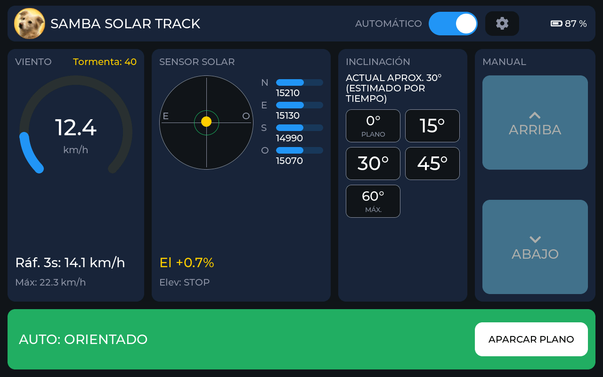
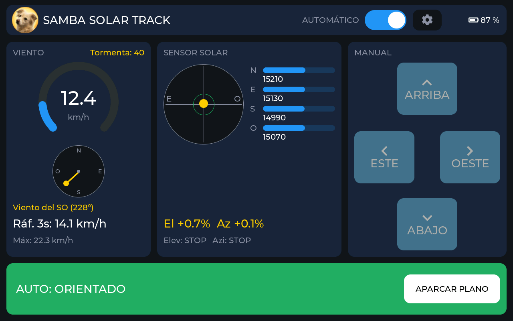
También las demás pantallas (configuración, AJUSTES, red, hora, acceso remoto, diseño, sonido, pantalla, firmware, calibración) usan toda la pantalla: están diseñadas para 1280 × 800 píxeles, con letra grande (por ejemplo Fig. 24). El panel grande se instaló el 20.10.2026 en la placa de pruebas; después el equipo es accesible en la red. Aún no está confirmado cómo se ve allí, si los dedos aciertan los botones ni si funciona con fluidez; las demás pantallas ampliadas solo se han compilado en el ordenador. Las imágenes de aquí las ha generado la herramienta de capturas a partir del código real de la interfaz.
Idioma de la pantalla (en preparación, generado en el ordenador, sin comprobar en el equipo)
La pantalla está disponible en siete idiomas: inglés, alemán, francés, español, neerlandés, portugués y polaco. De fábrica está en inglés. Por eso, en el primer arranque aparece primero la selección de idioma (Fig. 13h), incluso antes de la configuración. Los botones llevan el nombre del idioma en el propio idioma, por ejemplo ESPAÑOL o FRANÇAIS, para que encuentres tu idioma aunque no entiendas el que está elegido en ese momento.
- Elige el idiomaToca tu idioma. Resultado esperado: El botón se vuelve azul con una marca de verificación, y todos los textos cambian al instante a ese idioma.
- SeguirEn el primer arranque tocas el botón verde SEGUIR (en español: SEGUIR, en inglés: NEXT). Resultado esperado: La configuración aparece en el idioma elegido. La elección queda guardada, también tras un reinicio.
- Cambiarlo más tardeAbre la configuración (rueda dentada del panel) y toca arriba a la derecha el botón con el nombre del idioma, por ejemplo ESPAÑOL .... Resultado esperado: Aparece la selección de idioma; después de elegir, VOLVER lleva de nuevo a la configuración. El control sigue funcionando sin interrupción, también la protección contra tormentas.
Las traducciones las creó Claude de forma automática el 28.10.2026; ningún hablante nativo las ha revisado (supuesto). Si un equipo ya tiene un firmware anterior y está configurado, después de la actualización sigue en alemán. Los mensajes del registro (log) siempre siguen en alemán. La interfaz web muestra el mismo idioma que el equipo. Este manual también existe en los siete idiomas, como página y como PDF; el idioma se cambia arriba, en el índice. La versión de referencia es la alemana; las demás versiones del manual también están traducidas automáticamente y no las han revisado hablantes nativos (supuesto).
Sonidos del altavoz (en preparación, oídos en la placa de pruebas)
La placa de 10,1 pulgadas tiene un altavoz integrado. El firmware empezado lo usa para sonidos. En la placa de pruebas los sonidos se oyen el 20.10.2026 (firmware 0.4.6); los niveles de volumen y los tonos de alarma aún no se han comprobado uno por uno. Lo que aquí figura describe lo que contiene el firmware para ello.
| Sonido | Cuándo | Con qué frecuencia |
|---|---|---|
| Confirmación: un pitido corto y agudo | cada vez que se toca un botón o un interruptor en la pantalla | una vez por toque; se puede desactivar |
| Fallo de un componente de E/S: tres tonos cortos y agudos | el componente de las salidas de conmutación de la placa no responde | inmediatamente, luego cada 20 segundos |
| Tormenta: tres veces agudo-grave | la protección contra tormentas ha puesto el módulo en plano | inmediatamente, luego cada minuto |
| Fallo de motor: dos tonos largos | un motor no ha alcanzado su final de carrera a tiempo | inmediatamente, luego cada 30 segundos |
| Anemómetro averiado: agudo, luego grave | el anemómetro ya no responde; no hay protección contra tormentas | inmediatamente, luego cada 2 minutos |
Los tonos de alarma suenan mientras dure la situación. Si se dan varias a la vez, solo oyes la más importante (en el orden de la tabla). Un tono de alarma siempre tiene prioridad sobre el pitido de confirmación. Mientras la configuración no esté terminada, no hay tonos de alarma.
Ajuste: En la configuración, el botón SONIDO … lleva a una pantalla propia. Allí activas o desactivas los tonos de confirmación y ajustas el volumen con los botones − y + en diez niveles. Resultado esperado: Tras cada cambio de volumen suena un breve tono de prueba en el nuevo nivel; el ajuste rige al instante y se conserva tras apagar. De fábrica, los tonos de confirmación están activados y el volumen está en el nivel 7.
Para que no pase desapercibida una tormenta o un fallo, los tonos de alarma suenan como mínimo con el nivel 7, aunque pongas el volumen más bajo. Más alto que el nivel 10 no es posible: este límite está fijado de forma permanente para que la fuente y el fusible de la placa no se sobrecarguen ni siquiera con el tono de alarma al máximo y la batería cargando. Si los niveles se oyen bien en el equipo real y cuánta corriente necesita de verdad el altavoz se medirá en cuanto llegue la placa; hasta entonces el límite es un supuesto.
Reposo y detector de movimiento (en preparación, sin comprobar en el equipo)
La placa de 10,1 pulgadas tiene una cámara integrada. El firmware empezado la usa como detector de movimiento: si durante un rato no hay nadie delante de la pantalla, muestra un salvapantallas o apaga la retroiluminación. Si alguien se acerca a la pantalla, vuelve a iluminarse sola. Hasta ahora esto solo se ha compilado y probado en el ordenador; aún no se ha comprobado si la cámara detecta movimiento de forma fiable en el equipo.
El firmware evalúa las imágenes de la cámara solo en la memoria de trabajo, para detectar movimiento. No guarda ninguna imagen, no muestra ninguna y no envía ninguna por la red, tampoco a la interfaz web. De cada imagen solo queda el brillo medio de pequeñas zonas.
Qué ocurre:
- Tras la espera ajustada sin toques y sin movimiento delante de la pantalla, aparece el salvapantallas (Fig. 13e): una superficie oscura con el logotipo, la hora, el estado de la banda de estado en su color y el viento. El texto se desplaza cada 20 segundos a otro sitio, y la luz está atenuada. O la pantalla se apaga del todo, si lo ajustas así.
- Despertar: movimiento delante de la pantalla o un toque. El toque que despierta la pantalla no activa nada: así puedes tocar en cualquier sitio sin pulsar un botón sin querer. Solo cuando has levantado el dedo, el siguiente toque tiene efecto.
- En caso de peligro la pantalla permanece encendida: con tormenta, fallo del anemómetro, fallo de motor y fallo de un componente de E/S, la pantalla se ilumina y sigue así mientras dure la situación.
- En reposo, el control sigue funcionando con total normalidad, también la protección contra tormentas.
- En la oscuridad (habitación sin luz), la cámara no detecta movimiento; entonces solo despierta un toque. Si de repente hay luz, por ejemplo porque alguien enciende la luz o se pone justo delante de la cámara, la pantalla también se despierta. Quien está completamente quieto deja de detectarse como movimiento al cabo de unos segundos.
Ajuste:
- Abre la pantallaAbre la configuración (rueda dentada del panel) y toca PANTALLA … (Fig. 13d). Resultado esperado: Aparece la pantalla PANTALLA.
- Elige el tipoToca SIEMPRE ON, SALVAPANTALLAS o PANTALLA OFF. Resultado esperado: El botón elegido está en azul con borde amarillo. Con SIEMPRE ON, la espera y el detector de movimiento no tienen efecto y están bloqueados.
- Ajusta la esperaCon − y + eliges 1, 2, 3, 5, 10, 15, 20, 30, 45 o 60 minutos. Resultado esperado: El número del centro cambia.
- Detector de movimientoCon el interruptor activas o desactivas el detector de movimiento. Si está desactivado, solo despierta un toque. Resultado esperado: Al lado pone «DETECTOR MOV. ON» u «OFF», y debajo «Cámara lista.» Si ahí pone en naranja «Cámara no disponible», el firmware no ha encontrado la cámara; entonces solo despierta un toque.
- Comprueba el detector de movimientoDebajo, una línea muestra continuamente lo que ve la cámara: imágenes por segundo, brillo (0 a 255) y cuántas zonas se están moviendo, por ejemplo «5 img/s, brillo 92, movimiento 412 (desde 96)». Saluda con la mano a un metro aproximadamente delante de la pantalla. Resultado esperado: El número detrás de «movimiento» sube por encima de 96 y la línea se vuelve amarilla; entonces ese movimiento despertaría la pantalla. Si pone «demasiado oscuro», la habitación está demasiado oscura para la cámara; si pone «Cámara en reposo», está elegido SIEMPRE ON o el detector de movimiento está desactivado. Apunta los valores por si no funciona el despertar: ayudan a ajustarlo.
- Batería montadaCon el interruptor CON BATERÍA muestras u ocultas el nivel de la batería arriba a la derecha del panel (capítulo 7). Resultado esperado: Al lado pone «CON BATERÍA» o «SIN BATERÍA»; en el panel aparece o desaparece la indicación, y la rueda dentada y AUTOMÁTICO se desplazan en consecuencia.
- VolverToca VOLVER. Resultado esperado: Vuelve a aparecer la configuración. Todo rige al instante y se conserva tras apagar; no hace falta reiniciar.
De fábrica, el reposo está en salvapantallas tras 5 minutos con el detector de movimiento activado (propuesta, aún no definitiva). A distancia (interfaz web, ioBroker) no se puede ajustar.
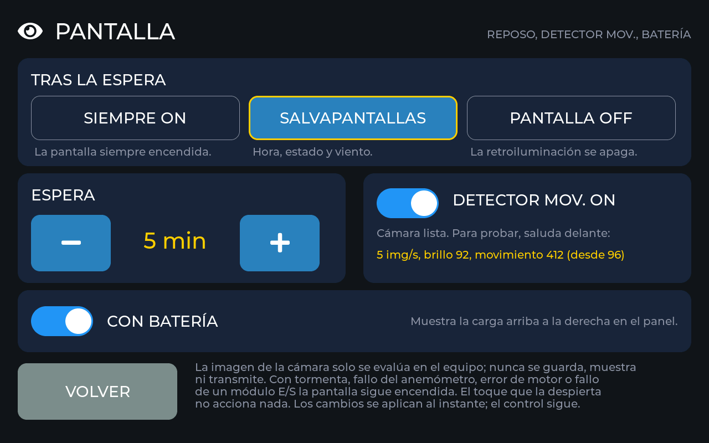
En la placa de pruebas (21.10.2026) aparece el salvapantallas, y un toque despierta la pantalla; el movimiento todavía no la despierta. Además, al instalar un firmware nuevo por la red el equipo se reiniciaba de inmediato; por eso el próximo firmware detiene la cámara antes de escribir. Instala este firmware una vez por USB (Instalar el firmware por primera vez); después vuelve a funcionar por la red. El próximo firmware determina además por sí mismo en qué parte de los datos de imagen está el brillo, y muestra los valores medidos de la cámara en la pantalla PANTALLA (paso «Comprueba el detector de movimiento»). Sigue pendiente si se encuentra la cámara, qué tan fiable detecta el movimiento (distancia, luz, falsas alarmas por ejemplo por luz parpadeante o animales), si la pantalla se mantiene estable con la cámara en marcha y si el brillo atenuado del salvapantallas es adecuado. Los umbrales de detección son estimados (supuesto) y se ajustarán tras la prueba.
Firmware nuevo desde Internet (en preparación, sin comprobar en el equipo)
El firmware para la placa de 10,1 pulgadas puede comprobar por sí mismo si hay un firmware más reciente e instalarlo desde Internet si tú lo deseas. También esto se ha compilado y probado hasta ahora solo en el ordenador. Lo que aquí figura describe lo que contiene el firmware para ello.
Para que el equipo acepte un firmware nuevo, debe estar firmado con la clave del proyecto (firma). La clave actual está registrada desde el firmware 0.4.7. El firmware anterior (hasta 0.4.6) solo conoce una clave antigua que ya no se usa: un equipo con ese firmware nunca encontrará una versión nueva por Internet. En ese caso, instala la 0.4.7 una vez a través de la interfaz web (CONFIGURAR, actualización de firmware) o, como arriba, por el cable USB; después sigue funcionando por Internet. Si la comprobación y la instalación funcionan en el equipo como se describe aquí se probará primero con las versiones 0.4.7 y 0.4.8. Si la comprobación indica un error (por ejemplo «sin conexión con la fuente de releases»), el botón INSTALAR permanece bloqueado.
Lo que el equipo hace por sí solo: Si el Wi-Fi está conectado, comprueba una vez al día (la primera comprobación, de 2 a 20 minutos después de conectarse). Para ello descarga un archivo pequeño, el manifiesto, por una conexión cifrada (HTTPS) desde la fuente de releases del proyecto en https://firmware.samba-solar.de/. Nunca instala por sí solo. Si hay una versión más reciente, en la barra superior aparece arriba, en pequeño y en amarillo, FIRMWARE NUEVO y debajo el número. No suena ningún tono.
Ver e instalar:
- Abre la pantallaRueda dentada arriba a la derecha y luego, en la configuración, el botón FIRMWARE …. El botón solo existe cuando la configuración se ha guardado una vez. Resultado esperado: La pantalla FIRMWARE muestra la versión en uso con la fecha de compilación, cuándo se comprobó por última vez y el resultado.
- Comprobar ya (opcional)Botón COMPROBAR YA. Funciona como máximo una vez por minuto y solo con el Wi-Fi conectado. Resultado esperado: Al cabo de unos segundos aparece «ACTUAL», «FIRMWARE NUEVO DISPONIBLE» con número, fecha y texto breve, o «COMPROBACIÓN FALLIDA» con el motivo.
- InstalarBotón INSTALAR (solo con «FIRMWARE NUEVO DISPONIBLE») y confirma la pregunta con INSTALAR. Resultado esperado: «DESCARGANDO …» con una barra. Mientras tanto el control sigue regulando con normalidad, también la protección contra tormentas. Con CANCELAR se puede detener la descarga; entonces no cambia nada.
- Escritura y reinicioDespués de la descarga, el equipo comprueba el archivo. Solo cuando ya no se mueve ningún motor, apaga todas las salidas y escribe el firmware nuevo. Resultado esperado: Sobre la pantalla aparece «ACTUALIZAR FIRMWARE – Escribiendo firmware comprobado»; después el control se reinicia. Los ajustes se conservan.
- Después del reinicioNo hagas nada y deja funcionar el equipo al menos dos minutos. Resultado esperado: La nueva versión aparece en la pantalla FIRMWARE. Pasados dos minutos, el firmware nuevo se confirma a sí mismo en cuanto la pantalla y la placa funcionan y – solo si el Wi-Fi está activado – el equipo se ha conectado al Wi-Fi al menos una vez desde el reinicio (el autotest).
La escritura dura, según una estimación, alrededor de un minuto (supuesto, aún sin medir). Durante ese tiempo todos los motores están parados y el módulo no se pone en plano si hay tormenta. Por eso la instalación no empieza mientras la protección contra tormentas esté activa o un motor se esté moviendo. Si llega una tormenta durante la descarga o entre la descarga y la escritura, el equipo cancela y descarta el archivo descargado, aunque la tormenta pase enseguida; después tienes que volver a confirmar la instalación. Lo mejor es instalar con tiempo tranquilo.
Si el firmware nuevo se cuelga o se reinicia en los dos primeros minutos, el equipo vuelve a arrancar por sí solo el firmware anterior. Lo mismo ocurre si no supera el autotest a tiempo (por ejemplo porque la pantalla o la placa no responden o porque nunca se conecta al Wi-Fi): entonces primero apaga todas las salidas y arranca el firmware anterior. El plazo es de 12 minutos tras el reinicio; si el Wi-Fi está activado, de 30 minutos, para que un router caído brevemente no provoque enseguida la reversión. Si el Wi-Fi está desactivado, no cuenta para el autotest. Ambos plazos son valores propuestos, aún no probados en el equipo. Mientras el firmware nuevo espera el autotest, arriba, entre el nombre del producto y AUTOMÁTICO, aparece una banda naranja sobre todas las pantallas: el tiempo hasta la comprobación, después «NO SUPERADO», el estado de las condiciones (SALIDAS y WI-FI: OK, FALTA u OFF) y el tiempo hasta la reversión. Sin la placa RearCircuitBoard_10 aparece «SIN PLACA: ACTIVAR SIMULACIÓN» (Fig. 13c). Por qué falla el autotest figura además en el registro. Tras una reversión, la pantalla indica «ACTUALIZACIÓN REVERTIDA»; toca OK.
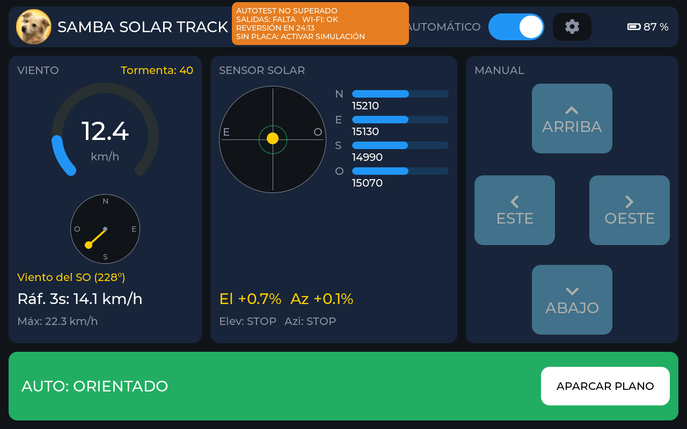
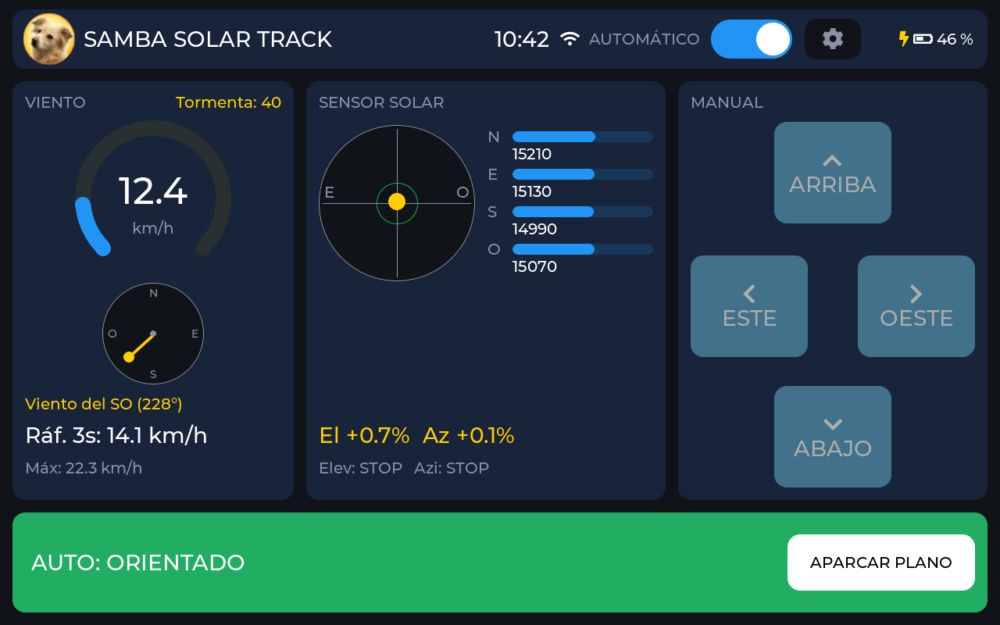
Después, la misma versión ya no se ofrece en la barra superior, pero se puede volver a instalar en la pantalla FIRMWARE. En la placa de 10,1 pulgadas esto vale también para una actualización a través de la interfaz web.
A distancia: En la interfaz web, en CONFIGURAR, está el bloque «Firmware desde Internet» con los mismos datos y los botones COMPROBAR YA e INSTALAR. Solo puede manejarlos un dispositivo con sesión iniciada (token), y el interruptor «Control remoto bloqueado» de la pantalla bloquea ambos. La comprobación diaria sigue funcionando aunque el control remoto esté bloqueado.
Al comprobar, el equipo solo envía una petición sencilla con su versión de firmware; ningún identificador, ninguna contraseña, ningún token. La página del proyecto ve, como cualquier página de Internet, la dirección IP pública de tu conexión a Internet. No hay ningún interruptor que desactive la comprobación; sin Wi-Fi no se realiza.
Inclinación por orden: ir a un ángulo fijo (en preparación, sin comprobar en el equipo)
En lugar de seguir al sol, la elevación puede ir por orden tuya a un ángulo fijo, por ejemplo uno plano en verano o uno inclinado en invierno. Después, el automático queda en pausa hasta que vuelvas a anular la orden. Esto solo existe en la versión de 10 pulgadas y solo en el modo de funcionamiento SOLO VERTICAL. Con dos ejes (vertical + horizontal), la tarjeta INCLINACIÓN, los ángulos deseados, los tiempos de recorrido y la estructura están ocultos. También esta función se ha compilado y probado hasta ahora solo en el ordenador; las imágenes las ha generado la herramienta de capturas a partir del código real de la interfaz.
De fábrica no hay ningún sensor de inclinación. El firmware calcula la inclinación a partir del tiempo durante el que realmente ha tenido encendido el motor y de los tiempos de recorrido calibrados. Por eso la pantalla siempre muestra «APROX. 30°» o «DESCONOCIDO», nunca un número exacto. Qué tan exacto es figura más abajo; todos los datos al respecto son supuestos hasta que se mida en el rack. Con más precisión funciona con la toma Hall: entonces el firmware cuenta los impulsos del motor y muestra la inclinación sin «APROX.».
Qué ángulos hay: siempre 0° (plano), 30° y 60° (máx.), y además hasta dos ángulos deseados que ajustas en AJUSTES (grados enteros de 1 a 59, no 30, no dos veces el mismo; 0 significa desactivado). Los botones están siempre ordenados por ángulo. Mientras el tiempo de recorrido no esté calibrado, solo funcionan 0° y 60°; los demás ángulos aparecen en gris.
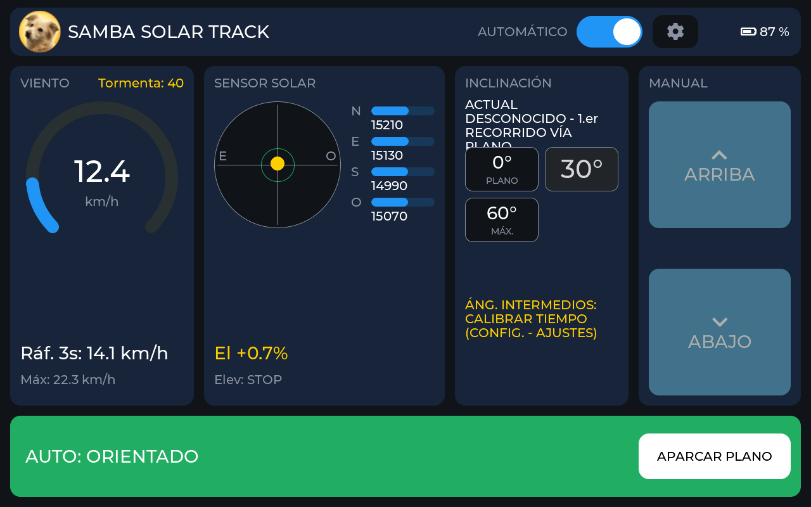
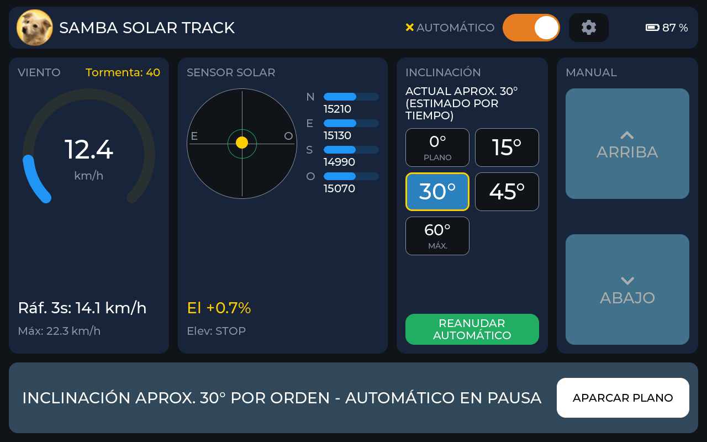
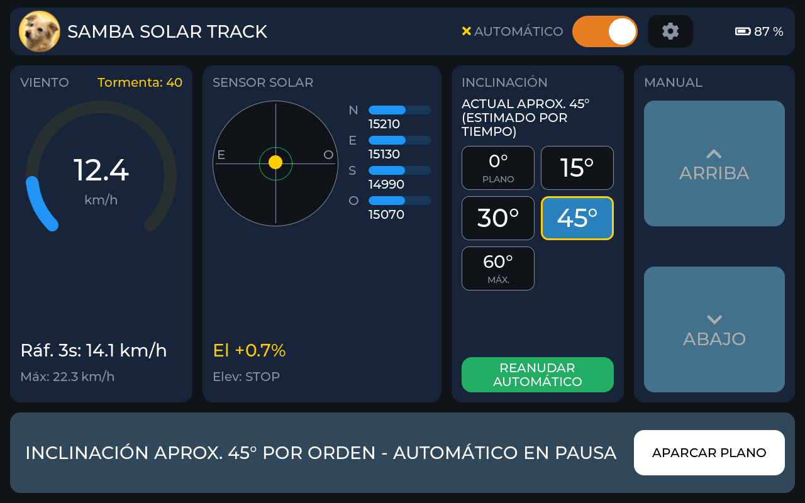
| Indicación en la tarjeta INCLINACIÓN | Significado |
|---|---|
| ACTUAL DESCONOCIDO - 1.er RECORRIDO VÍA PLANO | La posición no se conoce desde el encendido, o la estimación es demasiado insegura (más de 6°). |
| ACTUAL APROX. 31° (ESTIMADO POR TIEMPO) | Inclinación estimada. |
| Botón de ángulo azul con borde amarillo | Esta inclinación por orden está vigente, también durante tormenta, aparcado o modo manual. Debajo está el botón REANUDAR AUTOMÁTICO. |
| Interruptor AUTOMÁTICO naranja, con una cruz amarilla delante | El automático está activado, pero en pausa, porque hay una inclinación por orden vigente. Con REANUDAR AUTOMÁTICO el interruptor vuelve a ser azul y la cruz desaparece. |
| NO DISPONIBLE | Sin la configuración terminada no hay inclinación por orden; los botones están bloqueados. |
Ir a un ángulo:
- Lee la posiciónMira la tarjeta INCLINACIÓN del panel (Fig. 14 o 15). Resultado esperado: Arriba pone «ACTUAL APROX. 31° (ESTIMADO POR TIEMPO)» o «ACTUAL DESCONOCIDO - 1.er RECORRIDO VÍA PLANO».
- Elige el ánguloToca en la tarjeta el ángulo deseado. Resultado esperado: El botón se vuelve azul con borde amarillo, debajo aparece REANUDAR AUTOMÁTICO, el interruptor AUTOMÁTICO de arriba se vuelve naranja con una cruz amarilla delante, y la banda de estado muestra el proceso (paso siguiente).
- ObservaSi la posición es desconocida o demasiado insegura, la elevación va primero a plano hasta el final de carrera: el recorrido de referencia. Sin finales de carrera dura el tiempo máximo de recorrido completo (en el Samba-Solar-Rack 2.0-E Plus, 90 segundos), aunque el bastidor esté parado hace rato. Después sigue el recorrido al ángulo. Resultado esperado: sucesivamente «INCLINACIÓN 45°: REFERENCIA EN POSICIÓN PLANA», «INCLINACIÓN 45°: MOVIENDO MÁS INCL., APROX. 12°» y al final «INCLINACIÓN APROX. 45° POR ORDEN - AUTOMÁTICO EN PAUSA» (Fig. 17). Después no se reajusta.
- Volver al automáticoToca en la tarjeta REANUDAR AUTOMÁTICO. Resultado esperado: La banda de estado vuelve a mostrar AUTO, el interruptor AUTOMÁTICO vuelve a ser azul sin cruz y el seguimiento empieza de nuevo.
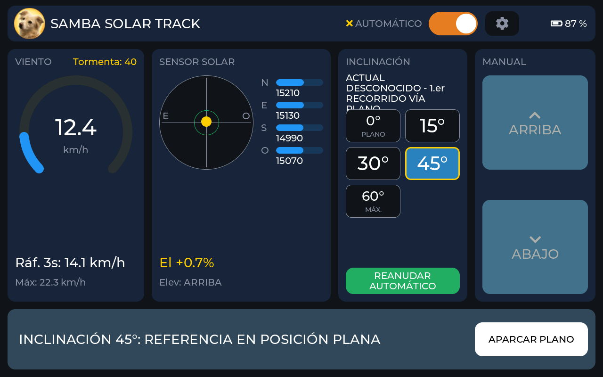
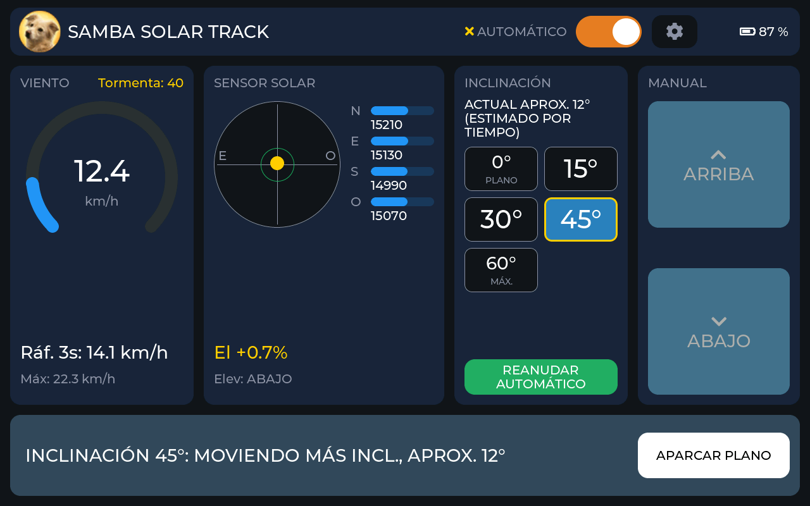
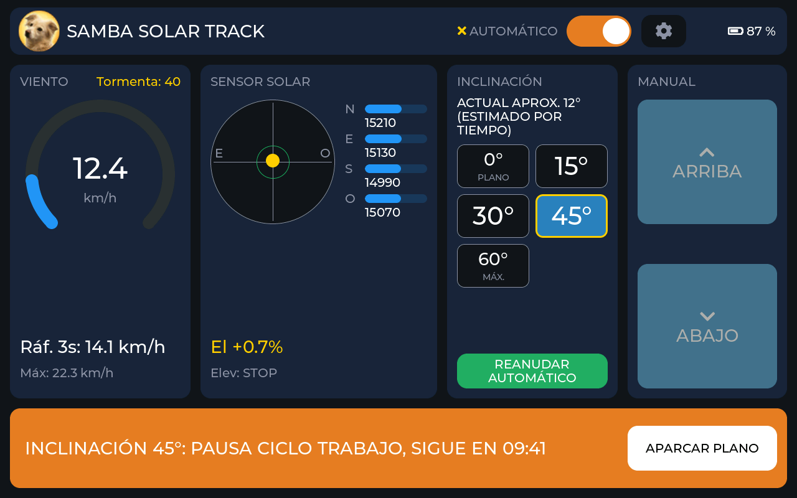
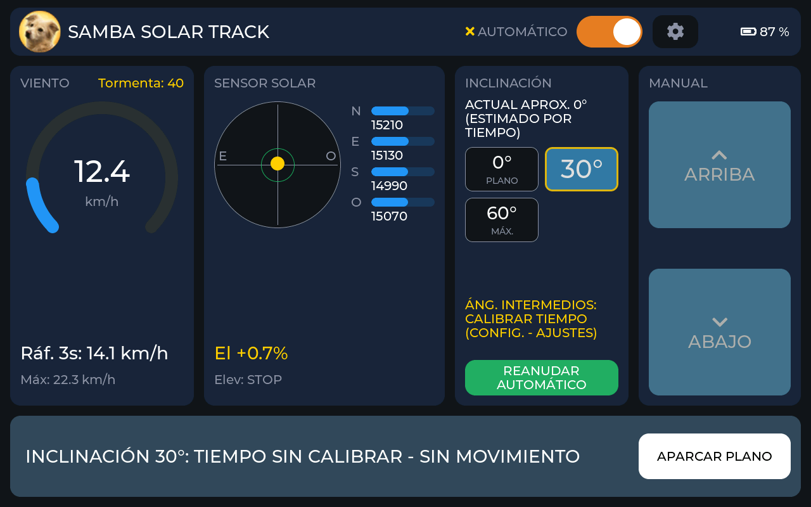
Qué tiene prioridad (el orden de prioridades del control): falta de configuración, fallo de un componente de E/S, tormenta, fallo de motor, modo manual, aparcado por orden y fallo del anemómetro van antes. Solo después viene la inclinación por orden, y esta a su vez va antes que el fallo del sensor, la noche y el automático. Así pues, la inclinación por orden rige también de noche y con el sensor solar averiado.
| Situación | Qué ocurre |
|---|---|
| Tormenta, fallo del anemómetro | Tienen prioridad: la elevación va a plano. Después vuelve sola al ángulo ordenado. La tarjeta dice «TORMENTA TIENE PRIORIDAD - DESPUÉS SE IRÁ AL ÁNGULO» (Fig. 22). |
| APARCAR PLANO | Sigue siendo un botón propio y tiene prioridad («APARCADO TIENE PRIORIDAD …»). Tras anular el aparcado, la instalación vuelve al ángulo. |
| Modo manual (automático off) | La inclinación por orden queda en espera; actúa en cuanto el automático vuelva a estar activado («ACTÚA EN CUANTO EL AUTOMÁTICO ESTÉ ON»). |
| Fallo | Tiene prioridad («FALLO TIENE PRIORIDAD»); no se mueve nada. |
| Corte de corriente, reinicio | La inclinación ordenada queda guardada, igual que la orden de aparcado. Pero tras el encendido la posición es desconocida: el primer recorrido a un ángulo intermedio empieza con un recorrido de referencia. |
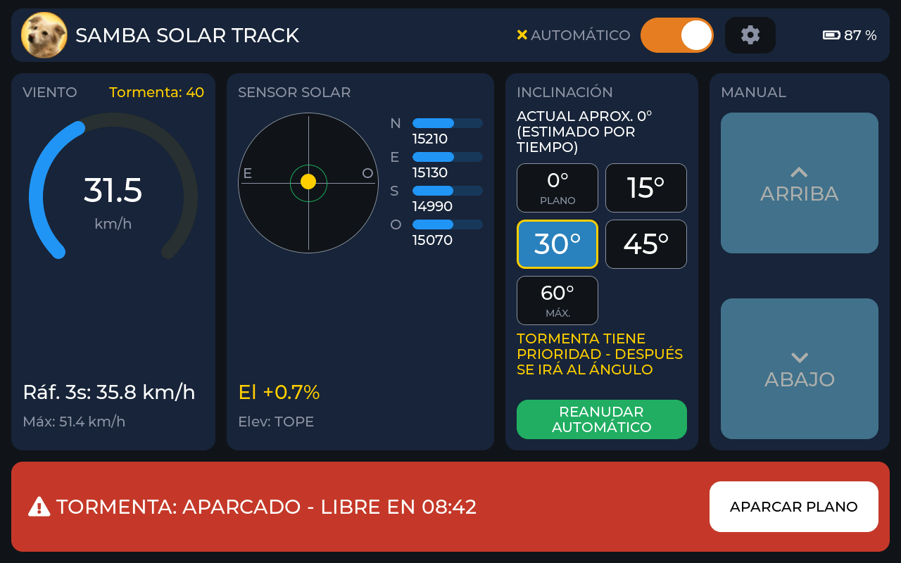
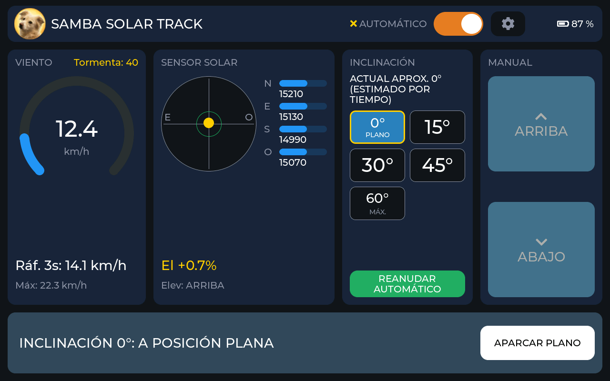
En el navegador: En la versión de 10 pulgadas, la interfaz web muestra la misma distribución que la pantalla (Fig. 23a y 23b): en una pantalla ancha (PC, tableta, móvil en horizontal), la barra superior, las tarjetas VIENTO (con rosa de los vientos si hay un anemómetro con dirección configurado), SENSOR SOLAR, INCLINACIÓN y MANUAL con los mismos anchos y debajo la banda de estado; en el móvil, una debajo de otra. En la tarjeta INCLINACIÓN están los mismos botones y el texto «Actual aprox. 31° (estimado por tiempo)». Solo puede manejarla un dispositivo con sesión iniciada, y solo si el control remoto no está bloqueado. La calibración solo existe en la pantalla. Las imágenes proceden de la herramienta de vista previa de la interfaz web (python3 tools/web_vorschau.py) con un equipo simulado, no del seguidor real.
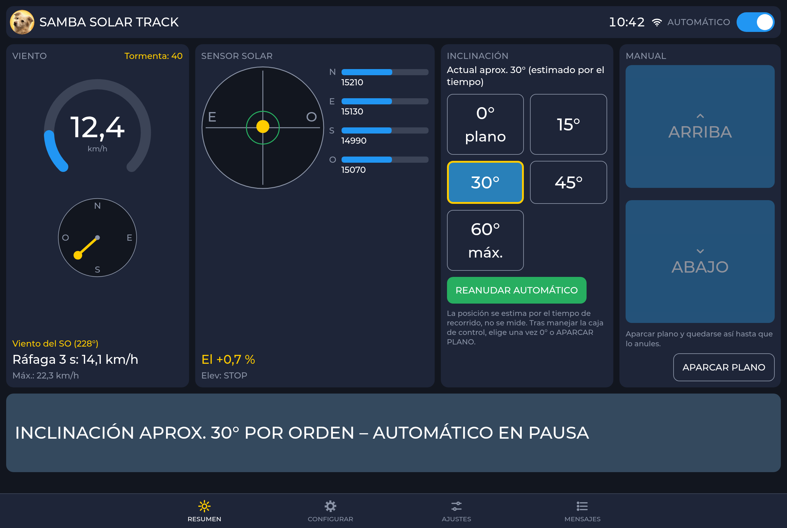
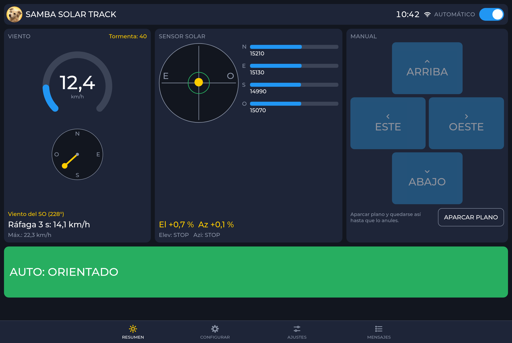
Ajustar ángulos deseados, tiempos de recorrido y estructura
Los valores están en la configuración, en AJUSTES: los dos ángulos deseados en el grupo CONTROL; los tiempos de recorrido, la estructura, la pérdida de arranque y los tres valores de la toma Hall en el grupo PUESTA EN MARCHA. Los valores del grupo PUESTA EN MARCHA solo se pueden cambiar mientras no se mueva ningún motor.
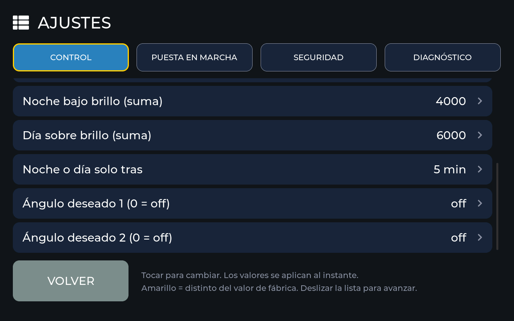
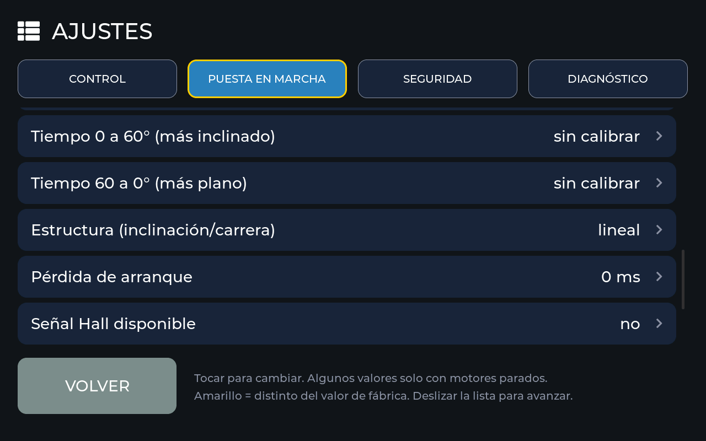
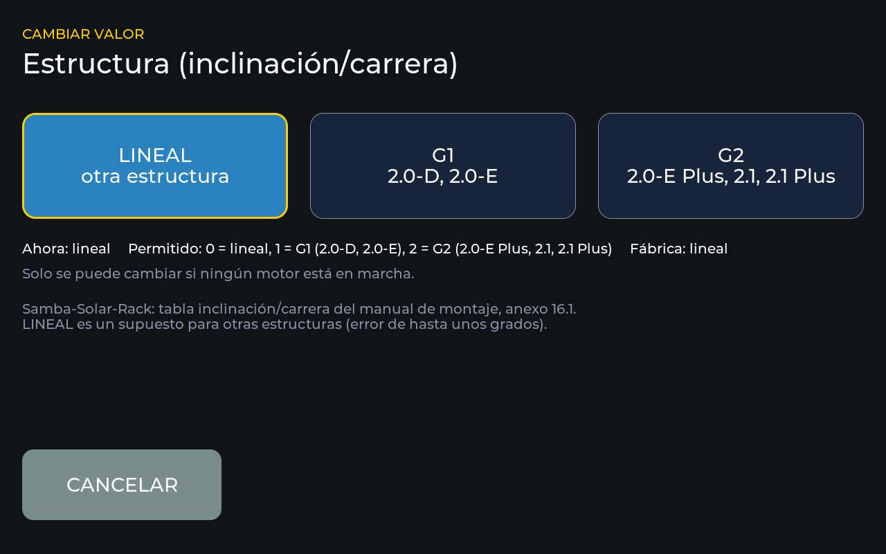
| Valor | De fábrica | Permitido | Para qué |
|---|---|---|---|
| Tiempo 0 a 60° (más inclinado) | sin calibrar | 10 a 300 s | Tiempo para todo el recorrido de plano a máximo. Lo mejor es calibrarlo. |
| Tiempo 60 a 0° (más plano) | sin calibrar | 10 a 300 s | Tiempo para el recorrido de vuelta. Lo mejor es calibrarlo. |
| Estructura (inclinación/carrera) | lineal | lineal, G1 (2.0-D, 2.0-E), G2 (2.0-E Plus, 2.1, 2.1 Plus) | Convierte el recorrido del motor en grados (tabla del manual de montaje, anexo 16.1). |
| Pérdida de arranque | 0 ms | 0 a 3000 ms | Parte de cada recorrido en la que el bastidor aún no se mueve. |
| Ángulo deseado 1 y 2 | desactivado | 1 a 59°, no 30, sin repetir; 0 = off | Botones adicionales en la tarjeta INCLINACIÓN. Rige al instante. |
Los tiempos de recorrido solo valen si son más cortos que 0,9 × el tiempo máximo de recorrido de la elevación. Si acortas el tiempo máximo, se consideran sin calibrar hasta que los valores vuelvan a encajar. «LINEAL» es un supuesto para otras estructuras; en una estructura G2 sería erróneo hasta en unos 2,6°. Si cambias un ángulo deseado que está ordenado en ese momento, o lo desactivas, la inclinación por orden sigue vigente; REANUDAR AUTOMÁTICO la anula. Para el Samba-Solar-Rack 2.0-E Plus (control síncrono HAKIWO SCN4, sin finales de carrera en el seguidor) rige además: «Final de carrera elevación instalado» = no, tiempo máximo de elevación 90 s. Introducido a mano, en el 2.0-E Plus serían unos 75 s según el manual de montaje; calibrar es más exacto.
Calibrar el tiempo de recorrido
Una vez en la puesta en marcha y, si es posible, de nuevo en otoño y en primavera: la temperatura cambia la velocidad de los motores (supuesto, sin medir). Dónde: Configurar → AJUSTES → PUESTA EN MARCHA → CALIBRAR TIEMPO (última línea; desplaza la lista hacia abajo, Fig. 34; con toma Hall el botón se llama CALIBRAR: TIEMPO Y PASOS HALL). El control y la protección contra tormentas siguen funcionando mientras tanto.
- PreparaDespeja la zona de giro: nadie junto a la estructura, nada en el camino. Abre la pantalla CALIBRAR TIEMPO. Si el automático está en ON, toca AUTOMÁTICO OFF. Resultado esperado: «PASO 1 DE 4: PREPARAR» (Fig. 27); después se puede elegir INICIO.
- INICIOToca INICIO. Resultado esperado: «A PLANO, HASTA EL TOPE» (Fig. 28). Sin finales de carrera, el contacto permanece cerrado durante todo el tiempo máximo de recorrido, aunque el bastidor esté parado hace rato. Si el ciclo de trabajo justo no alcanza para ello, aparece «ESPERA POR CICLO DE TRABAJO» con el tiempo restante.
- MEDIR SUBIDAToca MEDIR SUBIDA. El tiempo corre (Fig. 29). Toca LLEGADO en cuanto el bastidor se detenga y cese el ruido del motor (el motor está entonces en su propio final de carrera). Resultado esperado: «SUBIDA medida» con el tiempo con precisión de una décima de segundo. Con finales de carrera en el seguidor y con toma Hall, la medición termina sola.
- PausaSe recomienda una pausa de unos 15 minutos para que los motores se enfríen (ciclo de trabajo; Fig. 30). La pausa no es obligatoria. Resultado esperado: La pantalla muestra la recomendación y el botón MEDIR BAJADA.
- MEDIR BAJADAToca MEDIR BAJADA y de nuevo LLEGADO en cuanto el bastidor esté plano. Resultado esperado: Aparece el segundo tiempo. Si el motor se detiene en mitad de la medición por una pausa del ciclo de trabajo, la pantalla muestra «PAUSA CICLO TRABAJO … NO ha llegado» (Fig. 31): entonces no toques nada; después la medición continúa sola.
- AceptarLa pantalla muestra ambos tiempos (Fig. 32). Toca ACEPTAR. Resultado esperado: En AJUSTES aparecen los tiempos en lugar de «sin calibrar»; en la tarjeta INCLINACIÓN se pueden elegir todos los ángulos.
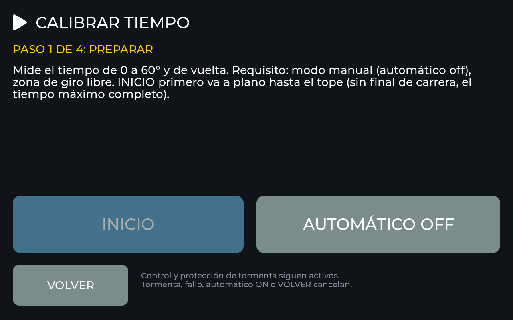
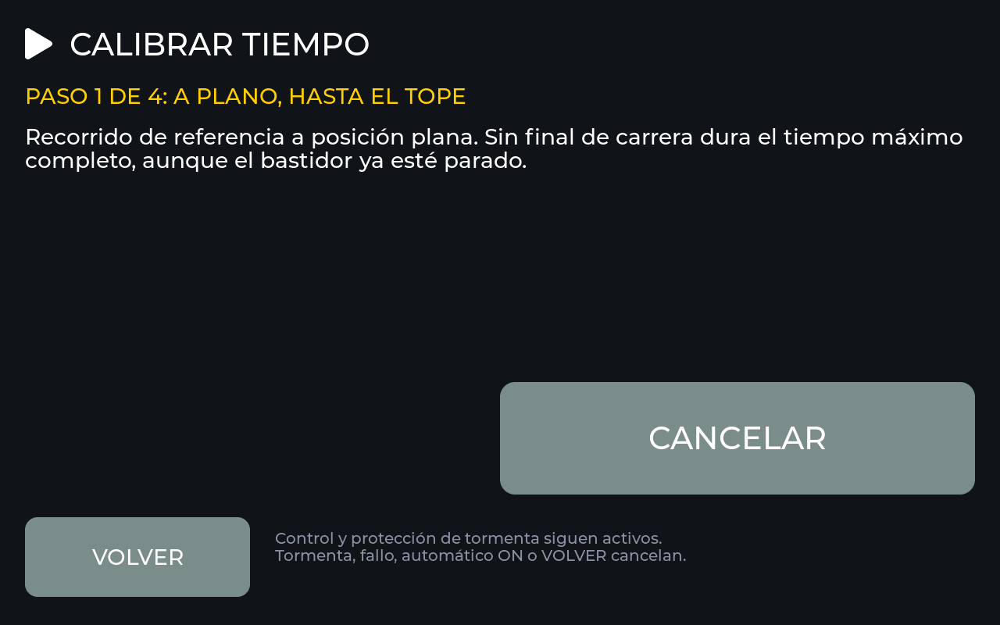
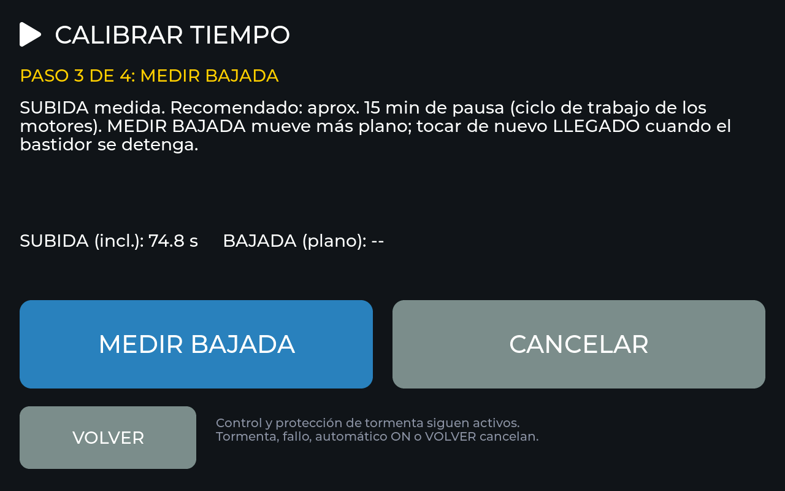
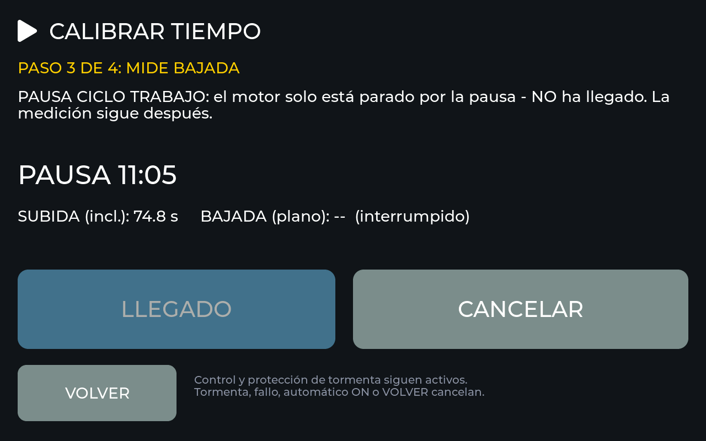
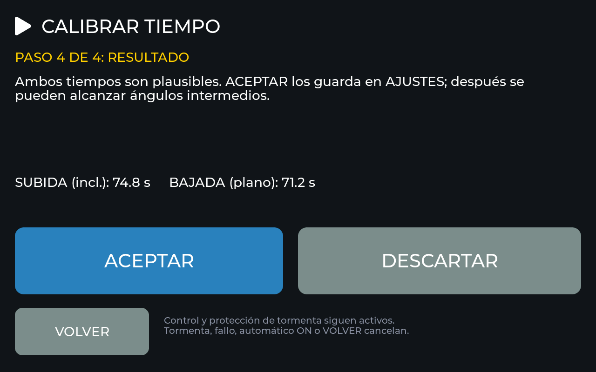
El firmware comprueba la medición: cada tiempo debe durar al menos 10 segundos y ser más corto que 0,9 × el tiempo máximo de recorrido, y SUBIDA y BAJADA pueden diferir como mucho en un factor 2. Si no, aparece el motivo en letra amarilla y no se acepta nada (Fig. 33). Una tormenta, un fallo, el automático en ON o VOLVER cancelan la calibración. Mientras calibras, el equipo rechaza los movimientos manuales a distancia.
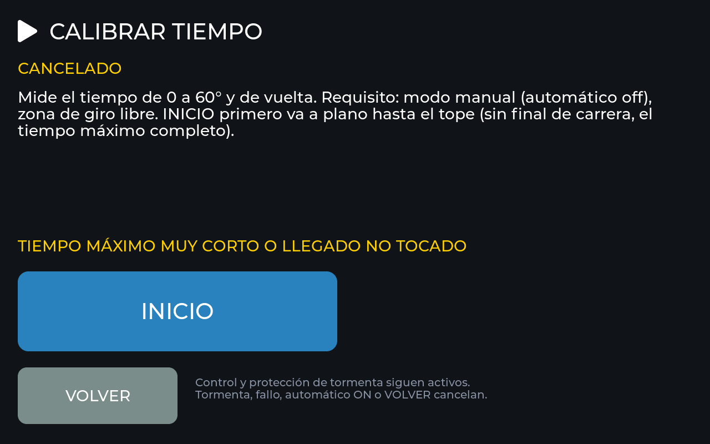
¿Qué tan exacto es?
Todas las cifras de esta tabla son supuestos, no mediciones. Se comprobarán en el rack.
| Origen de la desviación | Orden de magnitud |
|---|---|
| Finales de carrera de la mecánica | 0° ± 1°, 60° ± 1,5° (manual de montaje) |
| Tabla de la estructura G1/G2 | menos de 0,1° |
| Velocidad tras la calibración (carga, tensión) | aprox. ± 3 a 5 % del recorrido, ± 1 a 1,5° a 30° |
| Temperatura (invierno frente a calibración en verano) | hasta unos 3 a 6° a 30° |
| Arranque e inercia por recorrido | hasta casi 1° por recorrido |
Expectativa: un recorrido desde una referencia ± 1 a ± 3°; en invierno, con una calibración de verano, hasta unos ± 5°. En reposo la estimación no cambia. Tras un día de automático con muchos recorridos de seguimiento cortos, suele ser «DESCONOCIDO»; entonces el primer recorrido a un ángulo intermedio empieza con un recorrido de referencia. Con cada recorrido crece la incertidumbre; si es como máximo de 3°, la elevación va directamente; si no, antes pasa por plano. Los valores fijos para ello (0,3° por recorrido, más el 8 % de los grados recorridos, tolerancia de 1°, recorrido mínimo de 0,5 s, 2° de suplemento tras un reinicio en mitad de un recorrido) están fijados en el firmware y también son supuestos.
Si mueves el módulo desde la caja de control (interruptor basculante, mando a distancia por radio, pulsadores del control síncrono) o con la manivela, la estimación deja de ser correcta. Después elige una vez 0° o APARCAR PLANO para que el firmware vuelva a tener una referencia. Con la toma Hall activada, cuenta también los movimientos hechos a través del control síncrono, mientras lleguen sus impulsos.
Sin finales de carrera en el seguidor, un final de carrera se considera alcanzado cuando el contacto ha estado cerrado durante todo el tiempo máximo de recorrido (final de carrera por tiempo). Si los motores no tenían tensión en ese momento (la fuente estaba apagada y la placa funcionaba con la batería, el fusible de los motores se había disparado o, con dos fuentes, la de los motores estaba apagada) o si el control síncrono (por ejemplo HAKIWO SCN4) canceló el recorrido sin avisar, esa referencia no es correcta, y tampoco la estimación posterior. Sin toma Hall, el firmware no puede detectarlo; por eso nunca muestra más que «APROX.». Con toma Hall lo detecta por la falta de impulsos.
Tras un reinicio sin pérdida de tensión (configuración guardada, actualización, cuelgue), el firmware recupera la estimación de una memoria que sobrevive al reinicio; si en el momento del reset había un motor en marcha, la estimación se vuelve 2° más insegura. Que esta memoria se conserve en el board es un supuesto. Si los motores no tienen tensión durante un movimiento (fuente de alimentación apagada y board funcionando con la batería, fusible de los motores disparado) o si el control de sincronización interrumpe el movimiento, los contactos se cierran igualmente; tras el tiempo máximo, el firmware memoriza entonces un tope por tiempo falso y una inclinación falsa. Por eso, con tormenta, fallo del anemómetro y aparcado vuelve a mover a plano (ver más abajo). Si el motor se mueve realmente lo detecta la señal Hall, si está instalada y activada (también comprobado solo en el ordenador). En la simulación, la función trabaja con motores simulados; su posición nunca se traslada al funcionamiento real.
[ 120.010][I][main ] Neigung auf Befehl: 45 Grad (vorher keine), Quelle Display [ 120.010][I][track ] Neigung 45 Grad: Bezugsfahrt noetig [ 210.020][I][elpos ] Bezug Flachstellung (Laufzeit-Endlage), Stellung war unbekannt [ 210.540][I][track ] Neigung 45 Grad: Zielfahrt STEILER von ca. 0.0 Grad, erwartet 55.1 s [ 266.160][I][track ] Neigung 45 Grad erreicht: ca. 45.0 Grad nach 55.6 s, Unsicherheit 3.9 Grad
Las líneas son un ejemplo con el formato del firmware; los números están calculados para el Rack 2.0-E Plus con estructura G2 y 75 segundos de tiempo de recorrido. La línea de estado cada 5 segundos termina entonces con «| Neigung ca. 45 Grad (+-4), Ziel 45» (inclinación aprox. 45°, objetivo 45).
Con señal Hall (más preciso)
¿Qué es esto? El motor de la elevación tiene un sensor Hall: en cada vuelta de su motor emite impulsos cortos. La pequeña placa HallTapBoard de la caja de control toma estos impulsos en el control de sincronización (la señal Hall) y los transmite a la entrada de impulsos J22 del control a través de optoacopladores, con aislamiento galvánico (capítulo 6). El control los cuenta con su contador de impulsos y así sabe cuánto ha avanzado el motor. Ya no tiene que estimar la inclinación a partir del tiempo de recorrido. Esto solo existe en la versión de 10 pulgadas y solo en el modo SOLO VERTICAL. Solo se cuentan los impulsos del motor 1.
La evaluación solo está construida y probada en el ordenador. El HallTapBoard es un borrador (0.3) y aún no se ha fabricado; todavía no está claro si el control de sincronización HAKIWO SCN4 tolera la toma de señal (capítulo 6). Las imágenes las ha generado la herramienta de capturas a partir del código real de la interfaz.
Sin ella, la inclinación por orden funciona como se describe arriba: estimada a partir del tiempo de recorrido, con «APROX.» delante del número. No necesitas la señal Hall para usar la inclinación por orden.
Activar – paso a paso:
- ConectarInstala y conecta el HallTapBoard (capítulo 6) y enchufa su cable en J22 de la placa RearCircuitBoard_10 (entrada de impulsos HALL). Resultado esperado: En la pantalla no se ve nada; en el HallTapBoard se encienden «24V» (amarillo) y «5V OK» (verde).
- ActivarEn la pantalla: rueda dentada → AJUSTES → PUESTA EN MARCHA, desplaza la lista hasta el final, toca «Señal Hall disponible» y elige SÍ (Fig. 34). Esto solo es posible mientras ningún motor esté en marcha. Resultado esperado: La línea muestra «sí» en amarillo, porque el valor difiere del ajuste de fábrica. El botón inferior se llama ahora CALIBRAR: TIEMPO Y PASOS HALL.
- CalibrarAutomático off (modo manual), luego abre CALIBRAR: TIEMPO Y PASOS HALL. La pantalla se sigue llamando CALIBRAR TIEMPO. Procede como en la calibración del tiempo de recorrido de arriba: INICIO, MEDIR SUBIDA, pausa, MEDIR BAJADA. Los recorridos de medición terminan por sí solos en cuanto el bastidor se detiene (Fig. 35). LLEGADO solo lo necesitas si el bastidor está visiblemente parado y el tiempo sigue corriendo. Resultado esperado: En el resultado aparecen para SUBIDA y BAJADA un tiempo y un número de pasos Hall cada una, y ambos números son aproximadamente iguales (Fig. 36).
- AceptarToca ACEPTAR. Resultado esperado: En AJUSTES, en «Pasos Hall por carrera» aparece un número en lugar de «sin calibrar» (la media de SUBIDA y BAJADA), y en los tiempos de recorrido, los tiempos medidos.
- Si no funcionaSi al calibrar aparece «HALL CUENTA AL REVÉS - INVERTIR SENTIDO (AJUSTES)» o en la cabecera «FALLO SEÑAL HALL»: AJUSTES → «Invertir sentido de conteo Hall» → SÍ, y luego calibra de nuevo. Resultado esperado: En la siguiente calibración ya no aparece el aviso. Si aparece «POCOS PASOS HALL - REVISAR SEÑAL HALL», apenas llegan impulsos: revisa el cable en J22 y el HallTapBoard (ambos pilotos deben estar encendidos, capítulo 6).
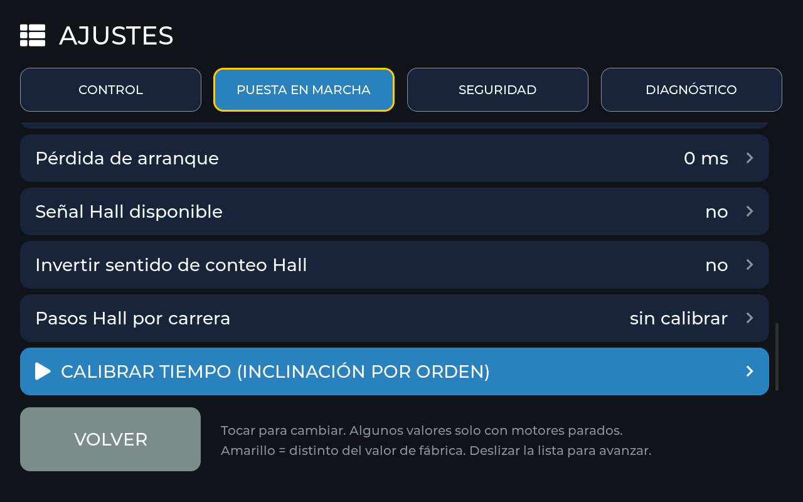
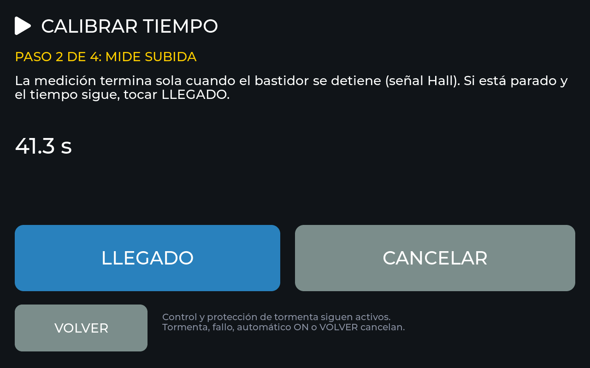
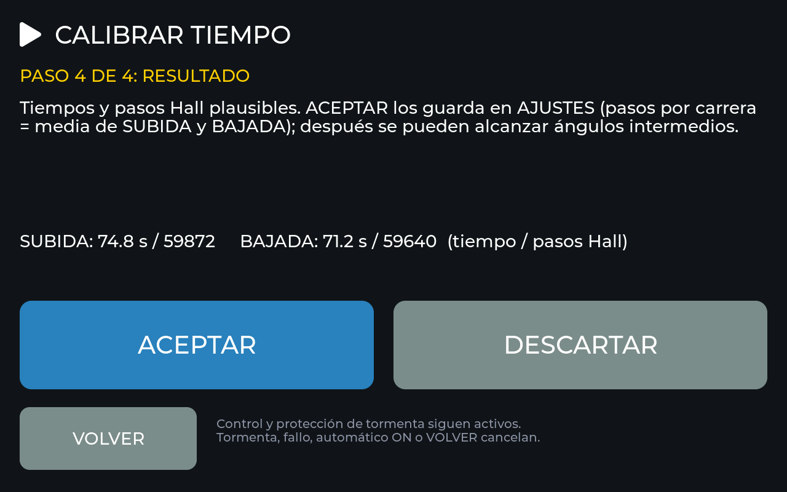
El firmware comprueba el resultado: los tiempos deben superar la comprobación de arriba, SUBIDA y BAJADA deben contar cada una al menos 1000 pasos Hall y no pueden diferir más de un 3 % (valor propuesto). Si no, el motivo aparece en letra amarilla y no se acepta nada.
En funcionamiento:
- La tarjeta INCLINACIÓN muestra la inclinación contada sin «APROX.», por ejemplo «ACTUAL 30° (SEÑAL HALL)» (Fig. 37). La precisión real se mide en el rack; se suponen 0,2° (supuesto).
- Después de encender, la inclinación es desconocida hasta que la elevación haya llegado una vez a un tope. Por eso, el primer movimiento a un ángulo intermedio empieza con un movimiento a la posición plana (recorrido de referencia). Con señal Hall termina en cuanto el motor se detiene, no solo tras el tiempo máximo (tope por parada). Después, la elevación va directamente al ángulo y se desconecta antes en la medida de la inercia aprendida.
- Si el motor se detiene a mitad de camino (por ejemplo porque los motores no tienen tensión o el control de sincronización ha interrumpido), el control termina el movimiento; el log indica «Antrieb steht ohne Endlage» (motor parado sin tope). La inclinación sigue siendo conocida.
- Si mueves el módulo desde la caja de control (pulsadores del control de sincronización), el control cuenta también; la inclinación sigue siendo correcta.
- Con tormenta, fallo del anemómetro y APARCAR PLANO, la elevación va como siempre hasta la posición plana. La señal Hall nunca interrumpe este movimiento a mitad de camino. Si la elevación está comprobadamente ya plana, el movimiento termina tras unos 1,5 segundos; si la inclinación es desconocida, dura como sin señal Hall todo el tiempo máximo.
- Mientras «Pasos Hall por carrera» no esté calibrado, la pantalla sigue mostrando la estimación con «APROX.»; pero el final de un movimiento por parada ya existe.
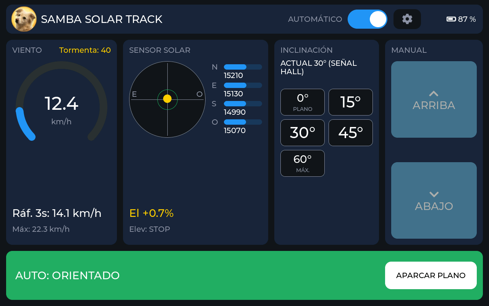
El control no cuenta impulsos adecuados: no llega ninguno aunque el motor debería moverse, cuentan en contra del sentido de marcha o llegan demasiados (impulsos parásitos). Revisa el cable en J22, el HallTapBoard (pilotos «24V» y «5V OK»), la tensión de los motores y el sentido de conteo. Mientras se muestre el aviso, solo se pueden elegir 0° y 60°; los ángulos intermedios muestran «FALLO SEÑAL HALL - SIN MOVIMIENTO» (Fig. 38). La protección contra tormenta, el aparcado, el automático y el modo manual siguen funcionando como sin señal Hall. En cuanto un movimiento vuelve a dar impulsos adecuados, el aviso desaparece por sí solo; la inclinación vuelve a ser conocida a partir del siguiente tope. En la interfaz web aparece el mismo aviso.
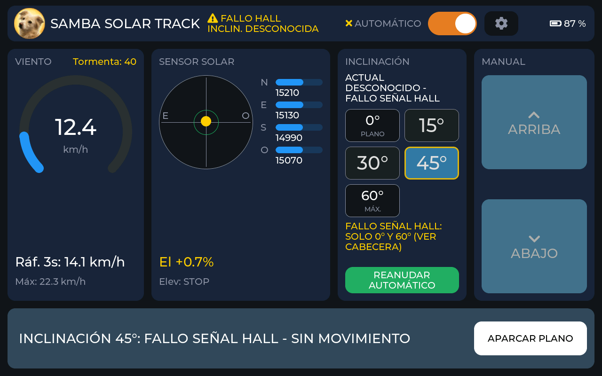
| Valor (AJUSTES → PUESTA EN MARCHA) | De fábrica | Permitido | Para qué |
|---|---|---|---|
| Señal Hall disponible | no | sí o no | Activa la evaluación de J22. Actívalo solo si el HallTapBoard está conectado. |
| Invertir sentido de conteo Hall | no | sí o no | Para el caso de que los dos canales A y B lleguen al revés; entonces el control cuenta hacia atrás. |
| Pasos Hall por carrera | sin calibrar | 1000 a 2 000 000; 0 = sin calibrar | Cuántos pasos Hall tiene todo el recorrido de 0° a 60°. Lo registra la calibración. |
Los tres valores solo se pueden cambiar mientras ningún motor esté en marcha.
[ 120.010][I][main ] Neigung auf Befehl: 30 Grad (vorher keine), Quelle Display [ 120.010][I][track ] Neigung 30 Grad: Bezugsfahrt noetig [ 168.420][I][motor ] Elevation: Endlage PLUS am Stillstand erkannt (Hall-Abgriff) nach 48410 ms [ 168.420][I][main ] Ausgang Elevation: RAUF -> STOP (Hall-Abgriff: Endlage am Stillstand) [ 168.420][I][hall ] Bezug Flachstellung (Stillstand, Stellung war unbekannt (Annahme: eigener Endschalter des Antriebs)), Stellung war unbekannt
Las líneas son un ejemplo con el formato del firmware. Con señal Hall, la línea de estado cada 5 segundos termina con «| Neigung 30.2 Grad (Hall), Ziel 30» (inclinación 30,2° (Hall), objetivo 30).
Tiempo de arranque 1,5 segundos y tiempo de parada 1 segundo; precisión 0,2°; filtro de interferencias 5 µs con un máximo de unos 1000 impulsos por segundo y canal; el sentido de conteo del contador de impulsos; ventana del tope 3 % del recorrido; tolerancia en la calibración 3 %; que el control de sincronización HAKIWO SCN4 pueda compartir la línea Hall del motor 1 con la toma de señal; que la memoria que sobrevive a un reinicio se conserve en el board. Si la elevación se detiene con inclinación desconocida, el firmware supone que el motor está en su propio final de carrera.
Pausas para los motores: el ciclo de trabajo (en preparación, sin comprobar en el equipo)
Los actuadores lineales eléctricos no pueden funcionar de forma continua, porque se calientan demasiado. El distribuidor HAKIWO indica para los motores del Samba-Solar-Rack 2.0-E Plus un ciclo de trabajo del 10 % y como máximo 2 minutos seguidos (manual de montaje, capítulos 3.6 y 14.4). El firmware de 10 pulgadas lo respeta por sí mismo para cada motor. También esto solo está construido y probado en el ordenador.
- Cuenta de tiempo de recorridoPara cada motor, el firmware lleva una cuenta. Cada movimiento resta de ella y cada segundo de reposo la vuelve a llenar (con una novena parte del tiempo). Llena, la cuenta permite 120 segundos de movimiento seguido. Resultado esperado: En el funcionamiento normal con movimientos de seguimiento cortos no notas nada de esto.
- PausaSi la cuenta está vacía, empieza una pausa. Resultado esperado: Un movimiento en curso se detiene. La banda de estado se pone naranja y muestra «PAUSA CICLO TRABAJO: MOTOR LIBRE EN 13:30» (en modo manual, con «orientado» y en el tiempo de pausa) o, con la inclinación por orden, «INCLINACIÓN 45°: PAUSA CICLO TRABAJO, SIGUE EN …» (Fig. 20). El tiempo restante va descontando.
- Libre de nuevoCuando se han acumulado 90 segundos de tiempo de recorrido, el motor vuelve a estar libre. Tras vaciar la cuenta por completo, esto tarda unos 13,5 minutos. Resultado esperado: La banda de estado vuelve a mostrar el estado normal; un movimiento en espera (inclinación, calibración) continúa por sí solo.
También durante la pausa, la elevación va a plano si llega una tormenta, falla el anemómetro o eliges APARCAR PLANO. Estos movimientos a plano tienen prioridad. Todo lo demás espera: el movimiento manual, el seguimiento y el movimiento a un ángulo. El automático termina un movimiento de seguimiento en curso cuando empieza la pausa y no inicia ninguno nuevo durante la pausa. El equipo acepta las órdenes del navegador, pero el motor espera al final de la pausa.
Sin finales de carrera, un movimiento solo alcanza el tope si recorre todo el tiempo máximo seguido. Por eso, un recorrido de referencia, el movimiento a 0° o 60° y el recorrido de referencia de la calibración solo empiezan cuando la cuenta permite un movimiento completo. Hasta entonces, la pantalla muestra el tiempo de espera. Por eso, no cambies de ángulo con frecuencia.
Los 90 segundos hasta la liberación son un supuesto (un movimiento completo de 0° a 60° con reserva) y se comprobarán en el rack. Tras un reinicio, la cuenta empieza de nuevo llena; el tiempo de recorrido anterior al reinicio no cuenta.
[ 930.100][W][motor ] Elevation: Einschaltdauer erreicht -> Pause, Fahrt wieder in 810 s (Flachfahrt bei Sturm, Windmesser-Ausfall und Parken bleibt frei) [ 930.100][I][motor ] Elevation: Fahrt PLUS wegen Einschaltdauer beendet [ 930.100][I][main ] Ausgang Elevation: RAUF -> STOP (Zustand MANUAL) [ 1740.110][I][motor ] Elevation: Pause der Einschaltdauer beendet, Antrieb wieder frei
Volver a plano con tormenta (en preparación, sin comprobar en el equipo)
Sin finales de carrera en el seguidor, el firmware memoriza tras un movimiento durante todo el tiempo máximo: «Aquí está el tope» (tope por tiempo). Después ya no sigue moviendo en ese sentido. Esto es correcto mientras los motores se hayan movido realmente. Pero si falla la fuente de alimentación (el board sigue funcionando entonces con la batería), salta el fusible de los motores o el control de sincronización (por ejemplo HAKIWO SCN4) interrumpe un movimiento, los contactos de la placa conmutan igualmente, solo que no se mueve nada, y el firmware cree erróneamente que el módulo está plano.
Por eso, el firmware de 10 pulgadas anula un tope por tiempo en el sentido «plano» y vuelve a mover a plano:
- Al comenzarEn cuanto empieza una tormenta, falla el anemómetro o eliges APARCAR PLANO (también justo después de encender en uno de estos estados). Resultado esperado: La elevación va a plano, aunque según el firmware ya esté plana. Sin finales de carrera, el contacto permanece cerrado durante todo el tiempo máximo.
- Cada 30 minutosMientras dure la tormenta o el fallo del anemómetro, esto se repite cada 30 minutos (al aparcar no). Resultado esperado: Aproximadamente cada 30 minutos, el contacto de «plano» se cierra otra vez durante el tiempo máximo.
Cada uno de estos movimientos sigue terminando como muy tarde tras el tiempo máximo. Tiene prioridad y funciona también durante una pausa del ciclo de trabajo. Con finales de carrera instalados no hay tope por tiempo; entonces no cambia nada. Con la señal Hall activada, el movimiento termina tras unos 1,5 segundos si la elevación está comprobadamente ya plana; si la inclinación es desconocida o el motor está parado a mitad de camino, funciona como sin señal Hall hasta el tiempo máximo.
No está claro si el control de sincronización HAKIWO SCN4 acepta que el control siga pulsando «plano» en el tope hasta el tiempo máximo sin indicar el código de error 15. El fabricante no ha respondido a esto (estado 12.10.2026); se comprobará en el rack. Hasta entonces es un punto pendiente. Con señal Hall, un movimiento hacia el tope termina aproximadamente 1 segundo después de que dejen de llegar impulsos, en lugar de tras el tiempo máximo; la pregunta sigue entonces abierta para los movimientos a plano con inclinación desconocida y para el funcionamiento sin señal Hall.
Sin señal Hall, el firmware no ve si los motores se mueven. El nuevo movimiento a plano solo ayuda con tormenta, fallo del anemómetro y aparcado. Con la señal Hall activada se detectan los impulsos que faltan (aviso «FALLO SEÑAL HALL» o «Antrieb steht ohne Endlage» en el log); solo se vigila el motor 1. La entrada «24 V presentes» de la placa solo indica la tensión en J11: con la fuente común, también su fallo, pero nunca un fusible de los motores disparado.
[ 3600.000][I][track ] Zustand IDLE -> STORM (Auto ein, Boe 44.8 km/h, El +3, Az +0 Promille)
[ 3600.000][I][motor ] Elevation: Laufzeit-Endlage PLUS aufgehoben, neue Flachfahrt erlaubt
[ 3600.000][I][main ] Ausgang Elevation: STOP -> RAUF (Zustand STORM)
[ 3690.010][I][motor ] Elevation: Laufzeit-Endlage PLUS erreicht
… 30 Minuten später, der Sturm hält an …
[ 5400.000][D][track ] Zustand STORM haelt an: Flachfahrt wird erneut erlaubtQue en el log aparezca «PLUS» o «MINUS» depende del ajuste «Dirección de la posición plana»; de fábrica, plano = ARRIBA = PLUS.
La placa RearCircuitBoard_10 solo se puede comprobar en el hardware (capítulo 9). Sin firmware no conmuta ningún contacto ni se enciende ningún piloto. No conectes la batería.
9Primera puesta en marcha del hardware
Estos pasos comprueban la placa sin firmware. Cada paso tiene un resultado claro. Sigue solo cuando sea correcto. Los pasos 4 a 7 los haces con la placa sobre la mesa, todavía no en el board.
- Desconectar la bateríaEl conector de la batería en el board sigue desenchufado. Resultado esperado: La batería no está conectada a nada.
- Inspección visual y soldadurasRevisa todas las soldaduras de los bornes. Con el comprobador de continuidad, comprueba en J3 a J6 que ningún pin esté unido con su vecino. Coloca el puente J16 según el apartado «Anemómetro» y J21 en 2-3. Resultado esperado: Ningún puente de soldadura, ambos puentes colocados.
- Comprobación de conectoresAntes del primer encendido, compara cada conector con la tabla de bornes y la imagen de la placa (Fig. 5): conector correcto en el borne correcto, la rotulación coincide. Luego mira J7, J10, J14 y J22 de lado. Resultado esperado: Cada conector asienta a ras sobre su regleta base, ningún pin de la regleta queda libre y ningún conector sobresale del extremo de un borne. En cuanto exista un firmware para el board de 10,1 pulgadas, se añade: al arrancar no aparece ningún mensaje sobre finales de carrera o pilotos.
- Forzar el bloqueo y medirConecta la placa sola (todavía no en el board) a 24 V, puente J21 en 1-2. Con el multímetro, mide en las soldaduras de J1: pin 2 contra pin 6. Resultado esperado: 3,8 a 4,1 V. Si el valor es mayor, el bloqueo es defectuoso: no uses la placa.
- Funcionamiento y tiempo de esperaApaga los 24 V, J21 en 2-3, vuelve a encender los 24 V (la habitación debería estar entre 15 y 30 °C). Observa la tensión en J1 pin 2 contra pin 6. Resultado esperado: Al principio unos 4 V; tras 45 a 101 minutos (normalmente unos 71 minutos) salta a 4,9 a 5,2 V.
- Prueba de fríoCon 4,9 a 5,2 V, rocía brevemente spray de frío junto a la isla de cobre arriba a la izquierda, no directamente sobre los componentes. Resultado esperado: La tensión cae de inmediato a unos 4 V. Tras calentarse, se queda primero en 4 V; solo tras el tiempo de espera vuelve a subir a unos 5 V.
- Prueba de calorCalienta con cuidado la isla de cobre con una pistola de aire caliente a baja potencia por encima de 37 °C; comprueba la temperatura con un termómetro en la isla, sin superar los 60 °C. Resultado esperado: La tensión cae a unos 4 V. Tras enfriarse, vuelve a unos 5 V tras el tiempo de espera. Esta prueba encuentra fallos de soldadura que el spray de frío no encuentra.
- MontarColoca la placa sobre el board con separadores y pads según el capítulo 5. Resultado esperado: Los separadores y los pads quedan bajo la isla y no se desplazan; la placa apoya plana sobre los cuatro separadores.
- Encender el boardInterruptor deslizante del board en ON, enciende los 24 V. Resultado esperado: El board arranca (la pantalla muestra la imagen del software de fábrica o, sin firmware, se queda oscura). El piloto de carga del board, si existe, permanece apagado: sin batería no se carga, así que de todos modos no se enciende (supuesto).
- Salidas de conmutación y finales de carreraSolo con el firmware para el board de 10,1 pulgadas (en preparación): mantén pulsado cada botón de la pantalla y mide con el comprobador de continuidad a través del conector enchufado entre los dos hilos (conector de las salidas de conmutación); pulsa cada final de carrera. Resultado esperado: Se cierra exactamente el contacto correspondiente y se indica exactamente el final de carrera pulsado.
Si la desconexión por sobretensión (capítulo 5) funciona solo se puede comprobar con una fuente de laboratorio en la muestra; el firmware no podrá comprobarlo más adelante. Esta prueba forma parte del plan de medición previo al pedido (anexo 11 E).
Spray de frío solo brevemente y a 10 a 20 cm de distancia, aire caliente solo a baja potencia. No toques nada en los bornes de 24 V mientras estén con tensión.
10Términos explicados de forma sencilla
- Tapa de cierre
- Una tapa de plástico que cierra el extremo abierto de un perfil de aluminio. El soporte del sensor solar sustituye a una de estas tapas y además lleva el sensor.
- Pelar
- Quitar la funda de plástico (aislamiento) del extremo de un hilo en una longitud determinada, para que el metal desnudo haga contacto en el borne. Lo mejor es con una pelacables; los hilos de debajo no deben cortarse.
- Resistencia de terminación
- Una resistencia de 120 Ω entre los hilos A y B de una línea RS485, en sus dos extremos. Evita que las señales se reflejen al final de la línea.
- Separador
- Una pequeña columna metálica con rosca. Con rosca macho y hembra sustituye a un tornillo y a la vez sostiene una segunda placa a la distancia correcta. El HallTapBoard no necesita ninguno: se atornilla en su carcasa directamente sobre torretas de plástico, para que la fijación no cree ninguna conexión conductora.
- Convertidor reductor
- Un circuito que convierte una tensión continua más alta en una más baja, aquí los 24 V en los 5 V para el board. Pierde poca energía y apenas se calienta.
- Puntera
- Un pequeño tubo metálico que se prensa con unos alicates sobre el extremo pelado de un hilo flexible. Mantiene juntos los muchos hilos finos, para que ninguno sobresalga y el hilo quede firme en el borne.
- ADS1115
- Un componente de medición. Convierte la tensión de los sensores de luz en números con los que el ordenador puede trabajar.
- Perfil de aluminio (perfil ranurado)
- Una barra de aluminio con sección constante, aquí de 40 × 40 mm, con una ranura en cada lado (ranura 8) y un taladro en el centro. Con estos perfiles se construye, por ejemplo, el Samba-Solar-Rack.
- Batería (batería de litio)
- Una batería recargable. La batería del board de 10,1 pulgadas tiene 3,7 V. Las baterías de litio solo deben cargarse en un rango de temperatura limitado; si no, envejecen rápido o se vuelven peligrosas.
- Pérdida de arranque
- La parte de cada movimiento en la que el bastidor todavía no se mueve, por ejemplo porque los relés se activan o el control de los motores arranca despacio. Para la inclinación por orden se puede introducir en AJUSTES.
- Ánodo / cátodo
- Las dos conexiones de un diodo. Un diodo solo deja pasar la corriente en un sentido, del ánodo al cátodo. Por eso, en un LED el ánodo es el positivo y el cátodo el negativo. En la placa, una raya o un ángulo en la serigrafía suele indicar el cátodo; en el diodo grande D5, el cátodo es la lengüeta de refrigeración.
- ASA / PETG
- Dos plásticos para la impresora 3D. El ASA aguanta el sol y el calor hasta unos 100 °C y por eso es adecuado para la carcasa del HallTapBoard en la caja de control; el PETG es más fácil de imprimir, pero se ablanda ya a partir de unos 80 °C (valores orientativos, no consultados).
- Instalar (flashear)
- Escribir el firmware en la memoria del board, mediante un cable USB o a través de la red.
- Azimut
- El giro del módulo de este a oeste.
- Vista previa del montaje
- Una imagen de la placa ya montada que JLCPCB muestra en el pedido antes del pago. En ella compruebas si cada componente está colocado en el sentido correcto. En los componentes polarizados, un punto rojo marca el lado que JLCPCB toma como referencia; no siempre es el pin 1.
- Detector de movimiento
- Detecta si algo se mueve delante de un aparato. Aquí lo hace la cámara integrada de la pantalla: el firmware compara cada imagen con las anteriores, sin guardarla.
- Referencia, recorrido de referencia
- Una referencia es un tope en el que la posición se conoce con seguridad. El recorrido de referencia va hasta allí (normalmente a plano) antes de que la inclinación por orden vaya a un ángulo intermedio. Tras una referencia, la incertidumbre es cero.
- Salvapantallas
- Una imagen oscura y tranquila que muestra la pantalla cuando nadie está delante durante un rato. Ahorra energía y no deslumbra. Un toque o un movimiento devuelve la vista normal.
- Ráfaga
- Un golpe de viento corto y fuerte. El control calcula con la media de tres segundos.
- Bootloader
- Un pequeño programa de arranque al principio de la memoria. Al encender, inicia el firmware propiamente dicho. Está incluido en la imagen de fábrica.
- Regleta hembra / regleta de pines
- Dos piezas complementarias para enchufar placas entre sí: la regleta de pines tiene pines y la regleta hembra, las aberturas correspondientes. La placa RearCircuitBoard_10 se enchufa con su regleta de pines J1 en la regleta hembra J8 del board.
- Códec (códec de audio)
- Un componente que convierte números del ordenador en una tensión de audio. En el board de 10,1 pulgadas se llama ES8311; un pequeño amplificador (NS4150B) excita con ella el altavoz.
- dBFS
- Medida del volumen de un sonido digital: 0 dBFS es el sonido más fuerte que puede emitir el códec; los valores menores (negativos) son más bajos. 3 dB menos significa la mitad de potencia.
- Separador de latón
- Una pequeña columna de latón con rosca hembra en ambos extremos. Aquí hay uno sin tornillo entre dos pads térmicos que transmite la temperatura de la pared trasera al sensor de la placa.
- Modo de descarga
- Un estado de arranque especial del chip en el que acepta un firmware nuevo por USB en lugar de iniciarlo. Normalmente lo activa el propio PC; a mano: mantener BOOT, pulsar RESET, soltar BOOT.
- Comprobador de continuidad
- Un aparato de medición sencillo, o una posición del multímetro, que pita cuando dos puntos están conectados eléctricamente. Con él compruebas, por ejemplo, si un contacto está cerrado.
- Rígido / flexible
- Un hilo rígido consta de un único alambre duro. Un hilo flexible (cable trenzado) consta de muchos alambres finos y se dobla con facilidad. Lo mejor es poner una puntera a los hilos flexibles antes de introducirlos en una conexión de resorte.
- Calibrar
- La medición guiada de los dos tiempos de recorrido en la pantalla (Configurar → AJUSTES → PUESTA EN MARCHA → CALIBRAR TIEMPO). Sin calibrar, la inclinación por orden solo conoce 0° y 60°.
- Ciclo de trabajo
- La parte del tiempo que un motor puede funcionar sin calentarse demasiado. Aquí es el 10 % y como máximo 2 minutos seguidos; después, el motor necesita una pausa. El firmware de 10 pulgadas lo respeta por sí mismo; solo el movimiento a plano con tormenta, fallo del anemómetro y aparcado funciona también durante la pausa.
- Pata de elefante
- En la impresión 3D, la primera capa se presiona contra la cama de impresión y queda algo más ancha. Por ello pueden cerrarse rebajes finos en la cara inferior de una pieza. Muchos programas de impresión tienen un ajuste de compensación para ello.
- electricista cualificado
- Una persona con formación y experiencia en electrotecnia que está autorizada a trabajar con tensión de red (230 V). Conectar fuentes de alimentación, instalar enchufes o tender líneas en la red eléctrica es cosa suya.
- Fusible electrónico
- Un pequeño componente que protege como un fusible, pero no se funde. Si circula demasiada corriente, la limita o desconecta y, al poco tiempo, lo vuelve a intentar por sí solo. En la placa RearCircuitBoard_10, dos de ellos protegen la entrada de 24 V (U16) y los 5 V hacia el board (U15).
- Elevación
- La inclinación del módulo, de plano a máxima.
- Finales de carrera
- Un interruptor al final del recorrido. Indica: no se puede seguir.
- esptool
- El programa del fabricante de chips Espressif que escribe el firmware en las placas ESP32. Las páginas del navegador lo usan en segundo plano.
- Extended / Basic
- Las dos clases de la biblioteca de piezas de JLCPCB. Por cada tipo de componente de la clase «Extended», JLCPCB cobra una tarifa de preparación por pedido; por los «Basic», no.
- Tiempo de recorrido
- El tiempo que necesita el motor para todo el recorrido de 0° a 60° (más inclinado) o de vuelta (más plano). A partir de él, el firmware estima la inclinación.
- Conexión de resorte (push-in)
- Una conexión sin tornillo: un resorte en el conector sujeta el hilo. Un hilo rígido o un hilo con puntera simplemente lo introduces hasta el tope. Para soltarlo, presionas el pequeño pulsador junto a la abertura y sacas el hilo.
- Comparador de ventana
- Un circuito que comprueba si un valor medido está entre dos límites, aquí si la temperatura está entre 10 y 35 °C.
- Firmware
- El software que se ejecuta en el board.
- Flash
- La memoria del board en la que están el firmware y los ajustes guardados. Conserva su contenido también sin corriente.
- Línea de detección (remote sense)
- Dos hilos adicionales finos de algunas fuentes de alimentación, con los que la fuente mide la tensión en un punto alejado y compensa la pérdida en la línea. En Samba Solar Track se quedan en la fuente: si se llevaran hasta los motores, la tensión en el control sería demasiado alta.
- Grado de relleno (infill)
- Lo denso que está relleno el interior de una pieza impresa, en porcentaje. 100 % significa completamente lleno; eso hace la pieza pesada y resistente, pero gasta mucho filamento.
- Aislamiento galvánico
- Dos circuitos sin conexión conductora entre sí. Aun así, una señal pasa de uno a otro, por ejemplo mediante luz en un optoacoplador. Así, ambos lados pueden tener masas y fuentes de alimentación distintas sin interferirse.
- Contratuerca
- Una tuerca que sujeta un prensaestopas desde dentro en la pared de la carcasa. El prensaestopas se introduce desde fuera por el orificio, por dentro se enrosca la contratuerca en su rosca; luego se aprietan ambos uno contra otro.
- Estructura G1 / G2
- El tipo de construcción del Samba-Solar-Rack (posición del eje de giro). Determina qué recorrido del motor corresponde a qué inclinación. G1: Rack 2.0-D y 2.0-E; G2: 2.0-E Plus, 2.1 y 2.1 Plus. Para otras estructuras existe «lineal» (un supuesto).
- Inserto roscado
- Un pequeño casquillo de latón con rosca hembra que se funde con el soldador caliente en un orificio de una pieza impresa (también «inserto termofusible»). Después se puede enroscar y desenroscar allí un tornillo metálico muchas veces sin que la rosca se arranque del plástico. La carcasa del HallTapBoard tiene ocho insertos ruthex M3; el soporte del sensor solar, dos insertos ruthex M4.
- Varilla roscada
- Una barra con rosca en toda su longitud, aquí M8 de acero inoxidable. En el soporte pendular es el eje alrededor del cual gira el péndulo.
- Filtro de glitches (filtro de interferencias)
- Un filtro en el contador de impulsos que no cuenta los impulsos muy cortos. En la entrada de impulsos J22, los impulsos de menos de 5 µs se consideran interferencias.
- GND
- Masa, el polo negativo común del circuito.
- Señal Hall (toma de señal Hall)
- La toma de los impulsos de los sensores Hall en el control de sincronización, sin perturbarlos. De eso se encarga el HallTapBoard. Si en AJUSTES está activado «Señal Hall disponible», el firmware de 10 pulgadas cuenta los impulsos y así conoce la inclinación (capítulo 8).
- Paso Hall
- Cada cambio entre LOW y HIGH (flanco) en uno de los dos canales A y B. A cada impulso le corresponden 4 pasos Hall. «Pasos Hall por carrera» es el número de pasos para todo el recorrido de 0° a 60°.
- Sensor Hall
- Un pequeño sensor que detecta un campo magnético. En muchos actuadores lineales hay uno en el motor: en cada vuelta emite impulsos. Quien cuenta los impulsos sabe cuánto se ha movido el motor. Con dos canales (A y B) se detecta también el sentido.
- HallTapBoard
- Una pequeña placa propia para la caja de control (borrador 0.5 con carcasa impresa en 3D, aún no fabricada). Toma en el control de sincronización HAKIWO SCN4 los impulsos de los sensores Hall del motor 1 y los transmite, con aislamiento galvánico mediante optoacopladores, como dos contactos libres de potencial a la entrada de impulsos J22 de la placa RearCircuitBoard_10. Se alimenta con los 24 V de los motores (capítulo 6).
- HTTPS
- La forma cifrada de la conexión con una página de Internet. El equipo comprueba con una lista integrada de entidades de confianza (certificados) que realmente está hablando con la página del proyecto.
- Hiccup
- En inglés, hipo: ante un cortocircuito, el convertidor se desconecta, espera un momento y lo vuelve a intentar, una y otra vez, hasta que se elimina el fallo. Así nada se calienta demasiado. Algunas fuentes de alimentación se comportan igual ante una sobrecarga; para la fuente común esto no es adecuado.
- HIGH / LOW
- Los dos estados de una señal digital: hay tensión (HIGH) o no hay tensión (LOW).
- Tiempo máximo
- El tiempo que un motor puede funcionar seguido. Con finales de carrera, un movimiento más largo es un error; sin finales de carrera, después de ese tiempo se considera alcanzado el tope (tope por tiempo).
- Histéresis
- La diferencia entre el umbral de conexión y el de desconexión. En la entrada de impulsos J22, el comparador conmuta en un sentido a unos 2,05 V y en el otro solo a unos 2,36 V. Así, las pequeñas interferencias en la línea no generan impulsos falsos.
- I2C
- Una conexión de dos líneas (SDA y SCL) a la que están conectados varios componentes. Cada uno tiene su propia dirección.
- Apantallamiento del cable
- Una malla o una lámina alrededor de los hilos de un cable. Conectado a GND en un extremo, mantiene las interferencias lejos de los hilos.
- Prensaestopas (prensaestopas PG)
- Un paso para un cable a través de la pared de una carcasa. Al apretar la tuerca de cierre, un anillo de estanqueidad se ajusta alrededor de la cubierta del cable: el cable queda entonces estanco y asegurado contra tirones (alivio de tracción). «PG 11» es el tamaño de la rosca (rosca Panzer); cada tamaño solo sella cables en un rango determinado de diámetro exterior, en el PG 11 de Lapp de 4 a 10 mm.
- Spray de frío
- Un spray de tienda de electrónica que enfría un punto con fuerza en segundos. Con él compruebas si un sensor de temperatura reacciona correctamente.
- Taladro para roscar
- El taladro en el que se talla una rosca. Para M8 mide 6,8 mm; el taladro central de muchos perfiles de aluminio de 40 × 40 tiene exactamente esta medida.
- Comparador
- Un componente que compara dos tensiones e indica en su salida cuál es mayor. En la placa RearCircuitBoard_10 trabajan dos: en el bloqueo de carga (U18) y en la entrada de impulsos J22 (U22).
- Línea de fuga / distancia en el aire
- El camino más corto entre dos conductores por la superficie de la placa (línea de fuga) o por el aire (distancia en el aire). Cuanto más largo, más difícil le resulta a una corriente de fuga encontrar un camino, por ejemplo a través de humedad y suciedad.
- Rodamiento de bolas
- Un anillo con bolas entre el anillo interior y el exterior, para que algo gire casi sin rozamiento. El rodamiento 608 (8 × 22 × 7 mm) es muy común, por ejemplo en patines en línea.
- Lengüeta de refrigeración
- Una gran superficie metálica en la carcasa de un componente que apoya plana sobre la placa y se suelda. A través de ella y del cobre de la placa, el componente disipa su calor. En el diodo D5, la lengüeta de refrigeración es a la vez una conexión, el cátodo.
- Cargador
- El circuito del board que carga la batería a partir de los 5 V. Solo carga si su tensión de entrada es suficientemente alta (unos 4,5 V).
- Bloqueo de carga
- El circuito de la placa RearCircuitBoard_10 que impide la carga de la batería cuando hace demasiado frío o demasiado calor: en ese caso baja los 5 V para el board a unos 4 V.
- Tope por tiempo
- Sin finales de carrera en el seguidor, se considera alcanzado un tope cuando el contacto ha estado cerrado durante todo el tiempo máximo; el motor está entonces en su propio final de carrera integrado. Puede ser falso si los motores no tenían tensión o si su control interrumpió el movimiento. Con señal Hall existe en su lugar el tope por parada, más preciso.
- Reducción de potencia (derating)
- Con calor, una fuente de alimentación entrega menos que su potencia nominal. Cuánto menos lo muestra una curva de la hoja de datos. Por eso, monta la fuente a la sombra.
- Diodo luminoso (LED)
- Un pequeño componente que se ilumina cuando la corriente lo atraviesa en el sentido correcto. Necesita una resistencia en serie que limite la corriente.
- Guía de luz
- Una barra de plástico transparente (aquí metacrilato, PMMA) que conduce la luz como un tubo: lo que entra iluminando por abajo sale arriba por el extremo. Así se ve desde fuera un piloto dentro de la carcasa y el orificio de la tapa queda igualmente cerrado.
- Conducto de luz
- Un tubo corto desde la tapa de una carcasa hasta justo encima de un piloto de la placa. Lleva la luz hasta el orificio de la tapa, de modo que el piloto se ve desde fuera sin abrir la tapa.
- Actuador lineal
- Un motor que saca y mete una varilla.
- Puente de soldadura
- Estaño que, al soldar, une sin querer dos pines vecinos. Lo que debería estar separado queda entonces conectado eléctricamente. Lo encuentras con el comprobador de continuidad: pita entre los dos pines. Para eliminarlo, retira el estaño sobrante con el soldador caliente y vuelve a comprobar.
- Manifiesto
- Un pequeño archivo de texto en la página del proyecto. Indica el firmware más reciente: número de versión, fecha, tamaño, una suma de control del archivo y la firma. Con él, el equipo sabe si hay un firmware más nuevo y si el archivo es auténtico y está completo.
- Modbus-RTU
- Un «idioma» muy extendido para aparatos de medición. El board pregunta y el aparato responde con el valor medido y una suma de control.
- Inercia
- Lo que el motor sigue girando después de desconectarlo. Con señal Hall, el control mide la inercia en cada sentido y, en el movimiento a un ángulo, desconecta esa cantidad antes.
- NC / NO
- Contacto normalmente cerrado (normally closed) y normalmente abierto (normally open). Describe si un contacto está cerrado o abierto en reposo.
- Inclinación por orden
- La elevación va a un ángulo elegido y se queda allí; el automático se pausa hasta que lo reanudas. En el log, el estado se llama POSITION. Solo en la versión de 10 pulgadas, solo con un eje.
- NTC
- Una resistencia cuyo valor baja al subir la temperatura. Con ella, la placa mide la temperatura.
- Optoacoplador
- Un componente que transmite una señal mediante luz: un pequeño LED en un lado conmuta un transistor en el otro. La entrada y la salida están separadas eléctricamente. La salida actúa como un contacto libre de potencial.
- PCA9538
- Un componente con ocho entradas y salidas adicionales, controlado por I2C.
- Péndulo
- Un cuerpo suspendido de forma giratoria que, por su peso, se coloca solo en vertical hacia abajo. El soporte pendular lo aprovecha para que el anemómetro esté siempre vertical.
- PhotoMOS
- Un interruptor electrónico sin piezas móviles. Un pequeño LED en su interior conmuta el contacto; ambos lados están separados eléctricamente.
- Inversión de polaridad
- Intercambiar positivo y negativo en el motor para que gire hacia atrás.
- Condensador de polímero
- Un condensador con plástico sólido en lugar de contenido líquido. Dura mucho y amortigua bien las fluctuaciones de tensión.
- Libre de potencial
- Un contacto que no está conectado a ninguna tensión del control. Se comporta como un pulsador sencillo con dos conexiones.
- Pull-up / pull-down
- Una resistencia que lleva una línea a un estado fijo mientras nadie la controla.
- Contador de impulsos (PCNT)
- Una parte del procesador ESP32-P4 que cuenta por sí misma los impulsos en un pin, incluso muy rápidos, sin cargar el programa. El firmware de 10 pulgadas cuenta con él los impulsos de la entrada J22 cuando la señal Hall está activada.
- Cuadratura
- Dos señales (canal A y B) desfasadas un cuarto de periodo entre sí. Por el orden en que cambian, el control reconoce el sentido del movimiento.
- Paso
- La distancia de centro a centro entre dos conexiones vecinas de un borne o de una regleta de pines, por ejemplo 3,5 mm. El conector y el borne deben tener el mismo paso.
- RearCircuitBoard_10
- La placa propia para el board de 10,1 pulgadas ESP32-P4-WIFI6-Touch-LCD-10.1. Va por fuera en la pared trasera del equipo y se enchufa con la regleta de pines J1 en su regleta hembra J8 (en preparación).
- Relé
- Un interruptor controlado eléctricamente. Una corriente pequeña conmuta una grande.
- Piloto RGB
- Tres LED en una misma carcasa: rojo, verde y azul. Rojo y verde juntos dan amarillo.
- RS485
- Una conexión de datos robusta con dos líneas (A y B), adecuada para cables largos al aire libre.
- Clave (clave de firma)
- Un par de números que van juntos. Con la parte secreta, el desarrollador firma un firmware nuevo; la parte pública la lleva cada firmware consigo y con ella comprueba la firma. La parte secreta solo la tiene el desarrollador.
- Grado de protección (IP65, IP67)
- Indica lo bien protegido que está un aparato contra el polvo y el agua. La primera cifra es para el polvo (6 = estanco al polvo), la segunda para el agua (5 = chorros de agua, 7 = inmersión breve). Una fuente de alimentación al aire libre necesita un grado de protección alto.
- Muy baja tensión de seguridad (SELV)
- Abreviatura de «safety extra-low voltage»: una tensión tan baja que no es peligrosa al tocarla y que se genera separada de forma segura de la red eléctrica, por ejemplo con una fuente de alimentación homologada para ello. En Samba Solar Track, la placa recibe como máximo 30 V de tensión continua.
- Autorretención
- Un circuito que, una vez disparado, se mantiene por sí mismo. Aquí mantiene desconectada la entrada de 24 V hasta que se apagan los 24 V.
- Autotest
- Una breve prueba que un firmware recién instalado hace sobre sí mismo: ¿funciona la pantalla y responde el componente de las salidas de conmutación de la placa (en la simulación basta con la pantalla)? Si el Wi-Fi está activado, el equipo debe además haberse conectado al Wi-Fi al menos una vez desde el reinicio. Solo entonces se considera bueno el firmware nuevo. Si no supera la prueba, el equipo vuelve al firmware anterior.
- Firma (firma digital)
- Una secuencia de números que solo se puede generar con la clave secreta del proyecto. Si alguien cambia aunque sea un solo carácter del archivo firmado, ya no coincide. Así, el equipo solo acepta firmware que procede realmente del proyecto.
- Fusible rearmable
- Un fusible que, con demasiada corriente, se calienta y se vuelve de alta resistencia, y que tras enfriarse se vuelve a cerrar por sí solo. No hay que cambiarlo.
- Simulación
- Un modo de prueba sin la placa RearCircuitBoard_10: el firmware solo simula el seguidor, los sensores y los motores y no conmuta nada.
- SMD
- Abreviatura de «surface-mounted device»: componentes que se sueldan planos sobre la superficie de la placa, sin orificios. JLCPCB los monta con máquinas. Lo contrario son los componentes de inserción, como bornes y regletas de pines, cuyos pines se introducen por orificios de la placa y luego se sueldan.
- Soft Termination
- Condensadores con terminales flexibles. Si la placa se dobla, se agrietan con menos frecuencia.
- Regulador de tensión
- Un componente que convierte una tensión más alta y fluctuante en una tensión fija y más baja, por ejemplo exactamente 5 V a partir de 24 V. Un regulador sencillo (regulador lineal) como el TPS7B69 del HallTapBoard convierte el resto de la tensión en calor.
- Divisor de tensión
- Dos resistencias en serie que dividen una tensión en una proporción fija. En el board de 10,1 pulgadas, R92 y R93 dividen la tensión de la batería a un tercio, para que la entrada de medición del chip pueda medirla.
- Pérdida de tensión (caída de tensión)
- Toda línea tiene una pequeña resistencia. Cuando circula corriente, se pierde en ella una parte de la tensión: cuanto más larga y fina la línea y cuanto mayor la corriente, más. Se calcula con el hilo de ida y el de vuelta.
- Borne enchufable
- Un borne de dos piezas: la regleta base va soldada a la placa y los hilos van al conector suelto. Normalmente los sujeta un pequeño tornillo; en las salidas de conmutación de la placa RearCircuitBoard_10, una conexión de resorte. Así se puede cambiar la placa sin soltar los hilos.
- Puente (jumper)
- Un pequeño conector que une dos pines contiguos. Cambiándolo de posición se conecta o desconecta una unión.
- Anillo de ajuste
- Un anillo metálico con un tornillo de apriete que se fija sobre un tubo o un eje. Evita que una pieza se desplace o se caiga.
- Cableado en estrella
- Cada consumidor recibe su propia línea directamente desde los bornes de la fuente de alimentación, como los rayos de una estrella. Así, la gran corriente de los motores no pasa por la línea del control, y cada línea tiene su propio fusible adecuado.
- Tope por parada
- Un tope que el control con señal Hall reconoce porque, aunque la salida está conectada, ya no llegan pasos Hall: tras un arranque de 1,5 segundos, ninguno durante 1 segundo (supuestos). El movimiento termina entonces de inmediato, no solo tras el tiempo máximo. En cambio, si el motor se detiene a mitad de camino, el control termina el movimiento sin tope («Antrieb steht ohne Endlage»).
- Pared frontal
- La pared cerrada al final de la regleta base de un borne enchufable. Sujeta el conector lateralmente, de modo que no se puede enchufar desplazado.
- Limitación de corriente (CV+CC)
- Una fuente de alimentación con tensión constante (CV) y limitación de corriente (CC) mantiene la tensión hasta alcanzar la corriente máxima; por encima limita la corriente y sigue suministrando, en lugar de desconectarse. Lo contrario es una fuente con hiccup.
- Control síncrono
- Un aparato de control que hace que dos motores se muevan a la misma velocidad, para que la estructura no se tuerza, por ejemplo el HAKIWO SCN4 del Samba-Solar-Rack 2.0-E Plus. La placa solo conmuta su entrada de pulsadores.
- Tiempo muerto
- La pausa entre la parada y el movimiento en sentido contrario.
- Controlador (driver)
- Un pequeño programa para el PC, para que reconozca como puerto un aparato conectado, aquí el componente USB CH343 del board.
- Franja de aislamiento
- Una franja de la placa sin cobre entre dos partes del circuito que no deben estar conectadas de forma conductora. En el HallTapBoard tiene 7 mm de ancho; solo los optoacopladores la atraviesan, con luz en lugar de corriente.
- Incertidumbre
- Lo que, según la estimación, puede desviarse como máximo la inclinación mostrada. Crece con cada movimiento y es cero tras una referencia. A partir de 6°, la pantalla muestra «DESCONOCIDO».
- Protección contra inversión de polaridad
- Un diodo en la entrada de alimentación que solo deja pasar corriente en el sentido correcto. Si positivo y negativo se conectan al revés, bloquea, y el circuito posterior no recibe tensión ni sufre daños. En el HallTapBoard, ambos pilotos permanecen entonces apagados.
- Vía
- Un pequeño taladro metalizado que une las capas de cobre de una placa. En la placa RearCircuitBoard_10, todas las vías están rellenas y tapadas, para que al soldar no entre estaño.
- Pad térmico
- Una almohadilla blanda, aislante eléctrica, que conduce bien el calor y rellena huecos entre dos piezas.
- Web Serial
- Una capacidad de algunos navegadores (Chrome, Edge, Opera, Firefox recientes) para comunicarse con un aparato conectado al puerto USB. Con ella se puede instalar el firmware sin programa propio.
- Imagen de fábrica (factory.bin)
- El archivo con todo lo que un board vacío necesita para arrancar: bootloader, división de la memoria y firmware. Se escribe al principio de la memoria (0x0) y borra los ajustes guardados.
- Ángulo deseado
- Un ángulo ajustado por ti de 1 a 59° para la inclinación por orden, además de 0°, 30° y 60°.
- Borne enchufable de dos filas
- Un borne enchufable con dos filas de conexiones una sobre otra. En las salidas de conmutación de la placa RearCircuitBoard_10 solo están ocupados dos pines opuestos en diagonal: en ARRIBA y ABAJO (J3, J4) dos de cuatro, en ESTE y OESTE (J5, J6) los dos exteriores de seis. Su conector no encaja en ningún borne de una fila ni en J11. Un conector de ARRIBA o ABAJO en ESTE u OESTE, o al revés, aunque se enchufe desplazado, toca como máximo un pin de contacto y no conmuta nada; por eso, un conector ajeno no puede puentear el contacto.
11Anexo
Lista de piezas, proveedores, costes, la asignación de la regleta de pines, el plan de medición previo al pedido y el HallTapBoard (G). Estado: borrador 0.10 del 11 de octubre de 2026 (borrador 0.9 del 8 de octubre de 2026, ampliado con los puentes de la isla del sensor y la entrada de impulsos J22).
A. Lista de piezas (variante de montaje smd)
JLCPCB monta las 233 piezas SMD (83 referencias, de ellas 37 de la clase «Extended» y 46 «Basic»; R92 y C38 quedan sin montar). En la variante de montaje «voll» (completa), JLCPCB suelda además los 15 bornes y regletas de pines (248 piezas, 91 referencias). La entrada de impulsos J22 (11.10.2026) añade 20 piezas SMD y ningún tipo Extended nuevo. Los designadores figuran también en la serigrafía de la placa.
| Componente | Tipo | N.º JLCPCB | Clase | Uds. | Designador | Para qué |
|---|---|---|---|---|---|---|
| Componente de medición | ADS1115IDGS (VSSOP-10) | C37593 | Extended | 2 | U1, U20 | Sensor solar (0x48); vigilancia (0x49) |
| Componente E/S | PCA9538PW, TI (TSSOP-16) | C201530 | Extended | 2 | U2, U8 | Salidas de conmutación/ |
| Contacto de conmutación | PhotoMOS AQY212GS (SOP-4) | C415471 | Extended | 4 | K1–K4 | Salidas de conmutación, 60 V / 1 A |
| Protección contra sobretensión | TPD4E1U06DBV (SOT-23-6) | C124691 | Extended | 6 | U3, U4, U6, U10, U13, U14 | Entradas, alimentación de sensores, pilotos, LED_5V |
| Limitador de corriente | TPS2553DBV (SOT-23-6) | C55266 | Extended | 2 | U5, U9 | Alimentación de sensores, pilotos |
| Diodo TVS | SMAJ33CA (SMA), bidireccional | C115251 | Extended | 8 | D1–D4, D11, D12, D16, D17 | sobre los contactos; RS485 A/B; impulsos A/B (J22) |
| RS485-Transceiver | THVD2410DR, TI (SOIC-8), ±70 V | C1849398 | Extended | 1 | U11 | Anemómetro |
| Regulador de tensión 3,3 V | AP7361C-33Y5-13 (SOT-89-5) | C460397 | Extended | 1 | U12 | V3V3_AUX |
| Convertidor de 5 V | LM5146RGYR, TI (VQFN-20) | C3188679 | Extended | 1 | U7 | 24 V → 5 V |
| MOSFET | CSD18543Q3A, TI (SON 3,3 × 3,3) | C840100 | Extended | 2 | Q2, Q3 | Interruptor del convertidor |
| Bobina de almacenamiento | Würth WE-LHMI 74437368100, 10 µH | C1519857 | Extended | 1 | L1 | Convertidor |
| Shunt | Panasonic ERJ-8BWFR010V, 10 mΩ, 1206, 1 W | C2076185 | Extended | 1 | R53 | Límite de corriente del convertidor |
| eFuse 5 V | TPS259470ARPWR, TI (VQFN-HR-10) | C3662799 | Extended | 1 | U15 | Fusible y bloqueo inverso +5V |
| eFuse 24 V | TPS26600PWPR, TI (HTSSOP-16) | C544399 | Extended | 1 | U16 | Fusible en la entrada de 24 V |
| Interruptor de temperatura | TMP390A2DRLR, TI (SOT-563) | C5219772 | Extended | 1 | U17 | desconecta U16 por encima de 110 °C |
| Comparador | LM2903BIDR, TI (SOIC-8) | C2869804 | Extended | 2 | U18, U22 | Ventana del bloqueo de carga; entrada de los impulsos (J22) |
| Contador | 74HC4060D (SOIC-16) | C5649 | Extended | 1 | U19 | Tiempo de espera del bloqueo de carga |
| Referencia | TLV431BIDBZR, TI (SOT-23) | C398375 | Extended | 1 | U21 | Desconexión por sobretensión |
| Fusible | BSMD2920-200-60V, rearmable | C49233174 | Extended | 1 | F1 | Entrada de 24 V |
| Diodo Schottky | SS10P6-M3/86A, Vishay (TO-277A) | C2927414 | Extended | 1 | D5 | Protección contra inversión de polaridad |
| Diodo TVS | SMBJ30A (SMB) | C113998 | Extended | 1 | D6 | Entrada de 24 V |
| Diodo Zener | BZT52C5V1 (SOD-123) | C173407 | Extended | 1 | D14 | TMP_VDD |
| Diodo Zener | BZT52C5V6 (SOD-123), «Preferred» | C19077402 | Extended | 1 | D15 | Fijación V5_LOG (E36); comprobar giro y polaridad en la vista previa del montaje (supuesto) |
| Diodo | 1N4148WS (SOD-323) | C2128 | Basic | 1 | D13 | Temporizador U19 |
| NTC 10 kΩ | Murata NCU18XH103F60RB (0603) | C440252 | Extended | 2 | RT1, RT2 | Sensor del bloqueo de carga; medición del firmware |
| Transistor NPN | MMBT3904 (SOT-23) | C20526 | Basic | 3 | Q1, Q11, Q12 | Detección de 24 V; autorretención |
| Transistor PNP | SS8550 (SOT-23) | C8542 | Basic | 1 | Q10 | Autorretención |
| MOSFET pequeño | 2N7002 (SOT-23) | C8545 | Basic | 6 | Q4–Q9 | Bloqueo de carga, habilitación en U20 |
| LED verde | KT-0805G (0805) | C2297 | Basic | 1 | D9 | BEREIT |
| LED RGB | S4-3528RGBTA-A, gemeinsame Anode | C2827321 | Extended | 1 | D10 | FAIL |
| Electrolítico 100 µF 63 V | Ymin VKMD1001J101MV (8 × 10) | C487384 | Extended | 1 | C14 | Entrada de 24 V |
| Condensador 2,2 µF 100 V | Samsung CL31B225KCHSFNE (1206, terminales flexibles) | C16195971 | Extended | 8 | C15, C16, C56–C61 | Banco de entrada (pares en serie) |
| Condensador 100 nF 100 V | Murata GCE21BR72A104KA01L (0805, terminales flexibles) | C3011698 | Extended | 3 | C17, C39, C41 | AF en VIN_BUCK, entrada U16 |
| Condensador 47 µF 10 V | Murata GRJ32ER71A476KE11L (1210) | C7198516 | Extended | 4 | C20, C21, C65, C66 | Banco de salida |
| Polímero 220 µF 16 V | Chemi-Con APXG160ARA221MF80G | C709481 | Extended | 1 | C22 | Banco de salida |
| Condensador 10 µF X7R | Murata GRM188Z71A106KA73D (0603) | C2959727 | Extended | 1 | C31 | Salida U15 |
| Condensador 22 µF 25 V | 1206 X5R | C12891 | Basic | 1 | C28 | Salida U12 |
| Condensador 10 µF | 0603 X5R | C19702 | Basic | 4 | C1, C13, C26, C27 | Búfer |
| Condensador 100 nF | 0603 X7R | C14663 | Basic | 29 | C2–C12, C18, C24, C25, C29, C30, C32, C42–C46, C48–C53, C71 | Supresión de interferencias, condensadores de desacoplo (C71 en U22) |
| Condensador 1 µF 50 V | 0805 | C28323 | Basic | 1 | C34 | VCC del convertidor |
| Condensador 1 µF | 0603 X5R | C15849 | Basic | 1 | C68 | Filtro V5_LOG |
| Condensador 220 nF | 0603 X7R | C21120 | Basic | 2 | C47, C67 | Temporizador U19 |
| Condensador 47 nF | 0603 | C1622 | Basic | 2 | C33, C40 | Arranque suave U7, dVdT U16 |
| Condensador 22 nF | 0603 | C21122 | Basic | 1 | C35 | Compensación |
| Condensador 10 nF | 0603 | C57112 | Basic | 3 | C54, C62, C64 | Tiempo de desconexión U15, SHDN U16, autorretención |
| Condensador 2,2 nF | 0603 | C1604 | Basic | 1 | C55 | U15 |
| Condensador 1 nF | 0603 | C1588 | Basic | 4 | C37, C63, C69, C70 | Compensación; filtro OV_REF; filtro de los impulsos (J22) |
| Condensador 22 pF | 0603 C0G | C1653 | Basic | 1 | C36 | Compensación |
| Resistencia 79,6 kΩ 0,1 % | Yageo RT0603BRD0779K6L | C861560 | Extended | 1 | R24 | Tensión de salida |
| Resistencia 15 kΩ 0,1 % | Yageo RT0603BRD0715KL | C326733 | Extended | 1 | R25 | Tensión de salida |
| Resistencia 324 kΩ 0,1 % | Yageo RT0603BRD07324KL | C861321 | Extended | 1 | R61 | Umbrales U15 |
| Resistencia 64,9 kΩ 0,1 % | Yageo | C861510 | Extended | 1 | R62 | Umbrales U15 |
| Resistencia 100 kΩ 0,1 % | Yageo | C122538 | Extended | 1 | R63 | Umbrales U15 |
| Resistencia 332 kΩ | 0603, 1 % | C23139 | Extended | 1 | R67 | Umbral 110 °C en U17 |
| Resistencia 4,7 kΩ 1206 (250 mW) | UNI-ROYAL 1206W4F4701T5E | C17936 | Basic | 2 | R102, R103 | Pull-up de los contactos de impulsos (24 V en el hilo) |
| Resistencias 1 % (0603, salvo R39 0805) | 200 Ω C8218 (4) · 1 kΩ C21190 (12) · 2,2 kΩ C4190 (6) · 330 Ω C23138 (8) · 10 kΩ C25804 (15) · 200 kΩ C25811 (2) · 120 Ω C17437 (1, 0805) · 680 Ω C23228 (2) · 100 kΩ C25803 (11) · 12 kΩ C22790 (3) · 300 kΩ C23024 (1) · 1 MΩ C22935 (2) · 33 kΩ C4216 (4) · 9,1 kΩ C23260 (1) · 0 Ω C21189 (1) · 150 kΩ C22807 (1) · 15 kΩ C22809 (4) · 6,8 kΩ C23212 (2) · 56 kΩ C23206 (1) · 20 kΩ C4184 (1) · 13 kΩ C22797 (2) · 47 kΩ C25819 (6) · 3 kΩ C4211 (1) · 2 MΩ C22976 (2) · 470 kΩ C23178 (1) · 8,2 kΩ C25981 (1) · 22 kΩ C31850 (1) · 100 Ω C22775 (3, R101, R114, R115) | ver tipo | Basic | 99 | resto de R (además R104–R115) | Medición, pull-ups, resistencias en serie, divisores, temporizador, resistencias de bloqueo R85/R93/R94 (provisional, E29); filtro, umbral, realimentación positiva, pull-up y resistencia en serie de la entrada de impulsos |
| sin montar (DNP) | R92 2,2 Ω (C25369), C38 1 nF 100 V (C43847) | – | – | 0 | R92, C38 | Espacio para un amortiguador en el nodo de conmutación |
Escasez (existencias en JLCPCB, instantánea): L1 C1519857 289 uds. (segunda fuente según E32 prevista: Changjiang FXL1040-100-M C475915 o Sunlord MWSA1004S-100MT C408487, ambas solo tras comprobar el plano de dimensiones, la huella y la zona de exclusión), U15 C3662799 1061, D5 C2927414 1733, C7198516 2019 (4 por placa), C3011698 2442 (3 por placa), C201530 2743 (2 por placa), U7 C3188679 3583, R61 C861321 3778, C709481 3960, C5649 4032, C544399 4923; conector KF2EDGKS-3.5-2*3P C2923216 solo 90 uds. en LCSC. Fecha de comprobación: números, clases y existencias de las piezas SMD consultados en JLCPCB el 7.10.2026 de 11:16 a 11:46 y de 12:36 a 13:57 CEST, los 40 números nuevos o modificados de nuevo el 8.10.2026 de 09:57:56 a 09:58:04 CEST (fabricante y tipo confirmados), toda la lista de piezas con precios y existencias el 8.10.2026 de 09:53 a 09:55 CEST (comprobación de costes); R80 C23178 (Basic) el 7.10.2026 a las 15:15; D15 C19077402 y R101 C22775 tras el retoque E36 el 8.10.2026 de 10:49 a 10:51 CEST, de nuevo a las 11:22 CEST (D15 Extended, 2 966 774 uds.; R101 Basic, 10 999 003 uds.). Los números de la entrada de impulsos J22, consultados el 11.10.2026 de 14:02:05 a 14:02:21 y de 14:23:18 a 14:23:21 CEST (existencias a las 14:23 CEST: C115251 204 621, C2869804 119 902, C17936 3 149 389, C25804 33 719 722, C22790 1 090 057, C25819 2 212 225, C22775 10 430 569, C1588 7 097 647, C14663 56 390 393, regleta base C441172 2162, conector C440848 1778). Volver a comprobar antes del pedido.
B. Piezas montadas a mano y proveedores
JLCPCB no envía piezas sueltas. Los conectores, los puentes, la regleta de pines J1 y la mecánica los pides en LCSC (se pueden juntar en un paquete con el pedido de JLCPCB) o en un distribuidor que venda a particulares. En la variante de montaje «smd» se añaden las regletas base; esas las sueldas tú. Para ello rige la nota sobre responsabilidad del capítulo 2.
| Pieza | Tipo (Kefa o fabricante) | JLCPCB/LCSC | Uds. | Variante de montaje | Alternativa con envío a particulares (precio bruto por unidad, consulta 7.10.2026) |
|---|---|---|---|---|---|
| J7–J10 regleta base | KF2EDGR-3.5-2P | C441171 | 4 | smd: tú mismo; voll: JLCPCB | Reichelt MC 2 G 3,5 (Phoenix 1844210), 0,58 € |
| J15/J22 Grundleiste | KF2EDGR-3.5-3P | C441172 | 2 | ídem | Reichelt MC 3 G 3,5 (Phoenix 1844223), 0,87 € (precio del 7.10.2026, no consultado de nuevo para J22) |
| J14 Grundleiste | KF2EDGR-3.5-5P | C441174 | 1 | ídem | Reichelt MC 5 G 3,5 (Phoenix 1844249), 1,25 € |
| J2 Grundleiste | KF2EDGR-3.5-6P | C441175 | 1 | ídem | Reichelt MC 6 G 3,5 (Phoenix 1844252), 1,50 € |
| J11 Grundleiste | KF2EDGRC-5.08-2P (paredes frontales) | C441236 | 1 | ídem | Reichelt MSTBA 2-G 5,08 (Phoenix 1757242), 0,60 €; encaja en la misma huella (E35) |
| J3/J4 Grundleiste | KF2EDGSR-3.5-2*2P | C2923260 | 2 | ídem | DigiKey DMC 1,5/2-G1-3,5 P20THR (Phoenix 1786837), 1,23 € neto |
| J5/J6 Grundleiste | KF2EDGSR-3.5-2*3P | C2923261 | 2 | ídem | DigiKey DMC 1,5/3-G1-3,5 P20THR (Phoenix 1786840), 1,91 € (supuesto neto); Bürklin 62P6910, 2,38 € |
| J16/J21 Stiftleiste 1 × 3 | PZ254V-11-03P | C2937625 | 2 | ídem | Reichelt MPE 087-1-003, 0,09 € |
| Conector J7–J10 | KF2EDGK-3.5-2P | C440847 | 4 | ambas | Reichelt MC 2 ST 3,5 (Phoenix 1840366), 1,40 € |
| Conector J15/J22 | KF2EDGK-3.5-3P | C440848 | 2 | ambas | Reichelt MC 3 ST 3,5 (Phoenix 1840379), 1,99 € (ídem) |
| Conector J14 | KF2EDGK-3.5-5P | C440850 | 1 | ambas | Reichelt MC 5 ST 3,5 (Phoenix 1840395), 3,45 € |
| Conector J2 | KF2EDGK-3.5-6P | C440851 | 1 | ambas | Reichelt MC 6 ST 3,5 (Phoenix 1840405), 3,99 € |
| Conector J11 | KF2EDGK-5.08-2P-AA | C440880 | 1 | ambas | Reichelt MSTB 2-ST 5,08 (Phoenix 1757019), 1,40 € |
| Conector J3/J4 | KF2EDGKS-3.5-2*2P (conexión de resorte) | C2923215 | 2 | ambas | DigiKey DFMC 1,5/2-ST-3,5 (Phoenix 1790108), 2,68 € (supuesto neto); Bürklin 62P6731, 3,43 € |
| Conector J5/J6 | KF2EDGKS-3.5-2*3P (conexión de resorte) | C2923216 | 2 | ambas | DigiKey DFMC 1,5/3-ST-3,5 (Phoenix 1790111), 4,18 € (supuesto neto); Bürklin 62P6743, 5,13 € |
| Puente 2,54 mm | – | C5305 | 2 | ambas | Reichelt JUMPER 2,54 SW, 0,02 € |
| J1 regleta de pines 1 × 40, pines largos (cortada en 2 × 1 × 20) | BOOMELE 21 mm (C51353), elegida para 15 mm de separación; alternativas 15 mm (C52461, para 9 mm de separación en la carcasa de 40 mm), 17 mm (C44526) | C51353 | 1 | ambas | Reichelt ECON SL40G1F (17,8 mm en total, medida sobre la placa no documentada), 0,85 € |
| Separador de latón M3, llave 4,7 | Shuntian 13 mm para hueco de 15 mm; 6 mm / 8 mm para 8,2–10 mm | C551333; C551326 / C551328 | 1 | ambas | Reichelt ECON D3X08I5MT (llave 5 en lugar de 4,7), 0,11 € |
| Pad térmico 6 × 6 mm, 1,0/1,5 mm (2 recortes) | p. ej. Thermal Grizzly Minus Pad 8 TG-MP8-30-30-10-1R / -15-1R, Arctic TP-3 | – (no es pieza de JLCPCB, E31) | 2 | ambas | Reichelt TG-MP8-30-30-10-1R (30 × 30 × 1,0 mm, basta para todas las placas), 3,35 €; Alternate 2,90 € |
| Separador M2,5 rosca macho/hembra | XHHD DTTZ4309, latón, 12 + 6 mm (con tuerca y arandela 15 mm) | C50377852 | 4 | ambas | Amazon.de B0C1FY87PY (surtido de latón, según el vendedor con M2,5 × 12 + 6; contenido no comprobado), 14,99 €; Reichelt RPI MOUNTINGKIT1 (separadores de 10 mm, demasiado cortos para 15 mm), 3,50 € por juego |
| Tornillo M2,5 | PM2.5X4 | C357536 | 4 | ambas | en el juego RPI MOUNTINGKIT1; si no, Kessler SZKM2,5X6MM (bolsa de 100), 4,29 € |
| Arandela M2,5 (ISO 7089, como máximo 7 mm) | – | no encontrado en LCSC | 4 | ambas | pendiente, sin precio documentado |
Los conectores Kefa no se encuentran en distribuidores de la UE (Findchips, Reichelt; 7.10.2026). Que los conectores Phoenix encajen en las regletas base Kefa no está documentado (supuesto); en la variante de montaje voll, la placa lleva regletas base Kefa, y los conectores de Phoenix solo valen con este supuesto. Por eso, quien compre en Reichelt/DigiKey hace mejor en tomar regleta base y conector del mismo fabricante (variante de montaje smd). Según sus páginas de ayuda, LCSC también vende a particulares (no se ha encontrado ninguna restricción, supuesto).
C. Costes
Base: datos de fabricación del borrador 0.9 (ambas variantes de montaje), calculadora de precios y biblioteca de piezas de JLCPCB, precios de LCSC, consultados el 8.10.2026 entre las 09:51 y las 10:02 CEST; cambio 1 EUR = 1,1177 USD (tipo de referencia del BCE del 7.10.2026). Siempre se fabrican 5 placas de circuito impreso y se montan 2 o 5 (Economic PCBA, 2–50 uds.). Precios netos, salvo que se indique otra cosa. Recalculado el 8.10.2026 para E36: la consulta valía para 212/81 o 226/89 piezas; D15 es otro tipo Extended (+3,07 USD por pedido, bruto unos +3,27 €); su precio de pieza es bajo y no está incluido. Las filas con la tarifa, el pedido y las sumas ya incluyen estos 3,07 USD.
| Partida | smd · 2 | smd · 5 | voll · 2 | voll · 5 |
|---|---|---|---|---|
| Placa de circuito impreso, 5 uds. (4 capas, ENIG, vías rellenas) | 41,98 USD | 41,98 USD | 41,98 USD | 41,98 USD |
| Tarifa base de montaje y plantilla | 9,71 USD | 9,71 USD | 9,71 USD | 9,71 USD |
| Tarifa de tipos Extended (3,07 USD × 37 o 45) | 113,59 USD | 113,59 USD | 138,15 USD | 138,15 USD |
| Soldaduras SMD (648 por placa) | 2,07 USD | 5,18 USD | 2,07 USD | 5,18 USD |
| Soldadura manual de piezas de inserción en JLCPCB | – | – | 5,22 USD | 7,68 USD |
| Rayos X (U7, U15, Q2, Q3; supuesto si se cobra) | 13,12 USD | 16,40 USD | 13,12 USD | 16,40 USD |
| Piezas en JLCPCB (con merma y cantidades mínimas) | 87,58 USD | 175,99 USD | 94,72 USD | 190,96 USD |
| Pedido JLCPCB (con 0,45 USD de comprobación de colocación) | 268,51 USD | 363,31 USD | 305,42 USD | 410,52 USD |
| Piezas manuales en LCSC (conectores, puentes, J1, separadores, fijación; en smd también regletas base) | 26,59 USD | 46,89 USD | 16,98 USD | 30,87 USD |
| Envío de JLCPCB a Alemania (estimación) + LCSC en el mismo paquete (estimación) | 30 USD | 30 USD | 30 USD | 30 USD |
| Total bruto vía A (piezas manuales en LCSC, pad térmico en Reichelt, 19 % de IVA de importación, aranceles 0 € estimación) | 355 € | 478 € | 384 € | 511 € |
| por placa montada, vía A | 178 € | 96 € | 192 € | 102 € |
| Total bruto vía B (piezas manuales de Reichelt/DigiKey, con su envío) | 449 € | 705 € | 460 € | 684 € |
- Corregido el 22.10.2026, aduana: no están incluidas en los totales la tarifa del servicio de paquetería por adelantar los aranceles y el IVA de importación (DHL Alemania 2 %, como mínimo 15 €) ni el arancel general para placas de circuito impreso montadas (tipo no comprobado), en conjunto estimado como mínimo 15 €.
- La tarifa de preparación de las piezas Extended es la partida individual más grande; se cobra por pedido. Por eso, 5 placas cuestan por unidad poco más de la mitad que 2. La variante de montaje voll cuesta en JLCPCB 37–47 USD más (8 tipos Extended más, soldadura manual), pero ahorra soldar 14 regletas (desde J22: 15).
- Añadido 11.10.2026, entrada de impulsos J22 (no incluido en la tabla, estimación): ningún tipo Extended nuevo, por tanto ninguna tarifa de preparación adicional. Piezas por placa unos 0,29 USD (smd, precio unitario de JLCPCB desde 1 ud., sin cantidades mínimas ni merma); en «voll», además la regleta base (0,0745 USD) y 3 soldaduras manuales; el conector suelto en LCSC 0,29 USD. La tarifa por unas 50 soldaduras SMD más es de pocos céntimos. La placa de circuito impreso cuesta lo mismo. Los precios de la tabla no se han vuelto a consultar.
- Frente al borrador 0.7, unos 135–170 € más (vía A, bruto): 18 tipos Extended adicionales (+55 USD), el doble de componentes, el relleno de vías (+17,38 USD) y más piezas con inspección por rayos X (supuesto). La placa más grande no cuesta nada extra.
- Estimaciones: envío (importe visible solo en el carrito), aduana (por encima de 150 € de valor rige la tarifa general, tipo para placas de circuito impreso montadas no comprobado), partida de rayos X. No incluidos: cupones, descuentos para primeros clientes, la tasa de tramitación de la UE anunciada a partir de noviembre de 2026, las arandelas M2,5. Que el apilado de capas JLC04161H-7628 cuente como estándar en Economic no está documentado (la calculadora no cobra recargo); compruébalo al hacer el pedido. Los recargos que solo se conocen tras subir los Gerber (densidad de taladros, ranuras de la isla del sensor) no los conoce la consulta.
D. Asignación de la regleta de pines J1
Numeración como en la planificación, pin 1 = 3,3 V; lo determinante es la posición en el board. El esquema y la wiki de Waveshare numeran de otra forma: quien conecte según ellos puede poner 5 V en los 3,3 V del board. Compruébalo en el equipo antes del pedido.
| Pin | Señal | Pin | Señal |
|---|---|---|---|
| 1, 17 | 3,3 V del board | 2, 4 | 5 V hacia el board |
| 3 | SDA (GPIO 7) | 5 | SCL (GPIO 8) |
| 16 | RS485 TX → DI (GPIO 21) | 18 | RS485 RX ← RO (GPIO 22) |
| 15 | RS485 DE/RE (GPIO 28) | 6, 9, 14, 20, 25, 30, 34, 39 | GND |
| 19 | Impulso A de J22 (GPIO 29) | 21 | Impulso B de J22 (GPIO 30) |
Todos los demás pines quedan sin conectar.
E. Plan de medición previo al pedido (extracto)
- Corriente de carga frente a tensión (liberación): en el board entregado, mide la corriente de la batería con 3,8 a 4,4 V en J8, cada vez durante al menos 2 horas, también con la celda enfriada. Hasta 4,1 V no debe circular ninguna corriente de carga medible; si no, la placa no se pide así.
- Posición de la batería y distancia a la pared trasera: determinan la posición de la isla del sensor, los separadores y los pads.
- Calor: transistor Q2 con 4 A y 30 V; si su cara superior está más de 50 K por encima del ambiente, se reduce la frecuencia de conmutación.
- Nodo de conmutación: medir sobreoscilación y rizado; si hace falta, montar el amortiguador previsto.
- Desconexión por sobretensión: disparo a 6,0 a 6,5 V, retención hasta apagar los 24 V, tiempo de apagado necesario (prescrito: al menos 30 segundos).
- Consumo de corriente del board en todos los modos de funcionamiento, comprobación de conectores en una muestra.
El plan de medición completo está en el README del proyecto (apartado de la placa RearCircuitBoard_10, «Offen, Messplan und Restrisiken»).
F. Documentación
El esquema, el dibujo y las vistas 3D de la placa están en el proyecto en hardware/RearCircuitBoard_10/vorschau/ y los datos de fabricación en hardware/RearCircuitBoard_10/fertigung/. Para una prueba de ajuste en la carcasa trasera hay en hardware/RearCircuitBoard_10/passprobe/ un modelo imprimible de la placa con los componentes altos y los conectores enchufados (supuesto en la posición y las medidas de los conectores).
G. HallTapBoard: lista de piezas, proveedores y costes (borrador 0.5)
Los números de JLCPCB se han consultado en la biblioteca de piezas: los heredados el 12.10.2026 entre las 08:34 y las 08:51, los nuevos del borrador 0.4 (U1, D1/D5–D8, D2, D10, C2 y las resistencias de 510 Ω y 5,1 kΩ) el 13.10.2026 entre las 18:02 y las 18:12. El borrador 0.5 no necesita ningún número nuevo (las cuatro resistencias delante de los diodos de protección son de 10 kΩ, C25804). Clase, existencias y precios de todos los números consultados de nuevo el 13.10.2026 a las 18:46. JLCPCB monta 45 piezas SMD (20 referencias, de ellas 5 «Extended»). Documentación: hardware/HallTapBoard/ (vista previa en vorschau/, datos de fabricación en fertigung/), herramienta tools/halltap_erzeugen.py.
| Componente | Tipo | N.º JLCPCB | Clase | Uds. | Designador |
|---|---|---|---|---|---|
| Optoacoplador | Lite-On LTV-817S-TA1-C | C109227 | Basic | 2 | U3, U4 |
| Comparador | TI LM2903BIDR | C2869804 | Extended | 1 | U2 |
| Regulador de tensión 5 V (hasta 40 V) | TI TPS7B6950QDCYRQ1 (SOT-223) | C108469 | Extended | 1 | U1 |
| Fusible rearmable | TECHFUSE nSMD005 (50 mA) | C70064 | Extended | 1 | F1 |
| Diodo de protección (ambos sentidos) | MDD SMAJ30CA | C110043 | Extended | 5 | D1, D5–D8 |
| Diodo de protección en 5 V | MDD SMAJ6.5A | C123817 | Extended | 1 | D10 |
| Diodo (protección contra inversión de polaridad) | MDD M7 (1 A, 1000 V) | C95872 | Basic | 1 | D2 |
| LED verde «5V OK» | KENTO KT-0805G (con R17 + R23, 2 × 1 kΩ: 1,0 a 1,4 mA) | C2297 | Basic | 1 | D4 |
| LED amarillo «24V» | KENTO KT-0805Y (con R18 + R24, 2 × 10 kΩ: 0,9 a 1,4 mA) | C2296 | Basic | 1 | D9 |
| Resistencia 1 kΩ (1206) | 1206W4F1001T5E | C4410 | Basic | 2 | R15, R16 |
| Resistencias (0603) | 1 MΩ C22935 (2) · 10 kΩ C25804 (10) · 47 kΩ C25819 (2) · 5,1 kΩ C23186 (4) · 510 Ω C23193 (4) · 1 kΩ C21190 (2) | ver tipo | Basic | 24 | R3–R14, R17–R28 |
| Condensadores | 1 µF 50 V C28323 (1) · 10 µF 25 V C15850 (1) · 100 nF C14663 (1) · 10 pF C1634 (2) | ver tipo | Basic | 5 | C1–C5 |
| A mano | LCSC | Alternativa para particulares (Reichelt, bruto) |
|---|---|---|
| J1 Grundleiste KF2EDGRC-5.08-2P / Stecker KF2EDGK-5.08-2P-AA | C441236 / C440880 | Phoenix MSTBA 2,5/2-G-5,08 0,60 € / MSTB 2,5/2-ST-5,08 1,40 € |
| J2 Grundleiste KF2EDGR-3.81-3P / Stecker KF2EDGK-3.81-3P | C441183 / C440859 | Phoenix MC 1,5/3-G-3,81 0,87 € / MC 1,5/3-ST-3,81 1,99 € |
| J3 Grundleiste KF2EDGR-3.5-3P / Stecker KF2EDGK-3.5-3P | C441172 / C440848 | Phoenix MC 1,5/3-G-3,5 0,87 € / MC 1,5/3-ST-3,5 1,99 € |
Lista de pedido de los conectores: qué conectores corresponden a qué borne, cuántos hay que pedir como mínimo en LCSC y qué no conviene mezclar está en hardware/HallTapBoard/STECKER-BESTELLLISTE.md (para la placa RearCircuitBoard_10, en hardware/RearCircuitBoard_10/STECKER-BESTELLLISTE.md). Lo más seguro es que el conector y la regleta base sean del mismo fabricante.
Costes de la placa (precios del 13.10.2026, piezas y placa de circuito impreso a las 18:46; cambio 1 EUR = 1,1188 USD; placa de circuito impreso 70 × 40 mm, 5 uds. 3,10 USD, de ellas 2 o 5 montadas; el envío de 30 USD es una estimación, 19 % de IVA de importación incluido; corregido el 22.10.2026: no están incluidos los 3 € de arancel por partida arancelaria que se cobran desde el 1.7.2026 en envíos a particulares de hasta 150 €, ni la tarifa del servicio de paquetería (DHL como mínimo 15 €), en conjunto estimado 18 € o más):
| Partida | smd · 2 | smd · 5 | voll · 2 | voll · 5 |
|---|---|---|---|---|
| Pedido JLCPCB neto (placa de circuito impreso 3,10 USD, tarifas, piezas) | 35,90 USD | 39,25 USD | 49,49 USD | 53,84 USD |
| Piezas manuales en LCSC (conectores, en smd también regletas base) | 5,08 USD | 5,08 USD | 3,41 USD | 3,41 USD |
| Total bruto, piezas manuales de LCSC | 75 € | 79 € | 88 € | 93 € |
| por placa montada | 38 € | 16 € | 44 € | 19 € |
| Total bruto, piezas manuales de Reichelt | 86 € | 113 € | 96 € | 117 € |
Las cuatro resistencias del borrador 0.5 cuestan entre 0,07 y 0,17 USD más por pedido; los totales en euros quedan iguales al redondear. La alimentación segura del borrador 0.4 cuesta por pedido unos 4 a 5 USD más que el borrador 0.3, sobre todo por una referencia Extended adicional (3,07 USD) y el regulador (0,33 USD por unidad).
Carcasa (precios brutos del 13.10.2026, distribuidores con envío a particulares; envío no incluido):
| Pieza | Cantidad por carcasa | Proveedor | Precio |
|---|---|---|---|
| Inserto roscado ruthex RX-M3x5,7 (GE-M3x57-001) | 8 | ruthex.de | 8,99 € por 100 |
| Tornillo M3 × 8 cabeza cilíndrica DIN 84 (Würth) | 8 | Kessler-Electronic SZKM3X8MM | 3,79 € por 100 |
| Arandela M3, exterior 7 mm | 4 | Reichelt 433596 | 2,19 € por 100 |
| Prensaestopas Lapp SKINTOP ST PG 11, 4–10 mm, negro (53015220) | 3 | Reichelt 158578 | 0,95 € |
| Contratuerca Lapp SKINTOP GMP-GL PG 11, negra (53019220) | 3 | Reichelt 285444 | 0,31 € |
| Tornillo M4 × 10 cabeza cilíndrica DIN 84 (longitud según la placa de montaje) | 4 | Kessler-Electronic SZKM4X10MM | 4,99 € por 100 |
| Filamento ASA (o PETG), unos 90 g | – | cualquiera | unos 2 € (estimación) |
| Guía de luz: varilla redonda de metacrilato (PMMA) Ø 3 mm, transparente | 2 × 26 mm | Tienda de manualidades o modelismo (por metros) | no consultado (pendiente) |
Para una carcasa, los prensaestopas y las contratuercas cuestan 3,78 €; con paquetes completos de piezas pequeñas, una sola vez unos 24 €, que bastan para muchas carcasas.
Si pides el HallTapBoard junto con la placa RearCircuitBoard_10, el envío se paga una sola vez. Los detalles y la justificación están en el README (apartado «Platine HallTapBoard»).
12Licencia y copyright
Puedes construir Samba Solar Track para ti mismo. Nadie puede ganar dinero con él sin permiso.
© Silvio Sternitzke, 10/2026. Todo el proyecto – firmware, esquema, placa, dibujos, logotipo y este manual – está bajo la licencia Creative Commons Reconocimiento – No comercial – Compartir igual 4.0 Internacional, abreviada CC BY-NC-SA 4.0.
Permitido
Construcción para fines privados. Copiar, distribuir y modificar, siempre que no sea con fines comerciales.
Condiciones
Citar al autor y la licencia. Distribuir las versiones modificadas solo bajo la misma licencia.
Prohibido
Cualquier uso comercial por parte de terceros: venta de equipos, placas, kits o del firmware, construcción a cambio de pago.
Es vinculante el texto de la licencia del archivo LICENSE de la carpeta del proyecto. Un resumen en alemán está en LIZENZ.md. Allí también figura lo que no está cubierto por esta licencia: la documentación de Waveshare, el software de terceros que se descarga al compilar y, en el firmware para el board de 10,1 pulgadas, la tabla de encendido de la pantalla tomada de Waveshare (licencia Apache 2.0, texto de la licencia en LICENSES/Apache-2.0.txt). Para un uso comercial necesitas el permiso por escrito del autor.
La prohibición del uso comercial rige para todos los que usan el proyecto bajo esta licencia. El titular de los derechos, Silvio Sternitzke, no está sujeto a ella: puede vender la placa él mismo o permitir excepcionalmente a otros un uso comercial.
Hoy el proyecto sirve para la construcción con fines privados. Una venta comercial de la placa, de un kit o de un equipo requiere una comprobación aparte, por ejemplo: marcado CE y conformidad CEM (compatibilidad electromagnética), registro según la ley alemana de aparatos eléctricos y electrónicos (ElektroG, RAEE), RoHS (restricción de sustancias peligrosas), seguridad de los productos según el Reglamento GPSR de la UE y ley de envases. Ninguno de estos puntos está comprobado ni cumplido.
La documentación se proporciona sin garantía. El montaje y el funcionamiento son bajo tu propia responsabilidad. No se asume ninguna responsabilidad por daños causados por una soldadura inadecuada, una inversión de polaridad o una conexión incorrecta de componentes externos, en la medida en que la ley lo permita (capítulo 2).